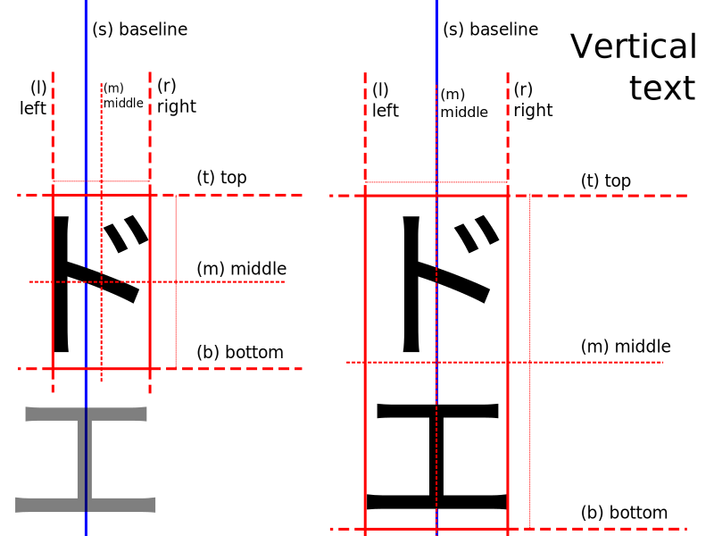
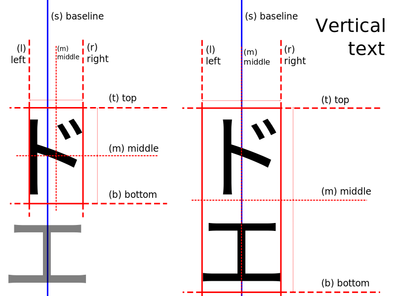
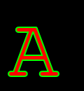

Pillow¶
Pillow is the friendly PIL fork by Alex Clark and Contributors. PIL is the Python Imaging Library by Fredrik Lundh and Contributors.
Pillow for enterprise is available via the Tidelift Subscription. Learn more.


Overview¶
The Python Imaging Library adds image processing capabilities to your Python interpreter.
This library provides extensive file format support, an efficient internal representation, and fairly powerful image processing capabilities.
The core image library is designed for fast access to data stored in a few basic pixel formats. It should provide a solid foundation for a general image processing tool.
Installation¶
Warnings¶
Warning
Pillow and PIL cannot co-exist in the same environment. Before installing Pillow, please uninstall PIL.
Warning
Pillow >= 1.0 no longer supports import Image. Please use from PIL import Image instead.
Warning
Pillow >= 2.1.0 no longer supports import _imaging. Please use from PIL.Image import core as _imaging instead.
Python Support¶
Pillow supports these Python versions.
Python |
3.10 |
3.9 |
3.8 |
3.7 |
3.6 |
3.5 |
3.4 |
2.7 |
|---|---|---|---|---|---|---|---|---|
Pillow >= 8.3.2 |
Yes |
Yes |
Yes |
Yes |
Yes |
|||
Pillow 8.0 - 8.3.1 |
Yes |
Yes |
Yes |
Yes |
||||
Pillow 7.0 - 7.2 |
Yes |
Yes |
Yes |
Yes |
||||
Pillow 6.2.1 - 6.2.2 |
Yes |
Yes |
Yes |
Yes |
Yes |
|||
Pillow 6.0 - 6.2.0 |
Yes |
Yes |
Yes |
Yes |
||||
Pillow 5.2 - 5.4 |
Yes |
Yes |
Yes |
Yes |
Yes |
Python |
3.6 |
3.5 |
3.4 |
3.3 |
3.2 |
2.7 |
2.6 |
2.5 |
2.4 |
|---|---|---|---|---|---|---|---|---|---|
Pillow 5.0 - 5.1 |
Yes |
Yes |
Yes |
Yes |
|||||
Pillow 4 |
Yes |
Yes |
Yes |
Yes |
Yes |
||||
Pillow 2 - 3 |
Yes |
Yes |
Yes |
Yes |
Yes |
Yes |
|||
Pillow < 2 |
Yes |
Yes |
Yes |
Yes |
Basic Installation¶
Note
The following instructions will install Pillow with support for most common image formats. See External Libraries for a full list of external libraries supported.
Install Pillow with pip:
python3 -m pip install --upgrade pip
python3 -m pip install --upgrade Pillow
Windows Installation¶
We provide Pillow binaries for Windows compiled for the matrix of supported Pythons in both 32 and 64-bit versions in the wheel format. These binaries include support for all optional libraries except libimagequant and libxcb. Raqm support requires FriBiDi to be installed separately:
python3 -m pip install --upgrade pip
python3 -m pip install --upgrade Pillow
To install Pillow in MSYS2, see Building on Windows using MSYS2/MinGW.
macOS Installation¶
We provide binaries for macOS for each of the supported Python versions in the wheel format. These include support for all optional libraries except libimagequant. Raqm support requires FriBiDi to be installed separately:
python3 -m pip install --upgrade pip
python3 -m pip install --upgrade Pillow
Linux Installation¶
We provide binaries for Linux for each of the supported Python versions in the manylinux wheel format. These include support for all optional libraries except libimagequant. Raqm support requires FriBiDi to be installed separately:
python3 -m pip install --upgrade pip
python3 -m pip install --upgrade Pillow
Most major Linux distributions, including Fedora, Ubuntu and ArchLinux
also include Pillow in packages that previously contained PIL e.g.
python-imaging. Debian splits it into two packages, python3-pil
and python3-pil.imagetk.
FreeBSD Installation¶
Pillow can be installed on FreeBSD via the official Ports or Packages systems:
Ports:
cd /usr/ports/graphics/py-pillow && make install clean
Packages:
pkg install py36-pillow
Note
The Pillow FreeBSD port and packages are tested by the ports team with all supported FreeBSD versions.
Building From Source¶
Download and extract the compressed archive from PyPI.
External Libraries¶
Note
You do not need to install all supported external libraries to use Pillow’s basic features. Zlib and libjpeg are required by default.
Note
There are Dockerfiles in our Docker images repo to install the dependencies for some operating systems.
Many of Pillow’s features require external libraries:
libjpeg provides JPEG functionality.
Pillow has been tested with libjpeg versions 6b, 8, 9-9d and libjpeg-turbo version 8.
Starting with Pillow 3.0.0, libjpeg is required by default, but may be disabled with the
--disable-jpegflag.
zlib provides access to compressed PNGs
Starting with Pillow 3.0.0, zlib is required by default, but may be disabled with the
--disable-zlibflag.
libtiff provides compressed TIFF functionality
Pillow has been tested with libtiff versions 3.x and 4.0-4.3
libfreetype provides type related services
littlecms provides color management
Pillow version 2.2.1 and below uses liblcms1, Pillow 2.3.0 and above uses liblcms2. Tested with 1.19 and 2.7-2.12.
libwebp provides the WebP format.
Pillow has been tested with version 0.1.3, which does not read transparent WebP files. Versions 0.3.0 and above support transparency.
tcl/tk provides support for tkinter bitmap and photo images.
openjpeg provides JPEG 2000 functionality.
Pillow has been tested with openjpeg 2.0.0, 2.1.0, 2.3.1 and 2.4.0.
Pillow does not support the earlier 1.5 series which ships with Debian Jessie.
libimagequant provides improved color quantization
Pillow has been tested with libimagequant 2.6-2.15.1
Libimagequant is licensed GPLv3, which is more restrictive than the Pillow license, therefore we will not be distributing binaries with libimagequant support enabled.
libraqm provides complex text layout support.
libraqm provides bidirectional text support (using FriBiDi), shaping (using HarfBuzz), and proper script itemization. As a result, Raqm can support most writing systems covered by Unicode.
libraqm depends on the following libraries: FreeType, HarfBuzz, FriBiDi, make sure that you install them before installing libraqm if not available as package in your system.
Setting text direction or font features is not supported without libraqm.
Pillow wheels since version 8.2.0 include a modified version of libraqm that loads libfribidi at runtime if it is installed. On Windows this requires compiling FriBiDi and installing
fribidi.dllinto a directory listed in the Dynamic-Link Library Search Order (Microsoft Docs) (fribidi-0.dllorlibfribidi-0.dllare also detected). See Build Options to see how to build this version.Previous versions of Pillow (5.0.0 to 8.1.2) linked libraqm dynamically at runtime.
libxcb provides X11 screengrab support.
Once you have installed the prerequisites, run:
python3 -m pip install --upgrade pip
python3 -m pip install --upgrade Pillow
If the prerequisites are installed in the standard library locations
for your machine (e.g. /usr or /usr/local), no
additional configuration should be required. If they are installed in
a non-standard location, you may need to configure setuptools to use
those locations by editing setup.py or
setup.cfg, or by adding environment variables on the command
line:
CFLAGS="-I/usr/pkg/include" python3 -m pip install --upgrade Pillow
If Pillow has been previously built without the required
prerequisites, it may be necessary to manually clear the pip cache or
build without cache using the --no-cache-dir option to force a
build with newly installed external libraries.
Build Options¶
Environment variable:
MAX_CONCURRENCY=n. Pillow can use multiprocessing to build the extension. SettingMAX_CONCURRENCYsets the number of CPUs to use, or can disable parallel building by using a setting of 1. By default, it uses 4 CPUs, or if 4 are not available, as many as are present.Build flags:
--disable-zlib,--disable-jpeg,--disable-tiff,--disable-freetype,--disable-lcms,--disable-webp,--disable-webpmux,--disable-jpeg2000,--disable-imagequant,--disable-xcb. Disable building the corresponding feature even if the development libraries are present on the building machine.Build flags:
--enable-zlib,--enable-jpeg,--enable-tiff,--enable-freetype,--enable-lcms,--enable-webp,--enable-webpmux,--enable-jpeg2000,--enable-imagequant,--enable-xcb. Require that the corresponding feature is built. The build will raise an exception if the libraries are not found. Webpmux (WebP metadata) relies on WebP support. Tcl and Tk also must be used together.Build flags:
--vendor-raqm --vendor-fribidiThese flags are used to compile a modified version of libraqm and a shim that dynamically loads libfribidi at runtime. These are used to compile the standard Pillow wheels. Compiling libraqm requires a C99-compliant compiler.Build flag:
--disable-platform-guessing. Skips all of the platform dependent guessing of include and library directories for automated build systems that configure the proper paths in the environment variables (e.g. Buildroot).Build flag:
--debug. Adds a debugging flag to the include and library search process to dump all paths searched for and found to stdout.
Sample usage:
MAX_CONCURRENCY=1 python3 setup.py build_ext --enable-[feature] install
or using pip:
python3 -m pip install --upgrade Pillow --global-option="build_ext" --global-option="--enable-[feature]"
Building on macOS¶
The Xcode command line tools are required to compile portions of
Pillow. The tools are installed by running xcode-select --install
from the command line. The command line tools are required even if you
have the full Xcode package installed. It may be necessary to run
sudo xcodebuild -license to accept the license prior to using the
tools.
The easiest way to install external libraries is via Homebrew. After you install Homebrew, run:
brew install libtiff libjpeg webp little-cms2
To install libraqm on macOS use Homebrew to install its dependencies:
brew install freetype harfbuzz fribidi
Then see depends/install_raqm_cmake.sh to install libraqm.
Now install Pillow with:
python3 -m pip install --upgrade pip
python3 -m pip install --upgrade Pillow
or from within the uncompressed source directory:
python3 setup.py install
Building on Windows¶
We recommend you use prebuilt wheels from PyPI.
If you wish to compile Pillow manually, you can use the build scripts
in the winbuild directory used for CI testing and development.
These scripts require Visual Studio 2017 or newer and NASM.
Building on Windows using MSYS2/MinGW¶
To build Pillow using MSYS2, make sure you run the MSYS2 MinGW 32-bit or MSYS2 MinGW 64-bit console, not MSYS2 directly.
The following instructions target the 64-bit build, for 32-bit
replace all occurrences of mingw-w64-x86_64- with mingw-w64-i686-.
Make sure you have Python and GCC installed:
pacman -S \
mingw-w64-x86_64-gcc \
mingw-w64-x86_64-python3 \
mingw-w64-x86_64-python3-pip \
mingw-w64-x86_64-python3-setuptools
Prerequisites are installed on MSYS2 MinGW 64-bit with:
pacman -S \
mingw-w64-x86_64-libjpeg-turbo \
mingw-w64-x86_64-zlib \
mingw-w64-x86_64-libtiff \
mingw-w64-x86_64-freetype \
mingw-w64-x86_64-lcms2 \
mingw-w64-x86_64-libwebp \
mingw-w64-x86_64-openjpeg2 \
mingw-w64-x86_64-libimagequant \
mingw-w64-x86_64-libraqm
Now install Pillow with:
python3 -m pip install --upgrade pip
python3 -m pip install --upgrade Pillow
Building on FreeBSD¶
Note
Only FreeBSD 10 and 11 tested
Make sure you have Python’s development libraries installed:
sudo pkg install python3
Prerequisites are installed on FreeBSD 10 or 11 with:
sudo pkg install jpeg-turbo tiff webp lcms2 freetype2 openjpeg harfbuzz fribidi libxcb
Then see depends/install_raqm_cmake.sh to install libraqm.
Building on Linux¶
If you didn’t build Python from source, make sure you have Python’s development libraries installed.
In Debian or Ubuntu:
sudo apt-get install python3-dev python3-setuptools
In Fedora, the command is:
sudo dnf install python3-devel redhat-rpm-config
In Alpine, the command is:
sudo apk add python3-dev py3-setuptools
Note
redhat-rpm-config is required on Fedora 23, but not earlier versions.
Prerequisites for Ubuntu 16.04 LTS - 20.04 LTS are installed with:
sudo apt-get install libtiff5-dev libjpeg8-dev libopenjp2-7-dev zlib1g-dev \
libfreetype6-dev liblcms2-dev libwebp-dev tcl8.6-dev tk8.6-dev python3-tk \
libharfbuzz-dev libfribidi-dev libxcb1-dev
Then see depends/install_raqm.sh to install libraqm.
Prerequisites are installed on recent Red Hat, CentOS or Fedora with:
sudo dnf install libtiff-devel libjpeg-devel openjpeg2-devel zlib-devel \
freetype-devel lcms2-devel libwebp-devel tcl-devel tk-devel \
harfbuzz-devel fribidi-devel libraqm-devel libimagequant-devel libxcb-devel
Note that the package manager may be yum or DNF, depending on the exact distribution.
Prerequisites are installed for Alpine with:
sudo apk add tiff-dev jpeg-dev openjpeg-dev zlib-dev freetype-dev lcms2-dev \
libwebp-dev tcl-dev tk-dev harfbuzz-dev fribidi-dev libimagequant-dev \
libxcb-dev libpng-dev
See also the Dockerfiles in the Test Infrastructure repo
(https://github.com/python-pillow/docker-images) for a known working
install process for other tested distros.
Building on Android¶
Basic Android support has been added for compilation within the Termux environment. The dependencies can be installed by:
pkg install -y python ndk-sysroot clang make \
libjpeg-turbo
This has been tested within the Termux app on ChromeOS, on x86.
Platform Support¶
Current platform support for Pillow. Binary distributions are contributed for each release on a volunteer basis, but the source should compile and run everywhere platform support is listed. In general, we aim to support all current versions of Linux, macOS, and Windows.
Continuous Integration Targets¶
These platforms are built and tested for every change.
Operating system |
Tested Python versions |
Tested architecture |
|---|---|---|
Alpine |
3.8 |
x86-64 |
Arch |
3.8 |
x86-64 |
Amazon Linux 2 |
3.7 |
x86-64 |
CentOS 7 |
3.6 |
x86-64 |
CentOS 8 |
3.6 |
x86-64 |
Debian 10 Buster |
3.7 |
x86 |
Fedora 33 |
3.9 |
x86-64 |
Fedora 34 |
3.9 |
x86-64 |
macOS 10.15 Catalina |
3.6, 3.7, 3.8, 3.9, PyPy3 |
x86-64 |
Ubuntu Linux 16.04 LTS (Xenial) |
3.6, 3.7, 3.8, 3.9, PyPy3 |
x86-64 |
Ubuntu Linux 18.04 LTS (Bionic) |
3.6, 3.7, 3.8, 3.9, PyPy3 |
x86-64 |
Ubuntu Linux 20.04 LTS (Focal) |
3.8 |
x86-64 |
Windows Server 2016 |
3.6 |
x86-64 |
Windows Server 2019 |
3.6, 3.7, 3.8, 3.9 |
x86, x86-64 |
PyPy3 |
x86 |
|
3.8/MinGW |
x86, x86-64 |
Other Platforms¶
These platforms have been reported to work at the versions mentioned.
Note
Contributors please test Pillow on your platform then update this document and send a pull request.
Operating system |
Tested Python
versions
|
Latest tested
Pillow version
|
Tested
processors
|
|---|---|---|---|
macOS 11.0 Big Sur |
3.7, 3.8, 3.9 |
8.2.0 |
arm |
3.6, 3.7, 3.8, 3.9 |
8.2.0 |
x86-64 |
|
macOS 10.15 Catalina |
3.6, 3.7, 3.8, 3.9 |
8.0.1 |
x86-64 |
3.5 |
7.2.0 |
||
macOS 10.14 Mojave |
3.5, 3.6, 3.7, 3.8 |
7.2.0 |
x86-64 |
2.7 |
6.0.0 |
||
3.4 |
5.4.1 |
||
macOS 10.13 High Sierra |
2.7, 3.4, 3.5, 3.6 |
4.2.1 |
x86-64 |
macOS 10.12 Sierra |
2.7, 3.4, 3.5, 3.6 |
4.1.1 |
x86-64 |
Mac OS X 10.11 El Capitan |
2.7, 3.4, 3.5, 3.6, 3.7 |
5.4.1 |
x86-64 |
3.3 |
4.1.0 |
||
Mac OS X 10.9 Mavericks |
2.7, 3.2, 3.3, 3.4 |
3.0.0 |
x86-64 |
Mac OS X 10.8 Mountain Lion |
2.6, 2.7, 3.2, 3.3 |
x86-64 |
|
Redhat Linux 6 |
2.6 |
x86 |
|
CentOS 6.3 |
2.7, 3.3 |
x86 |
|
Fedora 23 |
2.7, 3.4 |
3.1.0 |
x86-64 |
Ubuntu Linux 12.04 LTS (Precise) |
2.6, 3.2, 3.3, 3.4, 3.5
PyPy5.3.1, PyPy3 v2.4.0
|
3.4.1 |
x86,x86-64 |
2.7 |
4.3.0 |
x86-64 |
|
2.7, 3.2 |
3.4.1 |
ppc |
|
Ubuntu Linux 10.04 LTS (Lucid) |
2.6 |
2.3.0 |
x86,x86-64 |
Debian 8.2 Jessie |
2.7, 3.4 |
3.1.0 |
x86-64 |
Raspbian Jessie |
2.7, 3.4 |
3.1.0 |
arm |
Raspbian Stretch |
2.7, 3.5 |
4.0.0 |
arm |
Raspberry Pi OS |
3.6, 3.7, 3.8, 3.9 |
8.2.0 |
arm |
2.7 |
6.2.2 |
||
Gentoo Linux |
2.7, 3.2 |
2.1.0 |
x86-64 |
FreeBSD 11.1 |
2.7, 3.4, 3.5, 3.6 |
4.3.0 |
x86-64 |
FreeBSD 10.3 |
2.7, 3.4, 3.5 |
4.2.0 |
x86-64 |
FreeBSD 10.2 |
2.7, 3.4 |
3.1.0 |
x86-64 |
Windows 10 |
3.7 |
7.1.0 |
x86-64 |
Windows 8.1 Pro |
2.6, 2.7, 3.2, 3.3, 3.4 |
2.4.0 |
x86,x86-64 |
Windows 8 Pro |
2.6, 2.7, 3.2, 3.3, 3.4a3 |
2.2.0 |
x86,x86-64 |
Windows 7 Professional |
3.7 |
7.0.0 |
x86,x86-64 |
Windows Server 2008 R2 Enterprise |
3.3 |
x86-64 |
Old Versions¶
You can download old distributions from the release history at PyPI and by direct URL access eg. https://pypi.org/project/Pillow/1.0/.
Handbook¶
Overview¶
The Python Imaging Library adds image processing capabilities to your Python interpreter.
This library provides extensive file format support, an efficient internal representation, and fairly powerful image processing capabilities.
The core image library is designed for fast access to data stored in a few basic pixel formats. It should provide a solid foundation for a general image processing tool.
Let’s look at a few possible uses of this library.
Image Archives¶
The Python Imaging Library is ideal for image archival and batch processing applications. You can use the library to create thumbnails, convert between file formats, print images, etc.
The current version identifies and reads a large number of formats. Write support is intentionally restricted to the most commonly used interchange and presentation formats.
Image Display¶
The current release includes Tk PhotoImage and
BitmapImage interfaces, as well as a Windows
DIB interface that can be used with PythonWin and other
Windows-based toolkits. Many other GUI toolkits come with some kind of PIL
support.
For debugging, there’s also a show() method which saves an image to
disk, and calls an external display utility.
Image Processing¶
The library contains basic image processing functionality, including point operations, filtering with a set of built-in convolution kernels, and colour space conversions.
The library also supports image resizing, rotation and arbitrary affine transforms.
There’s a histogram method allowing you to pull some statistics out of an image. This can be used for automatic contrast enhancement, and for global statistical analysis.
Tutorial¶
Using the Image class¶
The most important class in the Python Imaging Library is the
Image class, defined in the module with the same name.
You can create instances of this class in several ways; either by loading
images from files, processing other images, or creating images from scratch.
To load an image from a file, use the open() function
in the Image module:
>>> from PIL import Image
>>> im = Image.open("hopper.ppm")
If successful, this function returns an Image object.
You can now use instance attributes to examine the file contents:
>>> print(im.format, im.size, im.mode)
PPM (512, 512) RGB
The format attribute identifies the source of an
image. If the image was not read from a file, it is set to None. The size
attribute is a 2-tuple containing width and height (in pixels). The
mode attribute defines the number and names of the
bands in the image, and also the pixel type and depth. Common modes are “L”
(luminance) for greyscale images, “RGB” for true color images, and “CMYK” for
pre-press images.
If the file cannot be opened, an OSError exception is raised.
Once you have an instance of the Image class, you can use
the methods defined by this class to process and manipulate the image. For
example, let’s display the image we just loaded:
>>> im.show()
Note
The standard version of show() is not very
efficient, since it saves the image to a temporary file and calls a utility
to display the image. If you don’t have an appropriate utility installed,
it won’t even work. When it does work though, it is very handy for
debugging and tests.
The following sections provide an overview of the different functions provided in this library.
Reading and writing images¶
The Python Imaging Library supports a wide variety of image file formats. To
read files from disk, use the open() function in the
Image module. You don’t have to know the file format to open a
file. The library automatically determines the format based on the contents of
the file.
To save a file, use the save() method of the
Image class. When saving files, the name becomes
important. Unless you specify the format, the library uses the filename
extension to discover which file storage format to use.
Convert files to JPEG¶
import os, sys
from PIL import Image
for infile in sys.argv[1:]:
f, e = os.path.splitext(infile)
outfile = f + ".jpg"
if infile != outfile:
try:
with Image.open(infile) as im:
im.save(outfile)
except OSError:
print("cannot convert", infile)
A second argument can be supplied to the save()
method which explicitly specifies a file format. If you use a non-standard
extension, you must always specify the format this way:
Create JPEG thumbnails¶
import os, sys
from PIL import Image
size = (128, 128)
for infile in sys.argv[1:]:
outfile = os.path.splitext(infile)[0] + ".thumbnail"
if infile != outfile:
try:
with Image.open(infile) as im:
im.thumbnail(size)
im.save(outfile, "JPEG")
except OSError:
print("cannot create thumbnail for", infile)
It is important to note that the library doesn’t decode or load the raster data unless it really has to. When you open a file, the file header is read to determine the file format and extract things like mode, size, and other properties required to decode the file, but the rest of the file is not processed until later.
This means that opening an image file is a fast operation, which is independent of the file size and compression type. Here’s a simple script to quickly identify a set of image files:
Identify Image Files¶
import sys
from PIL import Image
for infile in sys.argv[1:]:
try:
with Image.open(infile) as im:
print(infile, im.format, f"{im.size}x{im.mode}")
except OSError:
pass
Cutting, pasting, and merging images¶
The Image class contains methods allowing you to
manipulate regions within an image. To extract a sub-rectangle from an image,
use the crop() method.
Copying a subrectangle from an image¶
box = (100, 100, 400, 400)
region = im.crop(box)
The region is defined by a 4-tuple, where coordinates are (left, upper, right, lower). The Python Imaging Library uses a coordinate system with (0, 0) in the upper left corner. Also note that coordinates refer to positions between the pixels, so the region in the above example is exactly 300x300 pixels.
The region could now be processed in a certain manner and pasted back.
Processing a subrectangle, and pasting it back¶
region = region.transpose(Image.ROTATE_180)
im.paste(region, box)
When pasting regions back, the size of the region must match the given region exactly. In addition, the region cannot extend outside the image. However, the modes of the original image and the region do not need to match. If they don’t, the region is automatically converted before being pasted (see the section on Color transforms below for details).
Here’s an additional example:
Rolling an image¶
def roll(image, delta):
"""Roll an image sideways."""
xsize, ysize = image.size
delta = delta % xsize
if delta == 0: return image
part1 = image.crop((0, 0, delta, ysize))
part2 = image.crop((delta, 0, xsize, ysize))
image.paste(part1, (xsize-delta, 0, xsize, ysize))
image.paste(part2, (0, 0, xsize-delta, ysize))
return image
For more advanced tricks, the paste method can also take a transparency mask as an optional argument. In this mask, the value 255 indicates that the pasted image is opaque in that position (that is, the pasted image should be used as is). The value 0 means that the pasted image is completely transparent. Values in-between indicate different levels of transparency. For example, pasting an RGBA image and also using it as the mask would paste the opaque portion of the image but not its transparent background.
The Python Imaging Library also allows you to work with the individual bands of an multi-band image, such as an RGB image. The split method creates a set of new images, each containing one band from the original multi-band image. The merge function takes a mode and a tuple of images, and combines them into a new image. The following sample swaps the three bands of an RGB image:
Splitting and merging bands¶
r, g, b = im.split()
im = Image.merge("RGB", (b, g, r))
Note that for a single-band image, split() returns
the image itself. To work with individual color bands, you may want to convert
the image to “RGB” first.
Geometrical transforms¶
The PIL.Image.Image class contains methods to
resize() and rotate() an
image. The former takes a tuple giving the new size, the latter the angle in
degrees counter-clockwise.
Simple geometry transforms¶
out = im.resize((128, 128))
out = im.rotate(45) # degrees counter-clockwise
To rotate the image in 90 degree steps, you can either use the
rotate() method or the
transpose() method. The latter can also be used to
flip an image around its horizontal or vertical axis.
Transposing an image¶
out = im.transpose(Image.FLIP_LEFT_RIGHT)
out = im.transpose(Image.FLIP_TOP_BOTTOM)
out = im.transpose(Image.ROTATE_90)
out = im.transpose(Image.ROTATE_180)
out = im.transpose(Image.ROTATE_270)
transpose(ROTATE) operations can also be performed identically with
rotate() operations, provided the expand flag is
true, to provide for the same changes to the image’s size.
A more general form of image transformations can be carried out via the
transform() method.
Color transforms¶
The Python Imaging Library allows you to convert images between different pixel
representations using the convert() method.
Converting between modes¶
from PIL import Image
with Image.open("hopper.ppm") as im:
im = im.convert("L")
The library supports transformations between each supported mode and the “L” and “RGB” modes. To convert between other modes, you may have to use an intermediate image (typically an “RGB” image).
Image enhancement¶
The Python Imaging Library provides a number of methods and modules that can be used to enhance images.
Filters¶
The ImageFilter module contains a number of pre-defined
enhancement filters that can be used with the
filter() method.
Applying filters¶
from PIL import ImageFilter
out = im.filter(ImageFilter.DETAIL)
Point Operations¶
The point() method can be used to translate the pixel
values of an image (e.g. image contrast manipulation). In most cases, a
function object expecting one argument can be passed to this method. Each
pixel is processed according to that function:
Applying point transforms¶
# multiply each pixel by 1.2
out = im.point(lambda i: i * 1.2)
Using the above technique, you can quickly apply any simple expression to an
image. You can also combine the point() and
paste() methods to selectively modify an image:
Processing individual bands¶
# split the image into individual bands
source = im.split()
R, G, B = 0, 1, 2
# select regions where red is less than 100
mask = source[R].point(lambda i: i < 100 and 255)
# process the green band
out = source[G].point(lambda i: i * 0.7)
# paste the processed band back, but only where red was < 100
source[G].paste(out, None, mask)
# build a new multiband image
im = Image.merge(im.mode, source)
Note the syntax used to create the mask:
imout = im.point(lambda i: expression and 255)
Python only evaluates the portion of a logical expression as is necessary to determine the outcome, and returns the last value examined as the result of the expression. So if the expression above is false (0), Python does not look at the second operand, and thus returns 0. Otherwise, it returns 255.
Enhancement¶
For more advanced image enhancement, you can use the classes in the
ImageEnhance module. Once created from an image, an enhancement
object can be used to quickly try out different settings.
You can adjust contrast, brightness, color balance and sharpness in this way.
Enhancing images¶
from PIL import ImageEnhance
enh = ImageEnhance.Contrast(im)
enh.enhance(1.3).show("30% more contrast")
Image sequences¶
The Python Imaging Library contains some basic support for image sequences (also called animation formats). Supported sequence formats include FLI/FLC, GIF, and a few experimental formats. TIFF files can also contain more than one frame.
When you open a sequence file, PIL automatically loads the first frame in the sequence. You can use the seek and tell methods to move between different frames:
Reading sequences¶
from PIL import Image
with Image.open("animation.gif") as im:
im.seek(1) # skip to the second frame
try:
while 1:
im.seek(im.tell()+1)
# do something to im
except EOFError:
pass # end of sequence
As seen in this example, you’ll get an EOFError exception when the
sequence ends.
The following class lets you use the for-statement to loop over the sequence:
Using the ImageSequence Iterator class¶
from PIL import ImageSequence
for frame in ImageSequence.Iterator(im):
# ...do something to frame...
PostScript printing¶
The Python Imaging Library includes functions to print images, text and graphics on PostScript printers. Here’s a simple example:
Drawing PostScript¶
from PIL import Image
from PIL import PSDraw
with Image.open("hopper.ppm") as im:
title = "hopper"
box = (1*72, 2*72, 7*72, 10*72) # in points
ps = PSDraw.PSDraw() # default is sys.stdout or sys.stdout.buffer
ps.begin_document(title)
# draw the image (75 dpi)
ps.image(box, im, 75)
ps.rectangle(box)
# draw title
ps.setfont("HelveticaNarrow-Bold", 36)
ps.text((3*72, 4*72), title)
ps.end_document()
More on reading images¶
As described earlier, the open() function of the
Image module is used to open an image file. In most cases, you
simply pass it the filename as an argument. Image.open() can be used as a
context manager:
from PIL import Image
with Image.open("hopper.ppm") as im:
...
If everything goes well, the result is an PIL.Image.Image object.
Otherwise, an OSError exception is raised.
You can use a file-like object instead of the filename. The object must
implement file.read, file.seek and file.tell methods,
and be opened in binary mode.
Reading from an open file¶
from PIL import Image
with open("hopper.ppm", "rb") as fp:
im = Image.open(fp)
To read an image from binary data, use the BytesIO
class:
Reading from binary data¶
from PIL import Image
import io
im = Image.open(io.BytesIO(buffer))
Note that the library rewinds the file (using seek(0)) before reading the
image header. In addition, seek will also be used when the image data is read
(by the load method). If the image file is embedded in a larger file, such as a
tar file, you can use the ContainerIO or
TarIO modules to access it.
Reading from a tar archive¶
from PIL import Image, TarIO
fp = TarIO.TarIO("Tests/images/hopper.tar", "hopper.jpg")
im = Image.open(fp)
Controlling the decoder¶
Some decoders allow you to manipulate the image while reading it from a file. This can often be used to speed up decoding when creating thumbnails (when speed is usually more important than quality) and printing to a monochrome laser printer (when only a greyscale version of the image is needed).
The draft() method manipulates an opened but not yet
loaded image so it as closely as possible matches the given mode and size. This
is done by reconfiguring the image decoder.
Reading in draft mode¶
This is only available for JPEG and MPO files.
from PIL import Image
with Image.open(file) as im:
print("original =", im.mode, im.size)
im.draft("L", (100, 100))
print("draft =", im.mode, im.size)
This prints something like:
original = RGB (512, 512)
draft = L (128, 128)
Note that the resulting image may not exactly match the requested mode and size. To make sure that the image is not larger than the given size, use the thumbnail method instead.
Concepts¶
The Python Imaging Library handles raster images; that is, rectangles of pixel data.
Bands¶
An image can consist of one or more bands of data. The Python Imaging Library allows you to store several bands in a single image, provided they all have the same dimensions and depth. For example, a PNG image might have ‘R’, ‘G’, ‘B’, and ‘A’ bands for the red, green, blue, and alpha transparency values. Many operations act on each band separately, e.g., histograms. It is often useful to think of each pixel as having one value per band.
To get the number and names of bands in an image, use the
getbands() method.
Modes¶
The mode of an image is a string which defines the type and depth of a pixel in the image.
Each pixel uses the full range of the bit depth. So a 1-bit pixel has a range
of 0-1, an 8-bit pixel has a range of 0-255 and so on. The current release
supports the following standard modes:
1(1-bit pixels, black and white, stored with one pixel per byte)
L(8-bit pixels, black and white)
P(8-bit pixels, mapped to any other mode using a color palette)
RGB(3x8-bit pixels, true color)
RGBA(4x8-bit pixels, true color with transparency mask)
CMYK(4x8-bit pixels, color separation)
YCbCr(3x8-bit pixels, color video format)
Note that this refers to the JPEG, and not the ITU-R BT.2020, standard
LAB(3x8-bit pixels, the L*a*b color space)
HSV(3x8-bit pixels, Hue, Saturation, Value color space)
I(32-bit signed integer pixels)
F(32-bit floating point pixels)
Pillow also provides limited support for a few additional modes, including:
LA(L with alpha)
PA(P with alpha)
RGBX(true color with padding)
RGBa(true color with premultiplied alpha)
La(L with premultiplied alpha)
I;16(16-bit unsigned integer pixels)
I;16L(16-bit little endian unsigned integer pixels)
I;16B(16-bit big endian unsigned integer pixels)
I;16N(16-bit native endian unsigned integer pixels)
BGR;15(15-bit reversed true colour)
BGR;16(16-bit reversed true colour)
BGR;24(24-bit reversed true colour)
BGR;32(32-bit reversed true colour)
However, Pillow doesn’t support user-defined modes; if you need to handle band combinations that are not listed above, use a sequence of Image objects.
You can read the mode of an image through the mode
attribute. This is a string containing one of the above values.
Size¶
You can read the image size through the size
attribute. This is a 2-tuple, containing the horizontal and vertical size in
pixels.
Coordinate System¶
The Python Imaging Library uses a Cartesian pixel coordinate system, with (0,0) in the upper left corner. Note that the coordinates refer to the implied pixel corners; the centre of a pixel addressed as (0, 0) actually lies at (0.5, 0.5).
Coordinates are usually passed to the library as 2-tuples (x, y). Rectangles are represented as 4-tuples, with the upper left corner given first. For example, a rectangle covering all of an 800x600 pixel image is written as (0, 0, 800, 600).
Palette¶
The palette mode (P) uses a color palette to define the actual color for
each pixel.
Info¶
You can attach auxiliary information to an image using the
info attribute. This is a dictionary object.
How such information is handled when loading and saving image files is up to
the file format handler (see the chapter on Image file formats). Most
handlers add properties to the info attribute when
loading an image, but ignore it when saving images.
Orientation¶
A common element of the info attribute for JPG and
TIFF images is the EXIF orientation tag. This is an instruction for how the
image data should be oriented. For example, it may instruct an image to be
rotated by 90 degrees, or to be mirrored. To apply this information to an
image, exif_transpose() can be used.
Filters¶
For geometry operations that may map multiple input pixels to a single output pixel, the Python Imaging Library provides different resampling filters.
- PIL.Image.NEAREST¶
Pick one nearest pixel from the input image. Ignore all other input pixels.
- PIL.Image.BOX¶
Each pixel of source image contributes to one pixel of the destination image with identical weights. For upscaling is equivalent of
NEAREST. This filter can only be used with theresize()andthumbnail()methods.New in version 3.4.0.
- PIL.Image.BILINEAR¶
For resize calculate the output pixel value using linear interpolation on all pixels that may contribute to the output value. For other transformations linear interpolation over a 2x2 environment in the input image is used.
- PIL.Image.HAMMING¶
Produces a sharper image than
BILINEAR, doesn’t have dislocations on local level like withBOX. This filter can only be used with theresize()andthumbnail()methods.New in version 3.4.0.
- PIL.Image.BICUBIC¶
For resize calculate the output pixel value using cubic interpolation on all pixels that may contribute to the output value. For other transformations cubic interpolation over a 4x4 environment in the input image is used.
- PIL.Image.LANCZOS¶
Calculate the output pixel value using a high-quality Lanczos filter (a truncated sinc) on all pixels that may contribute to the output value. This filter can only be used with the
resize()andthumbnail()methods.New in version 1.1.3.
Filters comparison table¶
Filter |
Downscaling quality |
Upscaling quality |
Performance |
|---|---|---|---|
⭐⭐⭐⭐⭐ |
|||
⭐ |
⭐⭐⭐⭐ |
||
⭐ |
⭐ |
⭐⭐⭐ |
|
⭐⭐ |
⭐⭐⭐ |
||
⭐⭐⭐ |
⭐⭐⭐ |
⭐⭐ |
|
⭐⭐⭐⭐ |
⭐⭐⭐⭐ |
⭐ |
Appendices¶
Note
Contributors please include appendices as needed or appropriate with your bug fixes, feature additions and tests.
Image file formats¶
The Python Imaging Library supports a wide variety of raster file formats. Over 30 different file formats can be identified and read by the library. Write support is less extensive, but most common interchange and presentation formats are supported.
The open() function identifies files from their
contents, not their names, but the save() method
looks at the name to determine which format to use, unless the format is given
explicitly.
When an image is opened from a file, only that instance of the image is considered to
have the format. Copies of the image will contain data loaded from the file, but not
the file itself, meaning that it can no longer be considered to be in the original
format. So if copy() is called on an image, or another method
internally creates a copy of the image, the fp (file pointer), along with any
methods and attributes specific to a format. The format
attribute will be None.
Fully supported formats¶
Contents
BMP¶
Pillow reads and writes Windows and OS/2 BMP files containing 1, L, P,
or RGB data. 16-colour images are read as P images. Run-length encoding
is not supported.
The open() method sets the following
info properties:
- compression
Set to
bmp_rleif the file is run-length encoded.
DDS¶
DDS is a popular container texture format used in video games and natively supported
by DirectX. Uncompressed RGB and RGBA can be read, and (since 8.3.0) written. DXT1,
DXT3 (since 3.4.0) and DXT5 pixel formats can be read, only in RGBA mode.
DIB¶
Pillow reads and writes DIB files. DIB files are similar to BMP files, so see above for more information.
New in version 6.0.0.
EPS¶
Pillow identifies EPS files containing image data, and can read files that
contain embedded raster images (ImageData descriptors). If Ghostscript is
available, other EPS files can be read as well. The EPS driver can also write
EPS images. The EPS driver can read EPS images in L, LAB, RGB and
CMYK mode, but Ghostscript may convert the images to RGB mode rather
than leaving them in the original color space. The EPS driver can write images
in L, RGB and CMYK modes.
If Ghostscript is available, you can call the load()
method with the following parameter to affect how Ghostscript renders the EPS
- scale
Affects the scale of the resultant rasterized image. If the EPS suggests that the image be rendered at 100px x 100px, setting this parameter to 2 will make the Ghostscript render a 200px x 200px image instead. The relative position of the bounding box is maintained:
im = Image.open(...) im.size #(100,100) im.load(scale=2) im.size #(200,200)
GIF¶
Pillow reads GIF87a and GIF89a versions of the GIF file format. The library writes run-length encoded files in GIF87a by default, unless GIF89a features are used or GIF89a is already in use.
Note that GIF files are always read as grayscale (L)
or palette mode (P) images.
The open() method sets the following
info properties:
- background
Default background color (a palette color index).
- transparency
Transparency color index. This key is omitted if the image is not transparent.
- version
Version (either
GIF87aorGIF89a).- duration
May not be present. The time to display the current frame of the GIF, in milliseconds.
- loop
May not be present. The number of times the GIF should loop. 0 means that it will loop forever.
- comment
May not be present. A comment about the image.
- extension
May not be present. Contains application specific information.
The GIF loader supports the seek() and
tell() methods. You can combine these methods
to seek to the next frame (im.seek(im.tell() + 1)).
im.seek() raises an EOFError if you try to seek after the last frame.
When calling save() to write a GIF file, the
following options are available:
im.save(out, save_all=True, append_images=[im1, im2, ...])
- save_all
If present and true, all frames of the image will be saved. If not, then only the first frame of a multiframe image will be saved.
- append_images
A list of images to append as additional frames. Each of the images in the list can be single or multiframe images. This is currently supported for GIF, PDF, PNG, TIFF, and WebP.
It is also supported for ICO and ICNS. If images are passed in of relevant sizes, they will be used instead of scaling down the main image.
- include_color_table
Whether or not to include local color table.
- interlace
Whether or not the image is interlaced. By default, it is, unless the image is less than 16 pixels in width or height.
- disposal
Indicates the way in which the graphic is to be treated after being displayed.
0 - No disposal specified.
1 - Do not dispose.
2 - Restore to background color.
3 - Restore to previous content.
Pass a single integer for a constant disposal, or a list or tuple to set the disposal for each frame separately.
- palette
Use the specified palette for the saved image. The palette should be a bytes or bytearray object containing the palette entries in RGBRGB… form. It should be no more than 768 bytes. Alternately, the palette can be passed in as an
PIL.ImagePalette.ImagePaletteobject.- optimize
If present and true, attempt to compress the palette by eliminating unused colors. This is only useful if the palette can be compressed to the next smaller power of 2 elements.
Note that if the image you are saving comes from an existing GIF, it may have
the following properties in its info dictionary.
For these options, if you do not pass them in, they will default to
their info values.
- transparency
Transparency color index.
- duration
The display duration of each frame of the multiframe gif, in milliseconds. Pass a single integer for a constant duration, or a list or tuple to set the duration for each frame separately.
- loop
Integer number of times the GIF should loop. 0 means that it will loop forever. By default, the image will not loop.
- comment
A comment about the image.
The GIF loader creates an image memory the same size as the GIF file’s logical
screen size, and pastes the actual pixel data (the local image) into this
image. If you only want the actual pixel rectangle, you can manipulate the
size and tile
attributes before loading the file:
im = Image.open(...)
if im.tile[0][0] == "gif":
# only read the first "local image" from this GIF file
tag, (x0, y0, x1, y1), offset, extra = im.tile[0]
im.size = (x1 - x0, y1 - y0)
im.tile = [(tag, (0, 0) + im.size, offset, extra)]
ICNS¶
Pillow reads and writes macOS .icns files. By default, the
largest available icon is read, though you can override this by setting the
size property before calling
load(). The open() method
sets the following info property:
Note
Prior to version 8.3.0, Pillow could only write ICNS files on macOS.
- sizes
A list of supported sizes found in this icon file; these are a 3-tuple,
(width, height, scale), wherescaleis 2 for a retina icon and 1 for a standard icon. You are permitted to use this 3-tuple format for thesizeproperty if you set it before callingload(); after loading, the size will be reset to a 2-tuple containing pixel dimensions (so, e.g. if you ask for(512, 512, 2), the final value ofsizewill be(1024, 1024)).
The save() method can take the following keyword arguments:
- append_images
A list of images to replace the scaled down versions of the image. The order of the images does not matter, as their use is determined by the size of each image.
New in version 5.1.0.
ICO¶
ICO is used to store icons on Windows. The largest available icon is read.
The save() method supports the following options:
- sizes
A list of sizes including in this ico file; these are a 2-tuple,
(width, height); Default to[(16, 16), (24, 24), (32, 32), (48, 48), (64, 64), (128, 128), (256, 256)]. Any sizes bigger than the original size or 256 will be ignored.
The save() method can take the following keyword arguments:
- append_images
A list of images to replace the scaled down versions of the image. The order of the images does not matter, as their use is determined by the size of each image.
New in version 8.1.0.
- bitmap_format
By default, the image data will be saved in PNG format. With a bitmap format of “bmp”, image data will be saved in BMP format instead.
New in version 8.3.0.
IM¶
IM is a format used by LabEye and other applications based on the IFUNC image processing library. The library reads and writes most uncompressed interchange versions of this format.
IM is the only format that can store all internal Pillow formats.
JPEG¶
Pillow reads JPEG, JFIF, and Adobe JPEG files containing L, RGB, or
CMYK data. It writes standard and progressive JFIF files.
Using the draft() method, you can speed things up by
converting RGB images to L, and resize images to 1/2, 1/4 or 1/8 of
their original size while loading them.
By default Pillow doesn’t allow loading of truncated JPEG files, set
ImageFile.LOAD_TRUNCATED_IMAGES to override this.
The open() method may set the following
info properties if available:
- jfif
JFIF application marker found. If the file is not a JFIF file, this key is not present.
- jfif_version
A tuple representing the jfif version, (major version, minor version).
- jfif_density
A tuple representing the pixel density of the image, in units specified by jfif_unit.
- jfif_unit
Units for the jfif_density:
0 - No Units
1 - Pixels per Inch
2 - Pixels per Centimeter
- dpi
A tuple representing the reported pixel density in pixels per inch, if the file is a jfif file and the units are in inches.
- adobe
Adobe application marker found. If the file is not an Adobe JPEG file, this key is not present.
- adobe_transform
Vendor Specific Tag.
- progression
Indicates that this is a progressive JPEG file.
- icc_profile
The ICC color profile for the image.
- exif
Raw EXIF data from the image.
- comment
A comment about the image.
New in version 7.1.0.
The save() method supports the following options:
- quality
The image quality, on a scale from 0 (worst) to 95 (best). The default is 75. Values above 95 should be avoided; 100 disables portions of the JPEG compression algorithm, and results in large files with hardly any gain in image quality.
- optimize
If present and true, indicates that the encoder should make an extra pass over the image in order to select optimal encoder settings.
- progressive
If present and true, indicates that this image should be stored as a progressive JPEG file.
- dpi
A tuple of integers representing the pixel density,
(x,y).- icc_profile
If present and true, the image is stored with the provided ICC profile. If this parameter is not provided, the image will be saved with no profile attached. To preserve the existing profile:
im.save(filename, 'jpeg', icc_profile=im.info.get('icc_profile'))
- exif
If present, the image will be stored with the provided raw EXIF data.
- subsampling
If present, sets the subsampling for the encoder.
keep: Only valid for JPEG files, will retain the original image setting.4:4:4,4:2:2,4:2:0: Specific sampling values-1: equivalent tokeep0: equivalent to4:4:41: equivalent to4:2:22: equivalent to4:2:0
- qtables
If present, sets the qtables for the encoder. This is listed as an advanced option for wizards in the JPEG documentation. Use with caution.
qtablescan be one of several types of values:a string, naming a preset, e.g.
keep,web_low, orweb_higha list, tuple, or dictionary (with integer keys = range(len(keys))) of lists of 64 integers. There must be between 2 and 4 tables.
New in version 2.5.0.
Note
To enable JPEG support, you need to build and install the IJG JPEG library before building the Python Imaging Library. See the distribution README for details.
JPEG 2000¶
New in version 2.4.0.
Pillow reads and writes JPEG 2000 files containing L, LA, RGB or
RGBA data. It can also read files containing YCbCr data, which it
converts on read into RGB or RGBA depending on whether or not there is
an alpha channel. Pillow supports JPEG 2000 raw codestreams (.j2k files),
as well as boxed JPEG 2000 files (.j2p or .jpx files). Pillow does
not support files whose components have different sampling frequencies.
When loading, if you set the mode on the image prior to the
load() method being invoked, you can ask Pillow to
convert the image to either RGB or RGBA rather than choosing for
itself. It is also possible to set reduce to the number of resolutions to
discard (each one reduces the size of the resulting image by a factor of 2),
and layers to specify the number of quality layers to load.
The save() method supports the following options:
- offset
The image offset, as a tuple of integers, e.g. (16, 16)
- tile_offset
The tile offset, again as a 2-tuple of integers.
- tile_size
The tile size as a 2-tuple. If not specified, or if set to None, the image will be saved without tiling.
- quality_mode
Either
"rates"or"dB"depending on the units you want to use to specify image quality.- quality_layers
A sequence of numbers, each of which represents either an approximate size reduction (if quality mode is
"rates") or a signal to noise ratio value in decibels. If not specified, defaults to a single layer of full quality.- num_resolutions
The number of different image resolutions to be stored (which corresponds to the number of Discrete Wavelet Transform decompositions plus one).
- codeblock_size
The code-block size as a 2-tuple. Minimum size is 4 x 4, maximum is 1024 x 1024, with the additional restriction that no code-block may have more than 4096 coefficients (i.e. the product of the two numbers must be no greater than 4096).
- precinct_size
The precinct size as a 2-tuple. Must be a power of two along both axes, and must be greater than the code-block size.
- irreversible
If
True, use the lossy Irreversible Color Transformation followed by DWT 9-7. Defaults toFalse, which means to use the Reversible Color Transformation with DWT 5-3.- progression
Controls the progression order; must be one of
"LRCP","RLCP","RPCL","PCRL","CPRL". The letters stand for Component, Position, Resolution and Layer respectively and control the order of encoding, the idea being that e.g. an image encoded using LRCP mode can have its quality layers decoded as they arrive at the decoder, while one encoded using RLCP mode will have increasing resolutions decoded as they arrive, and so on.- cinema_mode
Set the encoder to produce output compliant with the digital cinema specifications. The options here are
"no"(the default),"cinema2k-24"for 24fps 2K,"cinema2k-48"for 48fps 2K, and"cinema4k-24"for 24fps 4K. Note that for compliant 2K files, at least one of your image dimensions must match 2048 x 1080, while for compliant 4K files, at least one of the dimensions must match 4096 x 2160.
Note
To enable JPEG 2000 support, you need to build and install the OpenJPEG library, version 2.0.0 or higher, before building the Python Imaging Library.
Windows users can install the OpenJPEG binaries available on the
OpenJPEG website, but must add them to their PATH in order to use Pillow (if
you fail to do this, you will get errors about not being able to load the
_imaging DLL).
MSP¶
Pillow identifies and reads MSP files from Windows 1 and 2. The library writes uncompressed (Windows 1) versions of this format.
PCX¶
Pillow reads and writes PCX files containing 1, L, P, or RGB data.
PNG¶
Pillow identifies, reads, and writes PNG files containing 1, L, LA,
I, P, RGB or RGBA data. Interlaced files are supported as of
v1.1.7.
As of Pillow 6.0, EXIF data can be read from PNG images. However, unlike other
image formats, EXIF data is not guaranteed to be present in
info until load() has been
called.
By default Pillow doesn’t allow loading of truncated PNG files, set
ImageFile.LOAD_TRUNCATED_IMAGES to override this.
The open() function sets the following
info properties, when appropriate:
- chromaticity
The chromaticity points, as an 8 tuple of floats. (
White Point X,White Point Y,Red X,Red Y,Green X,Green Y,Blue X,Blue Y)- gamma
Gamma, given as a floating point number.
- srgb
The sRGB rendering intent as an integer.
0 Perceptual
1 Relative Colorimetric
2 Saturation
3 Absolute Colorimetric
- transparency
For
Pimages: Either the palette index for full transparent pixels, or a byte string with alpha values for each palette entry.For
1,L,IandRGBimages, the color that represents full transparent pixels in this image.This key is omitted if the image is not a transparent palette image.
open also sets Image.text to a dictionary of the values of the
tEXt, zTXt, and iTXt chunks of the PNG image. Individual
compressed chunks are limited to a decompressed size of
PngImagePlugin.MAX_TEXT_CHUNK, by default 1MB, to prevent
decompression bombs. Additionally, the total size of all of the text
chunks is limited to PngImagePlugin.MAX_TEXT_MEMORY, defaulting to
64MB.
The save() method supports the following options:
- optimize
If present and true, instructs the PNG writer to make the output file as small as possible. This includes extra processing in order to find optimal encoder settings.
- transparency
For
P,1,L,I, andRGBimages, this option controls what color from the image to mark as transparent.For
Pimages, this can be a either the palette index, or a byte string with alpha values for each palette entry.- dpi
A tuple of two numbers corresponding to the desired dpi in each direction.
- pnginfo
A
PIL.PngImagePlugin.PngInfoinstance containing chunks.- compress_level
ZLIB compression level, a number between 0 and 9: 1 gives best speed, 9 gives best compression, 0 gives no compression at all. Default is 6. When
optimizeoption is Truecompress_levelhas no effect (it is set to 9 regardless of a value passed).- icc_profile
The ICC Profile to include in the saved file.
- exif
The exif data to include in the saved file.
New in version 6.0.0.
- bits (experimental)
For
Pimages, this option controls how many bits to store. If omitted, the PNG writer uses 8 bits (256 colors).- dictionary (experimental)
Set the ZLIB encoder dictionary.
Note
To enable PNG support, you need to build and install the ZLIB compression library before building the Python Imaging Library. See the installation documentation for details.
The PNG loader includes limited support for reading and writing Animated Portable
Network Graphics (APNG) files.
When an APNG file is loaded, get_format_mimetype()
will return "image/apng". The value of the is_animated
property will be True when the n_frames property is
greater than 1. For APNG files, the n_frames property depends on both the animation
frame count as well as the presence or absence of a default image. See the
default_image property documentation below for more details.
The seek() and tell() methods
are supported.
im.seek() raises an EOFError if you try to seek after the last frame.
These info properties will be set for APNG frames,
where applicable:
- default_image
Specifies whether or not this APNG file contains a separate default image, which is not a part of the actual APNG animation.
When an APNG file contains a default image, the initially loaded image (i.e. the result of
seek(0)) will be the default image. To account for the presence of the default image, then_framesproperty will be set toframe_count + 1, whereframe_countis the actual APNG animation frame count. To load the first APNG animation frame,seek(1)must be called.True- The APNG contains default image, which is not an animation frame.False- The APNG does not contain a default image. Then_framesproperty will be set to the actual APNG animation frame count. The initially loaded image (i.e.seek(0)) will be the first APNG animation frame.
- loop
The number of times to loop this APNG, 0 indicates infinite looping.
- duration
The time to display this APNG frame (in milliseconds).
Note
The APNG loader returns images the same size as the APNG file’s logical screen size. The returned image contains the pixel data for a given frame, after applying any APNG frame disposal and frame blend operations (i.e. it contains what a web browser would render for this frame - the composite of all previous frames and this frame).
Any APNG file containing sequence errors is treated as an invalid image. The APNG loader will not attempt to repair and reorder files containing sequence errors.
When calling save(), by default only a single frame PNG file
will be saved. To save an APNG file (including a single frame APNG), the save_all
parameter must be set to True. The following parameters can also be set:
- default_image
Boolean value, specifying whether or not the base image is a default image. If
True, the base image will be used as the default image, and the first image from theappend_imagessequence will be the first APNG animation frame. IfFalse, the base image will be used as the first APNG animation frame. Defaults toFalse.- append_images
A list or tuple of images to append as additional frames. Each of the images in the list can be single or multiframe images. The size of each frame should match the size of the base image. Also note that if a frame’s mode does not match that of the base image, the frame will be converted to the base image mode.
- loop
Integer number of times to loop this APNG, 0 indicates infinite looping. Defaults to 0.
- duration
Integer (or list or tuple of integers) length of time to display this APNG frame (in milliseconds). Defaults to 0.
- disposal
An integer (or list or tuple of integers) specifying the APNG disposal operation to be used for this frame before rendering the next frame. Defaults to 0.
0 (
APNG_DISPOSE_OP_NONE, default) - No disposal is done on this frame before rendering the next frame.1 (
PIL.PngImagePlugin.APNG_DISPOSE_OP_BACKGROUND) - This frame’s modified region is cleared to fully transparent black before rendering the next frame.2 (
APNG_DISPOSE_OP_PREVIOUS) - This frame’s modified region is reverted to the previous frame’s contents before rendering the next frame.
- blend
An integer (or list or tuple of integers) specifying the APNG blend operation to be used for this frame before rendering the next frame. Defaults to 0.
0 (
APNG_BLEND_OP_SOURCE) - All color components of this frame, including alpha, overwrite the previous output image contents.1 (
APNG_BLEND_OP_OVER) - This frame should be alpha composited with the previous output image contents.
Note
The duration, disposal and blend parameters can be set to lists or tuples to
specify values for each individual frame in the animation. The length of the list or tuple
must be identical to the total number of actual frames in the APNG animation.
If the APNG contains a default image (i.e. default_image is set to True),
these list or tuple parameters should not include an entry for the default image.
PPM¶
Pillow reads and writes PBM, PGM, PPM and PNM files containing 1, L or
RGB data.
SGI¶
Pillow reads and writes uncompressed L, RGB, and RGBA files.
SPIDER¶
Pillow reads and writes SPIDER image files of 32-bit floating point data (“F;32F”).
Pillow also reads SPIDER stack files containing sequences of SPIDER images. The
seek() and tell() methods are supported, and
random access is allowed.
The open() method sets the following attributes:
- format
Set to
SPIDER- istack
Set to 1 if the file is an image stack, else 0.
- n_frames
Set to the number of images in the stack.
A convenience method, convert2byte(),
is provided for converting floating point data to byte data (mode L):
im = Image.open('image001.spi').convert2byte()
The extension of SPIDER files may be any 3 alphanumeric characters. Therefore the output format must be specified explicitly:
im.save('newimage.spi', format='SPIDER')
For more information about the SPIDER image processing package, see the SPIDER homepage at Wadsworth Center.
TGA¶
Pillow reads and writes TGA images containing L, LA, P,
RGB, and RGBA data. Pillow can read and write both uncompressed and
run-length encoded TGAs.
TIFF¶
Pillow reads and writes TIFF files. It can read both striped and tiled images, pixel and plane interleaved multi-band images. If you have libtiff and its headers installed, Pillow can read and write many kinds of compressed TIFF files. If not, Pillow will only read and write uncompressed files.
Note
Beginning in version 5.0.0, Pillow requires libtiff to read or write compressed files. Prior to that release, Pillow had buggy support for reading Packbits, LZW and JPEG compressed TIFFs without using libtiff.
The open() method sets the following
info properties:
- compression
Compression mode.
New in version 2.0.0.
- dpi
Image resolution as an
(xdpi, ydpi)tuple, where applicable. You can use thetagattribute to get more detailed information about the image resolution.New in version 1.1.5.
- resolution
Image resolution as an
(xres, yres)tuple, where applicable. This is a measurement in whichever unit is specified by the file.New in version 1.1.5.
The tag_v2 attribute contains a
dictionary of TIFF metadata. The keys are numerical indexes from
TiffTags.TAGS_V2. Values are strings or numbers for single
items, multiple values are returned in a tuple of values. Rational
numbers are returned as a IFDRational
object.
New in version 3.0.0.
For compatibility with legacy code, the
tag attribute contains a dictionary
of decoded TIFF fields as returned prior to version 3.0.0. Values are
returned as either strings or tuples of numeric values. Rational
numbers are returned as a tuple of (numerator, denominator).
Deprecated since version 3.0.0.
The TIFF loader supports the seek() and
tell() methods, taking and returning frame numbers
within the image file. You can combine these methods to seek to the next frame
(im.seek(im.tell() + 1)). Frames are numbered from 0 to im.num_frames - 1,
and can be accessed in any order.
im.seek() raises an EOFError if you try to seek after the
last frame.
The save() method can take the following keyword arguments:
- save_all
If true, Pillow will save all frames of the image to a multiframe tiff document.
New in version 3.4.0.
- append_images
A list of images to append as additional frames. Each of the images in the list can be single or multiframe images. Note however, that for correct results, all the appended images should have the same
encoderinfoandencoderconfigproperties.New in version 4.2.0.
- tiffinfo
A
ImageFileDirectory_v2object or dict object containing tiff tags and values. The TIFF field type is autodetected for Numeric and string values, any other types require using anImageFileDirectory_v2object and setting the type intagtypewith the appropriate numerical value fromTiffTags.TYPES.New in version 2.3.0.
Metadata values that are of the rational type should be passed in using a
IFDRationalobject.New in version 3.1.0.
For compatibility with legacy code, a
ImageFileDirectory_v1object may be passed in this field. However, this is deprecated.New in version 5.4.0.
Previous versions only supported some tags when writing using libtiff. The supported list is found in
TiffTags.LIBTIFF_CORE.New in version 6.1.0.
Added support for signed types (e.g.
TIFF_SIGNED_LONG) and multiple values. Multiple values for a single tag must be toImageFileDirectory_v2as a tuple and require a matching type intagtypetagtype.- compression
A string containing the desired compression method for the file. (valid only with libtiff installed) Valid compression methods are:
None,"group3","group4","jpeg","lzma","packbits","tiff_adobe_deflate","tiff_ccitt","tiff_lzw","tiff_raw_16","tiff_sgilog","tiff_sgilog24","tiff_thunderscan","webp"`, ``"zstd"- quality
The image quality for JPEG compression, on a scale from 0 (worst) to 100 (best). The default is 75.
New in version 6.1.0.
These arguments to set the tiff header fields are an alternative to using the general tags available through tiffinfo.
description
software
date_time
artist
- copyright
Strings
- icc_profile
The ICC Profile to include in the saved file.
- resolution_unit
An integer. 1 for no unit, 2 for inches and 3 for centimeters.
- resolution
Either an integer or a float, used for both the x and y resolution.
- x_resolution
Either an integer or a float.
- y_resolution
Either an integer or a float.
- dpi
A tuple of (x_resolution, y_resolution), with inches as the resolution unit. For consistency with other image formats, the x and y resolutions of the dpi will be rounded to the nearest integer.
WebP¶
Pillow reads and writes WebP files. The specifics of Pillow’s capabilities with this format are currently undocumented.
The save() method supports the following options:
- lossless
If present and true, instructs the WebP writer to use lossless compression.
- quality
Integer, 1-100, Defaults to 80. For lossy, 0 gives the smallest size and 100 the largest. For lossless, this parameter is the amount of effort put into the compression: 0 is the fastest, but gives larger files compared to the slowest, but best, 100.
- method
Quality/speed trade-off (0=fast, 6=slower-better). Defaults to 4.
- icc_profile
The ICC Profile to include in the saved file. Only supported if the system WebP library was built with webpmux support.
- exif
The exif data to include in the saved file. Only supported if the system WebP library was built with webpmux support.
Note
Support for animated WebP files will only be enabled if the system WebP
library is v0.5.0 or later. You can check webp animation support at
runtime by calling features.check("webp_anim").
When calling save() to write a WebP file, by default
only the first frame of a multiframe image will be saved. If the save_all
argument is present and true, then all frames will be saved, and the following
options will also be available.
- append_images
A list of images to append as additional frames. Each of the images in the list can be single or multiframe images.
- duration
The display duration of each frame, in milliseconds. Pass a single integer for a constant duration, or a list or tuple to set the duration for each frame separately.
- loop
Number of times to repeat the animation. Defaults to [0 = infinite].
- background
Background color of the canvas, as an RGBA tuple with values in the range of (0-255).
- minimize_size
If true, minimize the output size (slow). Implicitly disables key-frame insertion.
- kmin, kmax
Minimum and maximum distance between consecutive key frames in the output. The library may insert some key frames as needed to satisfy this criteria. Note that these conditions should hold: kmax > kmin and kmin >= kmax / 2 + 1. Also, if kmax <= 0, then key-frame insertion is disabled; and if kmax == 1, then all frames will be key-frames (kmin value does not matter for these special cases).
- allow_mixed
If true, use mixed compression mode; the encoder heuristically chooses between lossy and lossless for each frame.
XBM¶
Pillow reads and writes X bitmap files (mode 1).
Read-only formats¶
BLP¶
BLP is the Blizzard Mipmap Format, a texture format used in World of
Warcraft. Pillow supports reading JPEG Compressed or raw BLP1
images, and all types of BLP2 images.
CUR¶
CUR is used to store cursors on Windows. The CUR decoder reads the largest available cursor. Animated cursors are not supported.
DCX¶
DCX is a container file format for PCX files, defined by Intel. The DCX format
is commonly used in fax applications. The DCX decoder can read files containing
1, L, P, or RGB data.
When the file is opened, only the first image is read. You can use
seek() or ImageSequence to read other images.
FLI, FLC¶
Pillow reads Autodesk FLI and FLC animations.
The open() method sets the following
info properties:
- duration
The delay (in milliseconds) between each frame.
FPX¶
Pillow reads Kodak FlashPix files. In the current version, only the highest resolution image is read from the file, and the viewing transform is not taken into account.
Note
To enable full FlashPix support, you need to build and install the IJG JPEG library before building the Python Imaging Library. See the distribution README for details.
FTEX¶
New in version 3.2.0.
The FTEX decoder reads textures used for 3D objects in Independence War 2: Edge Of Chaos. The plugin reads a single texture per file, in the compressed and uncompressed formats.
GBR¶
The GBR decoder reads GIMP brush files, version 1 and 2.
The open() method sets the following
info properties:
- comment
The brush name.
- spacing
The spacing between the brushes, in pixels. Version 2 only.
GD¶
Pillow reads uncompressed GD2 files. Note that you must use
PIL.GdImageFile.open() to read such a file.
The open() method sets the following
info properties:
- transparency
Transparency color index. This key is omitted if the image is not transparent.
IMT¶
Pillow reads Image Tools images containing L data.
IPTC/NAA¶
Pillow provides limited read support for IPTC/NAA newsphoto files.
MCIDAS¶
Pillow identifies and reads 8-bit McIdas area files.
MIC¶
Pillow identifies and reads Microsoft Image Composer (MIC) files. When opened,
the first sprite in the file is loaded. You can use seek() and
tell() to read other sprites from the file.
Note that there may be an embedded gamma of 2.2 in MIC files.
MPO¶
Pillow identifies and reads Multi Picture Object (MPO) files, loading the primary
image when first opened. The seek() and tell()
methods may be used to read other pictures from the file. The pictures are
zero-indexed and random access is supported.
PCD¶
Pillow reads PhotoCD files containing RGB data. This only reads the 768x512
resolution image from the file. Higher resolutions are encoded in a proprietary
encoding.
PIXAR¶
Pillow provides limited support for PIXAR raster files. The library can identify and read “dumped” RGB files.
The format code is PIXAR.
PSD¶
Pillow identifies and reads PSD files written by Adobe Photoshop 2.5 and 3.0.
WAL¶
New in version 1.1.4.
Pillow reads Quake2 WAL texture files.
Note that this file format cannot be automatically identified, so you must use
the open function in the WalImageFile module to read files in
this format.
By default, a Quake2 standard palette is attached to the texture. To override the palette, use the putpalette method.
WMF¶
Pillow can identify WMF files.
On Windows, it can read WMF files. By default, it will load the image at 72 dpi. To load it at another resolution:
from PIL import Image
with Image.open("drawing.wmf") as im:
im.load(dpi=144)
To add other read or write support, use
PIL.WmfImagePlugin.register_handler() to register a WMF handler.
from PIL import Image
from PIL import WmfImagePlugin
class WmfHandler:
def open(self, im):
...
def load(self, im):
...
return image
def save(self, im, fp, filename):
...
wmf_handler = WmfHandler()
WmfImagePlugin.register_handler(wmf_handler)
im = Image.open("sample.wmf")
XPM¶
Pillow reads X pixmap files (mode P) with 256 colors or less.
The open() method sets the following
info properties:
- transparency
Transparency color index. This key is omitted if the image is not transparent.
Write-only formats¶
PALM¶
Pillow provides write-only support for PALM pixmap files.
The format code is Palm, the extension is .palm.
PDF¶
Pillow can write PDF (Acrobat) images. Such images are written as binary PDF 1.4 files, using either JPEG or HEX encoding depending on the image mode (and whether JPEG support is available or not).
The save() method can take the following keyword arguments:
- save_all
If a multiframe image is used, by default, only the first image will be saved. To save all frames, each frame to a separate page of the PDF, the
save_allparameter must be present and set toTrue.New in version 3.0.0.
- append_images
A list of
PIL.Image.Imageobjects to append as additional pages. Each of the images in the list can be single or multiframe images. Thesave_allparameter must be present and set toTruein conjunction withappend_images.New in version 4.2.0.
- append
Set to True to append pages to an existing PDF file. If the file doesn’t exist, an
OSErrorwill be raised.New in version 5.1.0.
- resolution
Image resolution in DPI. This, together with the number of pixels in the image, will determine the physical dimensions of the page that will be saved in the PDF.
- title
The document’s title. If not appending to an existing PDF file, this will default to the filename.
New in version 5.1.0.
- author
The name of the person who created the document.
New in version 5.1.0.
- subject
The subject of the document.
New in version 5.1.0.
- keywords
Keywords associated with the document.
New in version 5.1.0.
- creator
If the document was converted to PDF from another format, the name of the conforming product that created the original document from which it was converted.
New in version 5.1.0.
- producer
If the document was converted to PDF from another format, the name of the conforming product that converted it to PDF.
New in version 5.1.0.
- creationDate
The creation date of the document. If not appending to an existing PDF file, this will default to the current time.
New in version 5.3.0.
- modDate
The modification date of the document. If not appending to an existing PDF file, this will default to the current time.
New in version 5.3.0.
XV Thumbnails¶
Pillow can read XV thumbnail files.
Identify-only formats¶
BUFR¶
New in version 1.1.3.
Pillow provides a stub driver for BUFR files.
To add read or write support to your application, use
PIL.BufrStubImagePlugin.register_handler().
FITS¶
New in version 1.1.5.
Pillow provides a stub driver for FITS files.
To add read or write support to your application, use
PIL.FitsStubImagePlugin.register_handler().
GRIB¶
New in version 1.1.5.
Pillow provides a stub driver for GRIB files.
The driver requires the file to start with a GRIB header. If you have files with embedded GRIB data, or files with multiple GRIB fields, your application has to seek to the header before passing the file handle to Pillow.
To add read or write support to your application, use
PIL.GribStubImagePlugin.register_handler().
HDF5¶
New in version 1.1.5.
Pillow provides a stub driver for HDF5 files.
To add read or write support to your application, use
PIL.Hdf5StubImagePlugin.register_handler().
MPEG¶
Pillow identifies MPEG files.
Text anchors¶
The anchor parameter determines the alignment of drawn text relative to the xy parameter.
The default alignment is top left, specifically la (left-ascender) for horizontal text
and lt (left-top) for vertical text.
This parameter is only supported by OpenType/TrueType fonts. Other fonts may ignore the parameter and use the default (top left) alignment.
Specifying an anchor¶
An anchor is specified with a two-character string. The first character is the
horizontal alignment, the second character is the vertical alignment.
For example, the default value of la for horizontal text means left-ascender
aligned text.
When drawing text with PIL.ImageDraw.ImageDraw.text() with a specific anchor,
the text will be placed such that the specified anchor point is at the xy coordinates.
For example, in the following image, the text is ms (middle-baseline) aligned, with
xy at the intersection of the two lines:
from PIL import Image, ImageDraw, ImageFont
font = ImageFont.truetype("Tests/fonts/NotoSans-Regular.ttf", 48)
im = Image.new("RGB", (200, 200), "white")
d = ImageDraw.Draw(im)
d.line(((0, 100), (200, 100)), "gray")
d.line(((100, 0), (100, 200)), "gray")
d.text((100, 100), "Quick", fill="black", anchor="ms", font=font)
Quick reference¶
 
Horizontal anchor alignment¶
l— leftAnchor is to the left of the text.
For horizontal text this is the origin of the first glyph, as shown in the FreeType tutorial.
m— middleAnchor is horizontally centered with the text.
For vertical text it is recommended to use
s(baseline) alignment instead, as it does not change based on the specific glyphs of the given text.r— rightAnchor is to the right of the text.
For horizontal text this is the advanced origin of the last glyph, as shown in the FreeType tutorial.
s— baseline (vertical text only)Anchor is at the baseline (middle) of the text. The exact alignment depends on the font.
For vertical text this is the recommended alignment, as it does not change based on the specific glyphs of the given text (see image for vertical text above).
Vertical anchor alignment¶
a— ascender / top (horizontal text only)Anchor is at the ascender line (top) of the first line of text, as defined by the font.
See Font metrics on Wikipedia for more information.
t— top (single-line text only)Anchor is at the top of the text.
For vertical text this is the origin of the first glyph, as shown in the FreeType tutorial.
For horizontal text it is recommended to use
a(ascender) alignment instead, as it does not change based on the specific glyphs of the given text.m— middleAnchor is vertically centered with the text.
For horizontal text this is the midpoint of the first ascender line and the last descender line.
s— baseline (horizontal text only)Anchor is at the baseline (bottom) of the first line of text, only descenders extend below the anchor.
See Font metrics on Wikipedia for more information.
b— bottom (single-line text only)Anchor is at the bottom of the text.
For vertical text this is the advanced origin of the last glyph, as shown in the FreeType tutorial.
For horizontal text it is recommended to use
d(descender) alignment instead, as it does not change based on the specific glyphs of the given text.d— descender / bottom (horizontal text only)Anchor is at the descender line (bottom) of the last line of text, as defined by the font.
See Font metrics on Wikipedia for more information.
Examples¶
The following image shows several examples of anchors for horizontal text.
In each section the xy parameter was set to the center shown by the intersection
of the two lines.
Writing Your Own Image Plugin¶
Pillow uses a plugin model which allows you to add your own
decoders to the library, without any changes to the library
itself. Such plugins usually have names like
XxxImagePlugin.py, where Xxx is a unique format name
(usually an abbreviation).
Warning
Pillow >= 2.1.0 no longer automatically imports any file
in the Python path with a name ending in
ImagePlugin.py. You will need to import your
image plugin manually.
Pillow decodes files in two stages:
It loops over the available image plugins in the loaded order, and calls the plugin’s
_acceptfunction with the first 16 bytes of the file. If the_acceptfunction returns true, the plugin’s_openmethod is called to set up the image metadata and image tiles. The_openmethod is not for decoding the actual image data.When the image data is requested, the
ImageFile.loadmethod is called, which sets up a decoder for each tile and feeds the data to it.
An image plugin should contain a format handler derived from the
PIL.ImageFile.ImageFile base class. This class should
provide an _open method, which reads the file header and
sets up at least the mode and
size attributes. To be able to load the
file, the method must also create a list of tile descriptors,
which contain a decoder name, extents of the tile, and
any decoder-specific data. The format handler class must be explicitly
registered, via a call to the Image module.
Note
For performance reasons, it is important that the
_open method quickly rejects files that do not have the
appropriate contents.
Example¶
The following plugin supports a simple format, which has a 128-byte header consisting of the words “SPAM” followed by the width, height, and pixel size in bits. The header fields are separated by spaces. The image data follows directly after the header, and can be either bi-level, greyscale, or 24-bit true color.
SpamImagePlugin.py:
from PIL import Image, ImageFile
def _accept(prefix):
return prefix[:4] == b"SPAM"
class SpamImageFile(ImageFile.ImageFile):
format = "SPAM"
format_description = "Spam raster image"
def _open(self):
header = self.fp.read(128).split()
# size in pixels (width, height)
self._size = int(header[1]), int(header[2])
# mode setting
bits = int(header[3])
if bits == 1:
self.mode = "1"
elif bits == 8:
self.mode = "L"
elif bits == 24:
self.mode = "RGB"
else:
raise SyntaxError("unknown number of bits")
# data descriptor
self.tile = [("raw", (0, 0) + self.size, 128, (self.mode, 0, 1))]
Image.register_open(SpamImageFile.format, SpamImageFile, _accept)
Image.register_extensions(SpamImageFile.format, [
".spam",
".spa", # DOS version
])
The format handler must always set the
size and mode
attributes. If these are not set, the file cannot be opened. To
simplify the plugin, the calling code considers exceptions like
SyntaxError, KeyError, IndexError,
EOFError and struct.error as a failure to identify
the file.
Note that the image plugin must be explicitly registered using
PIL.Image.register_open(). Although not required, it is also a good
idea to register any extensions used by this format.
Once the plugin has been imported, it can be used:
from PIL import Image
import SpamImagePlugin
with Image.open("hopper.spam") as im:
pass
The tile attribute¶
To be able to read the file as well as just identifying it, the tile
attribute must also be set. This attribute consists of a list of tile
descriptors, where each descriptor specifies how data should be loaded to a
given region in the image. In most cases, only a single descriptor is used,
covering the full image.
The tile descriptor is a 4-tuple with the following contents:
(decoder, region, offset, parameters)
The fields are used as follows:
- decoder
Specifies which decoder to use. The
rawdecoder used here supports uncompressed data, in a variety of pixel formats. For more information on this decoder, see the description below.- region
A 4-tuple specifying where to store data in the image.
- offset
Byte offset from the beginning of the file to image data.
- parameters
Parameters to the decoder. The contents of this field depends on the decoder specified by the first field in the tile descriptor tuple. If the decoder doesn’t need any parameters, use
Nonefor this field.
Note that the tile attribute contains a list of tile descriptors,
not just a single descriptor.
Decoders¶
The raw decoder¶
The raw decoder is used to read uncompressed data from an image file. It
can be used with most uncompressed file formats, such as PPM, BMP, uncompressed
TIFF, and many others. To use the raw decoder with the
PIL.Image.frombytes() function, use the following syntax:
image = Image.frombytes(
mode, size, data, "raw",
raw mode, stride, orientation
)
When used in a tile descriptor, the parameter field should look like:
(raw mode, stride, orientation)
The fields are used as follows:
- raw mode
The pixel layout used in the file, and is used to properly convert data to PIL’s internal layout. For a summary of the available formats, see the table below.
- stride
The distance in bytes between two consecutive lines in the image. If 0, the image is assumed to be packed (no padding between lines). If omitted, the stride defaults to 0.
- orientation
Whether the first line in the image is the top line on the screen (1), or the bottom line (-1). If omitted, the orientation defaults to 1.
The raw mode field is used to determine how the data should be unpacked to
match PIL’s internal pixel layout. PIL supports a large set of raw modes; for a
complete list, see the table in the Unpack.c module. The following
table describes some commonly used raw modes:
mode |
description |
|---|---|
|
1-bit bilevel, stored with the leftmost pixel in the most
significant bit. 0 means black, 1 means white.
|
|
1-bit inverted bilevel, stored with the leftmost pixel in the
most significant bit. 0 means white, 1 means black.
|
|
1-bit reversed bilevel, stored with the leftmost pixel in the
least significant bit. 0 means black, 1 means white.
|
|
8-bit greyscale. 0 means black, 255 means white. |
|
8-bit inverted greyscale. 0 means white, 255 means black. |
|
8-bit palette-mapped image. |
|
24-bit true colour, stored as (red, green, blue). |
|
24-bit true colour, stored as (blue, green, red). |
|
24-bit true colour, stored as (red, green, blue, pad). The pad
pixels may vary.
|
|
24-bit true colour, line interleaved (first all red pixels, then
all green pixels, finally all blue pixels).
|
Note that for the most common cases, the raw mode is simply the same as the mode.
The Python Imaging Library supports many other decoders, including JPEG, PNG,
and PackBits. For details, see the decode.c source file, and the
standard plugin implementations provided with the library.
Decoding floating point data¶
PIL provides some special mechanisms to allow you to load a wide variety of
formats into a mode F (floating point) image memory.
You can use the raw decoder to read images where data is packed in any
standard machine data type, using one of the following raw modes:
mode |
description |
|---|---|
|
32-bit native floating point. |
|
8-bit unsigned integer. |
|
8-bit signed integer. |
|
16-bit little endian unsigned integer. |
|
16-bit little endian signed integer. |
|
16-bit big endian unsigned integer. |
|
16-bit big endian signed integer. |
|
16-bit native unsigned integer. |
|
16-bit native signed integer. |
|
32-bit little endian unsigned integer. |
|
32-bit little endian signed integer. |
|
32-bit big endian unsigned integer. |
|
32-bit big endian signed integer. |
|
32-bit native unsigned integer. |
|
32-bit native signed integer. |
|
32-bit little endian floating point. |
|
32-bit big endian floating point. |
|
32-bit native floating point. |
|
64-bit little endian floating point. |
|
64-bit big endian floating point. |
|
64-bit native floating point. |
The bit decoder¶
If the raw decoder cannot handle your format, PIL also provides a special “bit” decoder that can be used to read various packed formats into a floating point image memory.
To use the bit decoder with the PIL.Image.frombytes() function, use
the following syntax:
image = Image.frombytes(
mode, size, data, "bit",
bits, pad, fill, sign, orientation
)
When used in a tile descriptor, the parameter field should look like:
(bits, pad, fill, sign, orientation)
The fields are used as follows:
- bits
Number of bits per pixel (2-32). No default.
- pad
Padding between lines, in bits. This is either 0 if there is no padding, or 8 if lines are padded to full bytes. If omitted, the pad value defaults to 8.
- fill
Controls how data are added to, and stored from, the decoder bit buffer.
- fill=0
Add bytes to the LSB end of the decoder buffer; store pixels from the MSB end.
- fill=1
Add bytes to the MSB end of the decoder buffer; store pixels from the MSB end.
- fill=2
Add bytes to the LSB end of the decoder buffer; store pixels from the LSB end.
- fill=3
Add bytes to the MSB end of the decoder buffer; store pixels from the LSB end.
If omitted, the fill order defaults to 0.
- sign
If non-zero, bit fields are sign extended. If zero or omitted, bit fields are unsigned.
- orientation
Whether the first line in the image is the top line on the screen (1), or the bottom line (-1). If omitted, the orientation defaults to 1.
Writing Your Own File Decoder in C¶
There are 3 stages in a file decoder’s lifetime:
Setup: Pillow looks for a function in the decoder registry, falling back to a function named
[decodername]_decoderon the internal core image object. That function is called with theargstuple from thetilesetup in the_openmethod.Decoding: The decoder’s decode function is repeatedly called with chunks of image data.
Cleanup: If the decoder has registered a cleanup function, it will be called at the end of the decoding process, even if there was an exception raised.
Setup¶
The current conventions are that the decoder setup function is named
PyImaging_[Decodername]DecoderNew and defined in decode.c. The
python binding for it is named [decodername]_decoder and is setup
from within the _imaging.c file in the codecs section of the
function array.
The setup function needs to call PyImaging_DecoderNew and at the
very least, set the decode function pointer. The fields of
interest in this object are:
- decode
Function pointer to the decode function, which has access to
im,state, and the buffer of data to be added to the image.- cleanup
Function pointer to the cleanup function, has access to
state.- im
The target image, will be set by Pillow.
- state
An ImagingCodecStateInstance, will be set by Pillow. The
contextmember is an opaque struct that can be used by the decoder to store any format specific state or options.- pulls_fd
EXPERIMENTAL – WARNING, interface may change. If set to 1,
state->fdwill be a pointer to the Python file like object. The decoder may use the functions incodec_fd.cto read directly from the file like object rather than have the data pushed through a buffer. Note that this implementation may be refactored until this warning is removed.New in version 3.3.0.
Decoding¶
The decode function is called with the target (core) image, the decoder state structure, and a buffer of data to be decoded.
Experimental – If pulls_fd is set, then the decode function
is called once, with an empty buffer. It is the decoder’s
responsibility to decode the entire tile in that one call. The rest of
this section only applies if pulls_fd is not set.
It is the decoder’s responsibility to pull as much data as possible out of the buffer and return the number of bytes consumed. The next call to the decoder will include the previous unconsumed tail. The decoder function will be called multiple times as the data is read from the file like object.
If an error occurs, set state->errcode and return -1.
Return -1 on success, without setting the errcode.
Cleanup¶
The cleanup function is called after the decoder returns a negative value, or if there is a read error from the file. This function should free any allocated memory and release any resources from external libraries.
Writing Your Own File Decoder in Python¶
Python file decoders should derive from
PIL.ImageFile.PyDecoder and should at least override the
decode method. File decoders should be registered using
PIL.Image.register_decoder(). As in the C implementation of
the file decoders, there are three stages in the lifetime of a
Python-based file decoder:
Setup: Pillow looks for the decoder in the registry, then instantiates the class.
Decoding: The decoder instance’s
decodemethod is repeatedly called with a buffer of data to be interpreted.Cleanup: The decoder instance’s
cleanupmethod is called.
Reference¶
Image Module¶
The Image module provides a class with the same name which is
used to represent a PIL image. The module also provides a number of factory
functions, including functions to load images from files, and to create new
images.
Examples¶
Open, rotate, and display an image (using the default viewer)¶
The following script loads an image, rotates it 45 degrees, and displays it using an external viewer (usually xv on Unix, and the Paint program on Windows).
from PIL import Image
with Image.open("hopper.jpg") as im:
im.rotate(45).show()
Create thumbnails¶
The following script creates nice thumbnails of all JPEG images in the current directory preserving aspect ratios with 128x128 max resolution.
from PIL import Image
import glob, os
size = 128, 128
for infile in glob.glob("*.jpg"):
file, ext = os.path.splitext(infile)
with Image.open(infile) as im:
im.thumbnail(size)
im.save(file + ".thumbnail", "JPEG")
Functions¶
- PIL.Image.open(fp, mode='r', formats=None)[source]¶
Opens and identifies the given image file.
This is a lazy operation; this function identifies the file, but the file remains open and the actual image data is not read from the file until you try to process the data (or call the
load()method). Seenew(). See File Handling in Pillow.- Parameters
fp – A filename (string), pathlib.Path object or a file object. The file object must implement
file.read,file.seek, andfile.tellmethods, and be opened in binary mode.mode – The mode. If given, this argument must be “r”.
formats – A list or tuple of formats to attempt to load the file in. This can be used to restrict the set of formats checked. Pass
Noneto try all supported formats. You can print the set of available formats by runningpython3 -m PILor using thePIL.features.pilinfo()function.
- Returns
An
Imageobject.- Raises
FileNotFoundError – If the file cannot be found.
PIL.UnidentifiedImageError – If the image cannot be opened and identified.
ValueError – If the
modeis not “r”, or if aStringIOinstance is used forfp.TypeError – If
formatsis notNone, a list or a tuple.
Warning
To protect against potential DOS attacks caused by “decompression bombs” (i.e. malicious files which decompress into a huge amount of data and are designed to crash or cause disruption by using up a lot of memory), Pillow will issue a
DecompressionBombWarningif the number of pixels in an image is over a certain limit,PIL.Image.MAX_IMAGE_PIXELS.This threshold can be changed by setting
PIL.Image.MAX_IMAGE_PIXELS. It can be disabled by settingImage.MAX_IMAGE_PIXELS = None.If desired, the warning can be turned into an error with
warnings.simplefilter('error', Image.DecompressionBombWarning)or suppressed entirely withwarnings.simplefilter('ignore', Image.DecompressionBombWarning). See also the logging documentation to have warnings output to the logging facility instead of stderr.If the number of pixels is greater than twice
PIL.Image.MAX_IMAGE_PIXELS, then aDecompressionBombErrorwill be raised instead.
Image processing¶
- PIL.Image.alpha_composite(im1, im2)[source]¶
Alpha composite im2 over im1.
- Parameters
im1 – The first image. Must have mode RGBA.
im2 – The second image. Must have mode RGBA, and the same size as the first image.
- Returns
An
Imageobject.
- PIL.Image.blend(im1, im2, alpha)[source]¶
Creates a new image by interpolating between two input images, using a constant alpha.:
out = image1 * (1.0 - alpha) + image2 * alpha
- Parameters
im1 – The first image.
im2 – The second image. Must have the same mode and size as the first image.
alpha – The interpolation alpha factor. If alpha is 0.0, a copy of the first image is returned. If alpha is 1.0, a copy of the second image is returned. There are no restrictions on the alpha value. If necessary, the result is clipped to fit into the allowed output range.
- Returns
An
Imageobject.
- PIL.Image.composite(image1, image2, mask)[source]¶
Create composite image by blending images using a transparency mask.
- Parameters
image1 – The first image.
image2 – The second image. Must have the same mode and size as the first image.
mask – A mask image. This image can have mode “1”, “L”, or “RGBA”, and must have the same size as the other two images.
- PIL.Image.eval(image, *args)[source]¶
Applies the function (which should take one argument) to each pixel in the given image. If the image has more than one band, the same function is applied to each band. Note that the function is evaluated once for each possible pixel value, so you cannot use random components or other generators.
- Parameters
image – The input image.
function – A function object, taking one integer argument.
- Returns
An
Imageobject.
Constructing images¶
- PIL.Image.new(mode, size, color=0)[source]¶
Creates a new image with the given mode and size.
- Parameters
mode – The mode to use for the new image. See: Modes.
size – A 2-tuple, containing (width, height) in pixels.
color – What color to use for the image. Default is black. If given, this should be a single integer or floating point value for single-band modes, and a tuple for multi-band modes (one value per band). When creating RGB images, you can also use color strings as supported by the ImageColor module. If the color is None, the image is not initialised.
- Returns
An
Imageobject.
- PIL.Image.fromarray(obj, mode=None)[source]¶
Creates an image memory from an object exporting the array interface (using the buffer protocol).
If
objis not contiguous, then thetobytesmethod is called andfrombuffer()is used.If you have an image in NumPy:
from PIL import Image import numpy as np im = Image.open('hopper.jpg') a = np.asarray(im)
Then this can be used to convert it to a Pillow image:
im = Image.fromarray(a)
- Parameters
obj – Object with array interface
mode – Mode to use (will be determined from type if None) See: Modes.
- Returns
An image object.
New in version 1.1.6.
- PIL.Image.frombytes(mode, size, data, decoder_name='raw', *args)[source]¶
Creates a copy of an image memory from pixel data in a buffer.
In its simplest form, this function takes three arguments (mode, size, and unpacked pixel data).
You can also use any pixel decoder supported by PIL. For more information on available decoders, see the section Writing Your Own File Decoder.
Note that this function decodes pixel data only, not entire images. If you have an entire image in a string, wrap it in a
BytesIOobject, and useopen()to load it.
- PIL.Image.frombuffer(mode, size, data, decoder_name='raw', *args)[source]¶
Creates an image memory referencing pixel data in a byte buffer.
This function is similar to
frombytes(), but uses data in the byte buffer, where possible. This means that changes to the original buffer object are reflected in this image). Not all modes can share memory; supported modes include “L”, “RGBX”, “RGBA”, and “CMYK”.Note that this function decodes pixel data only, not entire images. If you have an entire image file in a string, wrap it in a
BytesIOobject, and useopen()to load it.In the current version, the default parameters used for the “raw” decoder differs from that used for
frombytes(). This is a bug, and will probably be fixed in a future release. The current release issues a warning if you do this; to disable the warning, you should provide the full set of parameters. See below for details.- Parameters
mode – The image mode. See: Modes.
size – The image size.
data – A bytes or other buffer object containing raw data for the given mode.
decoder_name – What decoder to use.
args –
Additional parameters for the given decoder. For the default encoder (“raw”), it’s recommended that you provide the full set of parameters:
frombuffer(mode, size, data, "raw", mode, 0, 1)
- Returns
An
Imageobject.
New in version 1.1.4.
Generating images¶
- PIL.Image.effect_mandelbrot(size, extent, quality)[source]¶
Generate a Mandelbrot set covering the given extent.
- Parameters
size – The requested size in pixels, as a 2-tuple: (width, height).
extent – The extent to cover, as a 4-tuple: (x0, y0, x1, y2).
quality – Quality.
- PIL.Image.effect_noise(size, sigma)[source]¶
Generate Gaussian noise centered around 128.
- Parameters
size – The requested size in pixels, as a 2-tuple: (width, height).
sigma – Standard deviation of noise.
Registering plugins¶
Note
These functions are for use by plugin authors. Application authors can ignore them.
- PIL.Image.register_open(id, factory, accept=None)[source]¶
Register an image file plugin. This function should not be used in application code.
- Parameters
id – An image format identifier.
factory – An image file factory method.
accept – An optional function that can be used to quickly reject images having another format.
- PIL.Image.register_mime(id, mimetype)[source]¶
Registers an image MIME type. This function should not be used in application code.
- Parameters
id – An image format identifier.
mimetype – The image MIME type for this format.
- PIL.Image.register_save(id, driver)[source]¶
Registers an image save function. This function should not be used in application code.
- Parameters
id – An image format identifier.
driver – A function to save images in this format.
- PIL.Image.register_save_all(id, driver)[source]¶
Registers an image function to save all the frames of a multiframe format. This function should not be used in application code.
- Parameters
id – An image format identifier.
driver – A function to save images in this format.
- PIL.Image.register_extension(id, extension)[source]¶
Registers an image extension. This function should not be used in application code.
- Parameters
id – An image format identifier.
extension – An extension used for this format.
- PIL.Image.register_extensions(id, extensions)[source]¶
Registers image extensions. This function should not be used in application code.
- Parameters
id – An image format identifier.
extensions – A list of extensions used for this format.
- PIL.Image.registered_extensions()[source]¶
Returns a dictionary containing all file extensions belonging to registered plugins
The Image Class¶
- class PIL.Image.Image[source]¶
This class represents an image object. To create
Imageobjects, use the appropriate factory functions. There’s hardly ever any reason to call the Image constructor directly.
An instance of the Image class has the following
methods. Unless otherwise stated, all methods return a new instance of the
Image class, holding the resulting image.
- Image.alpha_composite(im, dest=(0, 0), source=(0, 0))[source]¶
‘In-place’ analog of Image.alpha_composite. Composites an image onto this image.
- Parameters
im – image to composite over this one
dest – Optional 2 tuple (left, top) specifying the upper left corner in this (destination) image.
source – Optional 2 (left, top) tuple for the upper left corner in the overlay source image, or 4 tuple (left, top, right, bottom) for the bounds of the source rectangle
Performance Note: Not currently implemented in-place in the core layer.
- Image.convert(mode=None, matrix=None, dither=None, palette=0, colors=256)[source]¶
Returns a converted copy of this image. For the “P” mode, this method translates pixels through the palette. If mode is omitted, a mode is chosen so that all information in the image and the palette can be represented without a palette.
The current version supports all possible conversions between “L”, “RGB” and “CMYK.” The
matrixargument only supports “L” and “RGB”.When translating a color image to greyscale (mode “L”), the library uses the ITU-R 601-2 luma transform:
L = R * 299/1000 + G * 587/1000 + B * 114/1000
The default method of converting a greyscale (“L”) or “RGB” image into a bilevel (mode “1”) image uses Floyd-Steinberg dither to approximate the original image luminosity levels. If dither is
NONE, all values larger than 127 are set to 255 (white), all other values to 0 (black). To use other thresholds, use thepoint()method.When converting from “RGBA” to “P” without a
matrixargument, this passes the operation toquantize(), andditherandpaletteare ignored.- Parameters
mode – The requested mode. See: Modes.
matrix – An optional conversion matrix. If given, this should be 4- or 12-tuple containing floating point values.
dither – Dithering method, used when converting from mode “RGB” to “P” or from “RGB” or “L” to “1”. Available methods are
NONEorFLOYDSTEINBERG(default). Note that this is not used whenmatrixis supplied.palette – Palette to use when converting from mode “RGB” to “P”. Available palettes are
WEBorADAPTIVE.colors – Number of colors to use for the
ADAPTIVEpalette. Defaults to 256.
- Return type
- Returns
An
Imageobject.
The following example converts an RGB image (linearly calibrated according to ITU-R 709, using the D65 luminant) to the CIE XYZ color space:
rgb2xyz = (
0.412453, 0.357580, 0.180423, 0,
0.212671, 0.715160, 0.072169, 0,
0.019334, 0.119193, 0.950227, 0)
out = im.convert("RGB", rgb2xyz)
- Image.copy()[source]¶
Copies this image. Use this method if you wish to paste things into an image, but still retain the original.
- Image.crop(box=None)[source]¶
Returns a rectangular region from this image. The box is a 4-tuple defining the left, upper, right, and lower pixel coordinate. See Coordinate System.
Note: Prior to Pillow 3.4.0, this was a lazy operation.
This crops the input image with the provided coordinates:
from PIL import Image
with Image.open("hopper.jpg") as im:
# The crop method from the Image module takes four coordinates as input.
# The right can also be represented as (left+width)
# and lower can be represented as (upper+height).
(left, upper, right, lower) = (20, 20, 100, 100)
# Here the image "im" is cropped and assigned to new variable im_crop
im_crop = im.crop((left, upper, right, lower))
- Image.draft(mode, size)[source]¶
Configures the image file loader so it returns a version of the image that as closely as possible matches the given mode and size. For example, you can use this method to convert a color JPEG to greyscale while loading it.
If any changes are made, returns a tuple with the chosen
modeandboxwith coordinates of the original image within the altered one.Note that this method modifies the
Imageobject in place. If the image has already been loaded, this method has no effect.Note: This method is not implemented for most images. It is currently implemented only for JPEG and MPO images.
- Parameters
mode – The requested mode.
size – The requested size.
- Image.effect_spread(distance)[source]¶
Randomly spread pixels in an image.
- Parameters
distance – Distance to spread pixels.
- Image.entropy(mask=None, extrema=None)[source]¶
Calculates and returns the entropy for the image.
A bilevel image (mode “1”) is treated as a greyscale (“L”) image by this method.
If a mask is provided, the method employs the histogram for those parts of the image where the mask image is non-zero. The mask image must have the same size as the image, and be either a bi-level image (mode “1”) or a greyscale image (“L”).
- Parameters
mask – An optional mask.
extrema – An optional tuple of manually-specified extrema.
- Returns
A float value representing the image entropy
- Image.filter(filter)[source]¶
Filters this image using the given filter. For a list of available filters, see the
ImageFiltermodule.- Parameters
filter – Filter kernel.
- Returns
An
Imageobject.
This blurs the input image using a filter from the ImageFilter module:
from PIL import Image, ImageFilter
with Image.open("hopper.jpg") as im:
# Blur the input image using the filter ImageFilter.BLUR
im_blurred = im.filter(filter=ImageFilter.BLUR)
- Image.frombytes(data, decoder_name='raw', *args)[source]¶
Loads this image with pixel data from a bytes object.
This method is similar to the
frombytes()function, but loads data into this image instead of creating a new image object.
- Image.getbands()[source]¶
Returns a tuple containing the name of each band in this image. For example,
getbandson an RGB image returns (“R”, “G”, “B”).- Returns
A tuple containing band names.
- Return type
This helps to get the bands of the input image:
from PIL import Image
with Image.open("hopper.jpg") as im:
print(im.getbands()) # Returns ('R', 'G', 'B')
- Image.getbbox()[source]¶
Calculates the bounding box of the non-zero regions in the image.
- Returns
The bounding box is returned as a 4-tuple defining the left, upper, right, and lower pixel coordinate. See Coordinate System. If the image is completely empty, this method returns None.
This helps to get the bounding box coordinates of the input image:
from PIL import Image
with Image.open("hopper.jpg") as im:
print(im.getbbox())
# Returns four coordinates in the format (left, upper, right, lower)
- Image.getchannel(channel)[source]¶
Returns an image containing a single channel of the source image.
- Parameters
channel – What channel to return. Could be index (0 for “R” channel of “RGB”) or channel name (“A” for alpha channel of “RGBA”).
- Returns
An image in “L” mode.
New in version 4.3.0.
- Image.getcolors(maxcolors=256)[source]¶
Returns a list of colors used in this image.
The colors will be in the image’s mode. For example, an RGB image will return a tuple of (red, green, blue) color values, and a P image will return the index of the color in the palette.
- Parameters
maxcolors – Maximum number of colors. If this number is exceeded, this method returns None. The default limit is 256 colors.
- Returns
An unsorted list of (count, pixel) values.
- Image.getdata(band=None)[source]¶
Returns the contents of this image as a sequence object containing pixel values. The sequence object is flattened, so that values for line one follow directly after the values of line zero, and so on.
Note that the sequence object returned by this method is an internal PIL data type, which only supports certain sequence operations. To convert it to an ordinary sequence (e.g. for printing), use
list(im.getdata()).- Parameters
band – What band to return. The default is to return all bands. To return a single band, pass in the index value (e.g. 0 to get the “R” band from an “RGB” image).
- Returns
A sequence-like object.
- Image.getextrema()[source]¶
Gets the the minimum and maximum pixel values for each band in the image.
- Returns
For a single-band image, a 2-tuple containing the minimum and maximum pixel value. For a multi-band image, a tuple containing one 2-tuple for each band.
- Image.getpalette()[source]¶
Returns the image palette as a list.
- Returns
A list of color values [r, g, b, …], or None if the image has no palette.
- Image.getpixel(xy)[source]¶
Returns the pixel value at a given position.
- Parameters
xy – The coordinate, given as (x, y). See Coordinate System.
- Returns
The pixel value. If the image is a multi-layer image, this method returns a tuple.
- Image.getprojection()[source]¶
Get projection to x and y axes
- Returns
Two sequences, indicating where there are non-zero pixels along the X-axis and the Y-axis, respectively.
- Image.histogram(mask=None, extrema=None)[source]¶
Returns a histogram for the image. The histogram is returned as a list of pixel counts, one for each pixel value in the source image. If the image has more than one band, the histograms for all bands are concatenated (for example, the histogram for an “RGB” image contains 768 values).
A bilevel image (mode “1”) is treated as a greyscale (“L”) image by this method.
If a mask is provided, the method returns a histogram for those parts of the image where the mask image is non-zero. The mask image must have the same size as the image, and be either a bi-level image (mode “1”) or a greyscale image (“L”).
- Parameters
mask – An optional mask.
extrema – An optional tuple of manually-specified extrema.
- Returns
A list containing pixel counts.
- Image.paste(im, box=None, mask=None)[source]¶
Pastes another image into this image. The box argument is either a 2-tuple giving the upper left corner, a 4-tuple defining the left, upper, right, and lower pixel coordinate, or None (same as (0, 0)). See Coordinate System. If a 4-tuple is given, the size of the pasted image must match the size of the region.
If the modes don’t match, the pasted image is converted to the mode of this image (see the
convert()method for details).Instead of an image, the source can be a integer or tuple containing pixel values. The method then fills the region with the given color. When creating RGB images, you can also use color strings as supported by the ImageColor module.
If a mask is given, this method updates only the regions indicated by the mask. You can use either “1”, “L” or “RGBA” images (in the latter case, the alpha band is used as mask). Where the mask is 255, the given image is copied as is. Where the mask is 0, the current value is preserved. Intermediate values will mix the two images together, including their alpha channels if they have them.
See
alpha_composite()if you want to combine images with respect to their alpha channels.- Parameters
im – Source image or pixel value (integer or tuple).
box –
An optional 4-tuple giving the region to paste into. If a 2-tuple is used instead, it’s treated as the upper left corner. If omitted or None, the source is pasted into the upper left corner.
If an image is given as the second argument and there is no third, the box defaults to (0, 0), and the second argument is interpreted as a mask image.
mask – An optional mask image.
- Image.point(lut, mode=None)[source]¶
Maps this image through a lookup table or function.
- Parameters
lut –
A lookup table, containing 256 (or 65536 if self.mode==”I” and mode == “L”) values per band in the image. A function can be used instead, it should take a single argument. The function is called once for each possible pixel value, and the resulting table is applied to all bands of the image.
It may also be an
ImagePointHandlerobject:class Example(Image.ImagePointHandler): def point(self, data): # Return result
mode – Output mode (default is same as input). In the current version, this can only be used if the source image has mode “L” or “P”, and the output has mode “1” or the source image mode is “I” and the output mode is “L”.
- Returns
An
Imageobject.
- Image.putalpha(alpha)[source]¶
Adds or replaces the alpha layer in this image. If the image does not have an alpha layer, it’s converted to “LA” or “RGBA”. The new layer must be either “L” or “1”.
- Parameters
alpha – The new alpha layer. This can either be an “L” or “1” image having the same size as this image, or an integer or other color value.
- Image.putdata(data, scale=1.0, offset=0.0)[source]¶
Copies pixel data to this image. This method copies data from a sequence object into the image, starting at the upper left corner (0, 0), and continuing until either the image or the sequence ends. The scale and offset values are used to adjust the sequence values: pixel = value*scale + offset.
- Parameters
data – A sequence object.
scale – An optional scale value. The default is 1.0.
offset – An optional offset value. The default is 0.0.
- Image.putpalette(data, rawmode='RGB')[source]¶
Attaches a palette to this image. The image must be a “P”, “PA”, “L” or “LA” image.
The palette sequence must contain at most 768 integer values, or 1024 integer values if alpha is included. Each group of values represents the red, green, blue (and alpha if included) values for the corresponding pixel index. Instead of an integer sequence, you can use an 8-bit string.
- Parameters
data – A palette sequence (either a list or a string).
rawmode – The raw mode of the palette.
- Image.putpixel(xy, value)[source]¶
Modifies the pixel at the given position. The color is given as a single numerical value for single-band images, and a tuple for multi-band images. In addition to this, RGB and RGBA tuples are accepted for P images.
Note that this method is relatively slow. For more extensive changes, use
paste()or theImageDrawmodule instead.See:
- Parameters
xy – The pixel coordinate, given as (x, y). See Coordinate System.
value – The pixel value.
- Image.quantize(colors=256, method=None, kmeans=0, palette=None, dither=1)[source]¶
Convert the image to ‘P’ mode with the specified number of colors.
- Parameters
colors – The desired number of colors, <= 256
method –
MEDIANCUT(median cut),MAXCOVERAGE(maximum coverage),FASTOCTREE(fast octree),LIBIMAGEQUANT(libimagequant; check support usingPIL.features.check_feature()withfeature="libimagequant").By default,
MEDIANCUTwill be used.The exception to this is RGBA images.
MEDIANCUTandMAXCOVERAGEdo not support RGBA images, soFASTOCTREEis used by default instead.kmeans – Integer
palette – Quantize to the palette of given
PIL.Image.Image.dither – Dithering method, used when converting from mode “RGB” to “P” or from “RGB” or “L” to “1”. Available methods are
NONEorFLOYDSTEINBERG(default). Default: 1 (legacy setting)
- Returns
A new image
- Image.reduce(factor, box=None)[source]¶
Returns a copy of the image reduced
factortimes. If the size of the image is not dividable byfactor, the resulting size will be rounded up.- Parameters
factor – A greater than 0 integer or tuple of two integers for width and height separately.
box – An optional 4-tuple of ints providing the source image region to be reduced. The values must be within
(0, 0, width, height)rectangle. If omitted orNone, the entire source is used.
- Image.remap_palette(dest_map, source_palette=None)[source]¶
Rewrites the image to reorder the palette.
- Parameters
dest_map – A list of indexes into the original palette. e.g.
[1,0]would swap a two item palette, andlist(range(256))is the identity transform.source_palette – Bytes or None.
- Returns
An
Imageobject.
- Image.resize(size, resample=None, box=None, reducing_gap=None)[source]¶
Returns a resized copy of this image.
- Parameters
size – The requested size in pixels, as a 2-tuple: (width, height).
resample – An optional resampling filter. This can be one of
PIL.Image.NEAREST,PIL.Image.BOX,PIL.Image.BILINEAR,PIL.Image.HAMMING,PIL.Image.BICUBICorPIL.Image.LANCZOS. If the image has mode “1” or “P”, it is always set toPIL.Image.NEAREST. If the image mode specifies a number of bits, such as “I;16”, then the default filter isPIL.Image.NEAREST. Otherwise, the default filter isPIL.Image.BICUBIC. See: Filters.box – An optional 4-tuple of floats providing the source image region to be scaled. The values must be within (0, 0, width, height) rectangle. If omitted or None, the entire source is used.
reducing_gap – Apply optimization by resizing the image in two steps. First, reducing the image by integer times using
reduce(). Second, resizing using regular resampling. The last step changes size no less than byreducing_gaptimes.reducing_gapmay be None (no first step is performed) or should be greater than 1.0. The biggerreducing_gap, the closer the result to the fair resampling. The smallerreducing_gap, the faster resizing. Withreducing_gapgreater or equal to 3.0, the result is indistinguishable from fair resampling in most cases. The default value is None (no optimization).
- Returns
An
Imageobject.
This resizes the given image from (width, height) to (width/2, height/2):
from PIL import Image
with Image.open("hopper.jpg") as im:
# Provide the target width and height of the image
(width, height) = (im.width // 2, im.height // 2)
im_resized = im.resize((width, height))
- Image.rotate(angle, resample=0, expand=0, center=None, translate=None, fillcolor=None)[source]¶
Returns a rotated copy of this image. This method returns a copy of this image, rotated the given number of degrees counter clockwise around its centre.
- Parameters
angle – In degrees counter clockwise.
resample – An optional resampling filter. This can be one of
PIL.Image.NEAREST(use nearest neighbour),PIL.Image.BILINEAR(linear interpolation in a 2x2 environment), orPIL.Image.BICUBIC(cubic spline interpolation in a 4x4 environment). If omitted, or if the image has mode “1” or “P”, it is set toPIL.Image.NEAREST. See Filters.expand – Optional expansion flag. If true, expands the output image to make it large enough to hold the entire rotated image. If false or omitted, make the output image the same size as the input image. Note that the expand flag assumes rotation around the center and no translation.
center – Optional center of rotation (a 2-tuple). Origin is the upper left corner. Default is the center of the image.
translate – An optional post-rotate translation (a 2-tuple).
fillcolor – An optional color for area outside the rotated image.
- Returns
An
Imageobject.
This rotates the input image by theta degrees counter clockwise:
from PIL import Image
with Image.open("hopper.jpg") as im:
# Rotate the image by 60 degrees counter clockwise
theta = 60
# Angle is in degrees counter clockwise
im_rotated = im.rotate(angle=theta)
- Image.save(fp, format=None, **params)[source]¶
Saves this image under the given filename. If no format is specified, the format to use is determined from the filename extension, if possible.
Keyword options can be used to provide additional instructions to the writer. If a writer doesn’t recognise an option, it is silently ignored. The available options are described in the image format documentation for each writer.
You can use a file object instead of a filename. In this case, you must always specify the format. The file object must implement the
seek,tell, andwritemethods, and be opened in binary mode.- Parameters
fp – A filename (string), pathlib.Path object or file object.
format – Optional format override. If omitted, the format to use is determined from the filename extension. If a file object was used instead of a filename, this parameter should always be used.
params – Extra parameters to the image writer.
- Returns
None
- Raises
ValueError – If the output format could not be determined from the file name. Use the format option to solve this.
OSError – If the file could not be written. The file may have been created, and may contain partial data.
- Image.seek(frame)[source]¶
Seeks to the given frame in this sequence file. If you seek beyond the end of the sequence, the method raises an
EOFErrorexception. When a sequence file is opened, the library automatically seeks to frame 0.See
tell().If defined,
n_framesrefers to the number of available frames.- Parameters
frame – Frame number, starting at 0.
- Raises
EOFError – If the call attempts to seek beyond the end of the sequence.
- Image.show(title=None, command=None)[source]¶
Displays this image. This method is mainly intended for debugging purposes.
This method calls
PIL.ImageShow.show()internally. You can usePIL.ImageShow.register()to override its default behaviour.The image is first saved to a temporary file. By default, it will be in PNG format.
On Unix, the image is then opened using the display, eog or xv utility, depending on which one can be found.
On macOS, the image is opened with the native Preview application.
On Windows, the image is opened with the standard PNG display utility.
- Parameters
title – Optional title to use for the image window, where possible.
- Image.split()[source]¶
Split this image into individual bands. This method returns a tuple of individual image bands from an image. For example, splitting an “RGB” image creates three new images each containing a copy of one of the original bands (red, green, blue).
If you need only one band,
getchannel()method can be more convenient and faster.- Returns
A tuple containing bands.
- Image.tell()[source]¶
Returns the current frame number. See
seek().If defined,
n_framesrefers to the number of available frames.- Returns
Frame number, starting with 0.
- Image.thumbnail(size, resample=3, reducing_gap=2.0)[source]¶
Make this image into a thumbnail. This method modifies the image to contain a thumbnail version of itself, no larger than the given size. This method calculates an appropriate thumbnail size to preserve the aspect of the image, calls the
draft()method to configure the file reader (where applicable), and finally resizes the image.Note that this function modifies the
Imageobject in place. If you need to use the full resolution image as well, apply this method to acopy()of the original image.- Parameters
size – Requested size.
resample – Optional resampling filter. This can be one of
PIL.Image.NEAREST,PIL.Image.BOX,PIL.Image.BILINEAR,PIL.Image.HAMMING,PIL.Image.BICUBICorPIL.Image.LANCZOS. If omitted, it defaults toPIL.Image.BICUBIC. (wasPIL.Image.NEARESTprior to version 2.5.0). See: Filters.reducing_gap – Apply optimization by resizing the image in two steps. First, reducing the image by integer times using
reduce()ordraft()for JPEG images. Second, resizing using regular resampling. The last step changes size no less than byreducing_gaptimes.reducing_gapmay be None (no first step is performed) or should be greater than 1.0. The biggerreducing_gap, the closer the result to the fair resampling. The smallerreducing_gap, the faster resizing. Withreducing_gapgreater or equal to 3.0, the result is indistinguishable from fair resampling in most cases. The default value is 2.0 (very close to fair resampling while still being faster in many cases).
- Returns
None
- Image.tobitmap(name='image')[source]¶
Returns the image converted to an X11 bitmap.
Note
This method only works for mode “1” images.
- Parameters
name – The name prefix to use for the bitmap variables.
- Returns
A string containing an X11 bitmap.
- Raises
ValueError – If the mode is not “1”
- Image.tobytes(encoder_name='raw', *args)[source]¶
Return image as a bytes object.
Warning
This method returns the raw image data from the internal storage. For compressed image data (e.g. PNG, JPEG) use
save(), with a BytesIO parameter for in-memory data.- Parameters
encoder_name – What encoder to use. The default is to use the standard “raw” encoder.
args – Extra arguments to the encoder.
- Returns
A
bytesobject.
- Image.transform(size, method, data=None, resample=0, fill=1, fillcolor=None)[source]¶
Transforms this image. This method creates a new image with the given size, and the same mode as the original, and copies data to the new image using the given transform.
- Parameters
size – The output size.
method –
The transformation method. This is one of
PIL.Image.EXTENT(cut out a rectangular subregion),PIL.Image.AFFINE(affine transform),PIL.Image.PERSPECTIVE(perspective transform),PIL.Image.QUAD(map a quadrilateral to a rectangle), orPIL.Image.MESH(map a number of source quadrilaterals in one operation).It may also be an
ImageTransformHandlerobject:class Example(Image.ImageTransformHandler): def transform(self, size, data, resample, fill=1): # Return result
It may also be an object with a
method.getdatamethod that returns a tuple supplying newmethodanddatavalues:class Example: def getdata(self): method = Image.EXTENT data = (0, 0, 100, 100) return method, data
data – Extra data to the transformation method.
resample – Optional resampling filter. It can be one of
PIL.Image.NEAREST(use nearest neighbour),PIL.Image.BILINEAR(linear interpolation in a 2x2 environment), orPIL.Image.BICUBIC(cubic spline interpolation in a 4x4 environment). If omitted, or if the image has mode “1” or “P”, it is set toPIL.Image.NEAREST. See: Filters.fill – If
methodis anImageTransformHandlerobject, this is one of the arguments passed to it. Otherwise, it is unused.fillcolor – Optional fill color for the area outside the transform in the output image.
- Returns
An
Imageobject.
- Image.transpose(method)[source]¶
Transpose image (flip or rotate in 90 degree steps)
- Parameters
method – One of
PIL.Image.FLIP_LEFT_RIGHT,PIL.Image.FLIP_TOP_BOTTOM,PIL.Image.ROTATE_90,PIL.Image.ROTATE_180,PIL.Image.ROTATE_270,PIL.Image.TRANSPOSEorPIL.Image.TRANSVERSE.- Returns
Returns a flipped or rotated copy of this image.
This flips the input image by using the FLIP_LEFT_RIGHT method.
from PIL import Image
with Image.open("hopper.jpg") as im:
# Flip the image from left to right
im_flipped = im.transpose(method=Image.FLIP_LEFT_RIGHT)
# To flip the image from top to bottom,
# use the method "Image.FLIP_TOP_BOTTOM"
- Image.verify()[source]¶
Verifies the contents of a file. For data read from a file, this method attempts to determine if the file is broken, without actually decoding the image data. If this method finds any problems, it raises suitable exceptions. If you need to load the image after using this method, you must reopen the image file.
- Image.load()[source]¶
Allocates storage for the image and loads the pixel data. In normal cases, you don’t need to call this method, since the Image class automatically loads an opened image when it is accessed for the first time.
If the file associated with the image was opened by Pillow, then this method will close it. The exception to this is if the image has multiple frames, in which case the file will be left open for seek operations. See File Handling in Pillow for more information.
- Returns
An image access object.
- Return type
- Image.close()[source]¶
Closes the file pointer, if possible.
This operation will destroy the image core and release its memory. The image data will be unusable afterward.
This function is required to close images that have multiple frames or have not had their file read and closed by the
load()method. See File Handling in Pillow for more information.
Image Attributes¶
Instances of the Image class have the following attributes:
- Image.filename: str¶
The filename or path of the source file. Only images created with the factory function
openhave a filename attribute. If the input is a file like object, the filename attribute is set to an empty string.
- Image.format: Optional[str]¶
The file format of the source file. For images created by the library itself (via a factory function, or by running a method on an existing image), this attribute is set to
None.
- Image.mode: str¶
Image mode. This is a string specifying the pixel format used by the image. Typical values are “1”, “L”, “RGB”, or “CMYK.” See Modes for a full list.
- Image.palette: Optional[PIL.ImagePalette.ImagePalette]¶
Colour palette table, if any. If mode is “P” or “PA”, this should be an instance of the
ImagePaletteclass. Otherwise, it should be set toNone.
- Image.info: dict¶
A dictionary holding data associated with the image. This dictionary is used by file handlers to pass on various non-image information read from the file. See documentation for the various file handlers for details.
Most methods ignore the dictionary when returning new images; since the keys are not standardized, it’s not possible for a method to know if the operation affects the dictionary. If you need the information later on, keep a reference to the info dictionary returned from the open method.
Unless noted elsewhere, this dictionary does not affect saving files.
- Image.is_animated: bool¶
Trueif this image has more than one frame, orFalseotherwise.This attribute is only defined by image plugins that support animated images. Plugins may leave this attribute undefined if they don’t support loading animated images, even if the given format supports animated images.
Given that this attribute is not present for all images use
getattr(image, "is_animated", False)to check if Pillow is aware of multiple frames in an image regardless of its format.
- Image.n_frames: int¶
The number of frames in this image.
This attribute is only defined by image plugins that support animated images. Plugins may leave this attribute undefined if they don’t support loading animated images, even if the given format supports animated images.
Given that this attribute is not present for all images use
getattr(image, "n_frames", 1)to check the number of frames that Pillow is aware of in an image regardless of its format.See also
is_animated,seek()andtell()
Classes¶
- class PIL.Image.Exif[source]¶
Bases:
collections.abc.MutableMapping- endian = None¶
- class PIL.Image.ImagePointHandler[source]¶
Used as a mixin by point transforms (for use with
point())
- class PIL.Image.ImageTransformHandler[source]¶
Used as a mixin by geometry transforms (for use with
transform())
Constants¶
- PIL.Image.NONE¶
- PIL.Image.MAX_IMAGE_PIXELS¶
Set to 89,478,485, approximately 0.25GB for a 24-bit (3 bpp) image. See
open()for more information about how this is used.
Transpose methods¶
Used to specify the Image.transpose() method to use.
- PIL.Image.FLIP_LEFT_RIGHT¶
- PIL.Image.FLIP_TOP_BOTTOM¶
- PIL.Image.ROTATE_90¶
- PIL.Image.ROTATE_180¶
- PIL.Image.ROTATE_270¶
- PIL.Image.TRANSPOSE¶
- PIL.Image.TRANSVERSE¶
Transform methods¶
Used to specify the Image.transform() method to use.
- PIL.Image.AFFINE¶
Affine transform
- PIL.Image.EXTENT¶
Cut out a rectangular subregion
- PIL.Image.PERSPECTIVE¶
Perspective transform
- PIL.Image.QUAD¶
Map a quadrilateral to a rectangle
- PIL.Image.MESH¶
Map a number of source quadrilaterals in one operation
Resampling filters¶
See Filters for details.
- PIL.Image.NEAREST
- PIL.Image.BOX
- PIL.Image.BILINEAR
- PIL.Image.HAMMING
- PIL.Image.BICUBIC
- PIL.Image.LANCZOS
Some filters are also available under the following names for backwards compatibility:
- PIL.Image.NONE = NEAREST
- PIL.Image.LINEAR = BILINEAR¶
- PIL.Image.CUBIC = BICUBIC¶
- PIL.Image.ANTIALIAS = LANCZOS¶
Dither modes¶
Used to specify the dithering method to use for the
convert() and quantize() methods.
- PIL.Image.NONE
No dither
- PIL.Image.FLOYDSTEINBERG¶
Floyd-Steinberg dither
Palettes¶
Used to specify the pallete to use for the convert() method.
- PIL.Image.WEB¶
- PIL.Image.ADAPTIVE¶
Quantization methods¶
Used to specify the quantization method to use for the quantize() method.
- PIL.Image.MEDIANCUT¶
Median cut. Default method, except for RGBA images. This method does not support RGBA images.
- PIL.Image.MAXCOVERAGE¶
Maximum coverage. This method does not support RGBA images.
- PIL.Image.FASTOCTREE¶
Fast octree. Default method for RGBA images.
- PIL.Image.LIBIMAGEQUANT¶
libimagequant
Check support using
PIL.features.check_feature()withfeature="libimagequant".
ImageChops (“Channel Operations”) Module¶
The ImageChops module contains a number of arithmetical image
operations, called channel operations (“chops”). These can be used for various
purposes, including special effects, image compositions, algorithmic painting,
and more.
For more pre-made operations, see ImageOps.
At this time, most channel operations are only implemented for 8-bit images (e.g. “L” and “RGB”).
Functions¶
Most channel operations take one or two image arguments and returns a new image. Unless otherwise noted, the result of a channel operation is always clipped to the range 0 to MAX (which is 255 for all modes supported by the operations in this module).
- PIL.ImageChops.add(image1, image2, scale=1.0, offset=0)[source]¶
Adds two images, dividing the result by scale and adding the offset. If omitted, scale defaults to 1.0, and offset to 0.0.
out = ((image1 + image2) / scale + offset)
- Return type
- PIL.ImageChops.add_modulo(image1, image2)[source]¶
Add two images, without clipping the result.
out = ((image1 + image2) % MAX)
- Return type
- PIL.ImageChops.blend(image1, image2, alpha)[source]¶
Blend images using constant transparency weight. Alias for
PIL.Image.blend().- Return type
- PIL.ImageChops.composite(image1, image2, mask)[source]¶
Create composite using transparency mask. Alias for
PIL.Image.composite().- Return type
- PIL.ImageChops.darker(image1, image2)[source]¶
Compares the two images, pixel by pixel, and returns a new image containing the darker values.
out = min(image1, image2)
- Return type
- PIL.ImageChops.difference(image1, image2)[source]¶
Returns the absolute value of the pixel-by-pixel difference between the two images.
out = abs(image1 - image2)
- Return type
- PIL.ImageChops.duplicate(image)[source]¶
Copy a channel. Alias for
PIL.Image.Image.copy().- Return type
- PIL.ImageChops.lighter(image1, image2)[source]¶
Compares the two images, pixel by pixel, and returns a new image containing the lighter values.
out = max(image1, image2)
- Return type
- PIL.ImageChops.logical_and(image1, image2)[source]¶
Logical AND between two images.
Both of the images must have mode “1”. If you would like to perform a logical AND on an image with a mode other than “1”, try
multiply()instead, using a black-and-white mask as the second image.out = ((image1 and image2) % MAX)
- Return type
- PIL.ImageChops.logical_or(image1, image2)[source]¶
Logical OR between two images.
Both of the images must have mode “1”.
out = ((image1 or image2) % MAX)
- Return type
- PIL.ImageChops.logical_xor(image1, image2)[source]¶
Logical XOR between two images.
Both of the images must have mode “1”.
out = ((bool(image1) != bool(image2)) % MAX)
- Return type
- PIL.ImageChops.multiply(image1, image2)[source]¶
Superimposes two images on top of each other.
If you multiply an image with a solid black image, the result is black. If you multiply with a solid white image, the image is unaffected.
out = image1 * image2 / MAX
- Return type
- PIL.ImageChops.soft_light(image1, image2)[source]¶
Superimposes two images on top of each other using the Soft Light algorithm
- Return type
- PIL.ImageChops.hard_light(image1, image2)[source]¶
Superimposes two images on top of each other using the Hard Light algorithm
- Return type
- PIL.ImageChops.overlay(image1, image2)[source]¶
Superimposes two images on top of each other using the Overlay algorithm
- Return type
- PIL.ImageChops.offset(image, xoffset, yoffset=None)[source]¶
Returns a copy of the image where data has been offset by the given distances. Data wraps around the edges. If
yoffsetis omitted, it is assumed to be equal toxoffset.- Parameters
xoffset – The horizontal distance.
yoffset – The vertical distance. If omitted, both distances are set to the same value.
- Return type
- PIL.ImageChops.screen(image1, image2)[source]¶
Superimposes two inverted images on top of each other.
out = MAX - ((MAX - image1) * (MAX - image2) / MAX)
- Return type
ImageCms Module¶
The ImageCms module provides color profile management
support using the LittleCMS2 color management engine, based on Kevin
Cazabon’s PyCMS library.
- class PIL.ImageCms.ImageCmsTransform(input, output, input_mode, output_mode, intent=0, proof=None, proof_intent=3, flags=0)[source]¶
Transform. This can be used with the procedural API, or with the standard
point()method.Will return the output profile in the
output.info['icc_profile'].
- exception PIL.ImageCms.PyCMSError[source]¶
(pyCMS) Exception class. This is used for all errors in the pyCMS API.
Functions¶
- PIL.ImageCms.applyTransform(im, transform, inPlace=False)[source]¶
(pyCMS) Applies a transform to a given image.
If
im.mode != transform.inMode, aPyCMSErroris raised.If
inPlaceisTrueandtransform.inMode != transform.outMode, aPyCMSErroris raised.If
im.mode,transform.inModeortransform.outModeis not supported by pyCMSdll or the profiles you used for the transform, aPyCMSErroris raised.If an error occurs while the transform is being applied, a
PyCMSErroris raised.This function applies a pre-calculated transform (from ImageCms.buildTransform() or ImageCms.buildTransformFromOpenProfiles()) to an image. The transform can be used for multiple images, saving considerable calculation time if doing the same conversion multiple times.
If you want to modify im in-place instead of receiving a new image as the return value, set
inPlacetoTrue. This can only be done iftransform.inModeandtransform.outModeare the same, because we can’t change the mode in-place (the buffer sizes for some modes are different). The default behavior is to return a newImageobject of the same dimensions in modetransform.outMode.- Parameters
im – An
Imageobject, and im.mode must be the same as theinModesupported by the transform.transform – A valid CmsTransform class object
inPlace – Bool. If
True,imis modified in place andNoneis returned, ifFalse, a newImageobject with the transform applied is returned (andimis not changed). The default isFalse.
- Returns
Either
None, or a newImageobject, depending on the value ofinPlace. The profile will be returned in the image’sinfo['icc_profile'].- Raises
- PIL.ImageCms.buildProofTransform(inputProfile, outputProfile, proofProfile, inMode, outMode, renderingIntent=0, proofRenderingIntent=3, flags=16384)[source]¶
(pyCMS) Builds an ICC transform mapping from the
inputProfileto theoutputProfile, but tries to simulate the result that would be obtained on theproofProfiledevice.If the input, output, or proof profiles specified are not valid filenames, a
PyCMSErrorwill be raised.If an error occurs during creation of the transform, a
PyCMSErrorwill be raised.If
inModeoroutModeare not a mode supported by theoutputProfile(or by pyCMS), aPyCMSErrorwill be raised.This function builds and returns an ICC transform from the
inputProfileto theoutputProfile, but tries to simulate the result that would be obtained on theproofProfiledevice usingrenderingIntentandproofRenderingIntentto determine what to do with out-of-gamut colors. This is known as “soft-proofing”. It will ONLY work for converting images that are ininModeto images that are in outMode color format (PIL mode, i.e. “RGB”, “RGBA”, “CMYK”, etc.).Usage of the resulting transform object is exactly the same as with ImageCms.buildTransform().
Proof profiling is generally used when using an output device to get a good idea of what the final printed/displayed image would look like on the
proofProfiledevice when it’s quicker and easier to use the output device for judging color. Generally, this means that the output device is a monitor, or a dye-sub printer (etc.), and the simulated device is something more expensive, complicated, or time consuming (making it difficult to make a real print for color judgement purposes).Soft-proofing basically functions by adjusting the colors on the output device to match the colors of the device being simulated. However, when the simulated device has a much wider gamut than the output device, you may obtain marginal results.
- Parameters
inputProfile – String, as a valid filename path to the ICC input profile you wish to use for this transform, or a profile object
outputProfile – String, as a valid filename path to the ICC output (monitor, usually) profile you wish to use for this transform, or a profile object
proofProfile – String, as a valid filename path to the ICC proof profile you wish to use for this transform, or a profile object
inMode – String, as a valid PIL mode that the appropriate profile also supports (i.e. “RGB”, “RGBA”, “CMYK”, etc.)
outMode – String, as a valid PIL mode that the appropriate profile also supports (i.e. “RGB”, “RGBA”, “CMYK”, etc.)
renderingIntent –
Integer (0-3) specifying the rendering intent you wish to use for the input->proof (simulated) transform
ImageCms.INTENT_PERCEPTUAL = 0 (DEFAULT) ImageCms.INTENT_RELATIVE_COLORIMETRIC = 1 ImageCms.INTENT_SATURATION = 2 ImageCms.INTENT_ABSOLUTE_COLORIMETRIC = 3
see the pyCMS documentation for details on rendering intents and what they do.
proofRenderingIntent –
Integer (0-3) specifying the rendering intent you wish to use for proof->output transform
ImageCms.INTENT_PERCEPTUAL = 0 (DEFAULT) ImageCms.INTENT_RELATIVE_COLORIMETRIC = 1 ImageCms.INTENT_SATURATION = 2 ImageCms.INTENT_ABSOLUTE_COLORIMETRIC = 3
see the pyCMS documentation for details on rendering intents and what they do.
flags – Integer (0-…) specifying additional flags
- Returns
A CmsTransform class object.
- Raises
- PIL.ImageCms.buildProofTransformFromOpenProfiles(inputProfile, outputProfile, proofProfile, inMode, outMode, renderingIntent=0, proofRenderingIntent=3, flags=16384)¶
(pyCMS) Builds an ICC transform mapping from the
inputProfileto theoutputProfile, but tries to simulate the result that would be obtained on theproofProfiledevice.If the input, output, or proof profiles specified are not valid filenames, a
PyCMSErrorwill be raised.If an error occurs during creation of the transform, a
PyCMSErrorwill be raised.If
inModeoroutModeare not a mode supported by theoutputProfile(or by pyCMS), aPyCMSErrorwill be raised.This function builds and returns an ICC transform from the
inputProfileto theoutputProfile, but tries to simulate the result that would be obtained on theproofProfiledevice usingrenderingIntentandproofRenderingIntentto determine what to do with out-of-gamut colors. This is known as “soft-proofing”. It will ONLY work for converting images that are ininModeto images that are in outMode color format (PIL mode, i.e. “RGB”, “RGBA”, “CMYK”, etc.).Usage of the resulting transform object is exactly the same as with ImageCms.buildTransform().
Proof profiling is generally used when using an output device to get a good idea of what the final printed/displayed image would look like on the
proofProfiledevice when it’s quicker and easier to use the output device for judging color. Generally, this means that the output device is a monitor, or a dye-sub printer (etc.), and the simulated device is something more expensive, complicated, or time consuming (making it difficult to make a real print for color judgement purposes).Soft-proofing basically functions by adjusting the colors on the output device to match the colors of the device being simulated. However, when the simulated device has a much wider gamut than the output device, you may obtain marginal results.
- Parameters
inputProfile – String, as a valid filename path to the ICC input profile you wish to use for this transform, or a profile object
outputProfile – String, as a valid filename path to the ICC output (monitor, usually) profile you wish to use for this transform, or a profile object
proofProfile – String, as a valid filename path to the ICC proof profile you wish to use for this transform, or a profile object
inMode – String, as a valid PIL mode that the appropriate profile also supports (i.e. “RGB”, “RGBA”, “CMYK”, etc.)
outMode – String, as a valid PIL mode that the appropriate profile also supports (i.e. “RGB”, “RGBA”, “CMYK”, etc.)
renderingIntent –
Integer (0-3) specifying the rendering intent you wish to use for the input->proof (simulated) transform
ImageCms.INTENT_PERCEPTUAL = 0 (DEFAULT) ImageCms.INTENT_RELATIVE_COLORIMETRIC = 1 ImageCms.INTENT_SATURATION = 2 ImageCms.INTENT_ABSOLUTE_COLORIMETRIC = 3
see the pyCMS documentation for details on rendering intents and what they do.
proofRenderingIntent –
Integer (0-3) specifying the rendering intent you wish to use for proof->output transform
ImageCms.INTENT_PERCEPTUAL = 0 (DEFAULT) ImageCms.INTENT_RELATIVE_COLORIMETRIC = 1 ImageCms.INTENT_SATURATION = 2 ImageCms.INTENT_ABSOLUTE_COLORIMETRIC = 3
see the pyCMS documentation for details on rendering intents and what they do.
flags – Integer (0-…) specifying additional flags
- Returns
A CmsTransform class object.
- Raises
- PIL.ImageCms.buildTransform(inputProfile, outputProfile, inMode, outMode, renderingIntent=0, flags=0)[source]¶
(pyCMS) Builds an ICC transform mapping from the
inputProfileto theoutputProfile. Use applyTransform to apply the transform to a given image.If the input or output profiles specified are not valid filenames, a
PyCMSErrorwill be raised. If an error occurs during creation of the transform, aPyCMSErrorwill be raised.If
inModeoroutModeare not a mode supported by theoutputProfile(or by pyCMS), aPyCMSErrorwill be raised.This function builds and returns an ICC transform from the
inputProfileto theoutputProfileusing therenderingIntentto determine what to do with out-of-gamut colors. It will ONLY work for converting images that are ininModeto images that are inoutModecolor format (PIL mode, i.e. “RGB”, “RGBA”, “CMYK”, etc.).Building the transform is a fair part of the overhead in ImageCms.profileToProfile(), so if you’re planning on converting multiple images using the same input/output settings, this can save you time. Once you have a transform object, it can be used with ImageCms.applyProfile() to convert images without the need to re-compute the lookup table for the transform.
The reason pyCMS returns a class object rather than a handle directly to the transform is that it needs to keep track of the PIL input/output modes that the transform is meant for. These attributes are stored in the
inModeandoutModeattributes of the object (which can be manually overridden if you really want to, but I don’t know of any time that would be of use, or would even work).- Parameters
inputProfile – String, as a valid filename path to the ICC input profile you wish to use for this transform, or a profile object
outputProfile – String, as a valid filename path to the ICC output profile you wish to use for this transform, or a profile object
inMode – String, as a valid PIL mode that the appropriate profile also supports (i.e. “RGB”, “RGBA”, “CMYK”, etc.)
outMode – String, as a valid PIL mode that the appropriate profile also supports (i.e. “RGB”, “RGBA”, “CMYK”, etc.)
renderingIntent –
Integer (0-3) specifying the rendering intent you wish to use for the transform
ImageCms.INTENT_PERCEPTUAL = 0 (DEFAULT) ImageCms.INTENT_RELATIVE_COLORIMETRIC = 1 ImageCms.INTENT_SATURATION = 2 ImageCms.INTENT_ABSOLUTE_COLORIMETRIC = 3
see the pyCMS documentation for details on rendering intents and what they do.
flags – Integer (0-…) specifying additional flags
- Returns
A CmsTransform class object.
- Raises
- PIL.ImageCms.buildTransformFromOpenProfiles(inputProfile, outputProfile, inMode, outMode, renderingIntent=0, flags=0)¶
(pyCMS) Builds an ICC transform mapping from the
inputProfileto theoutputProfile. Use applyTransform to apply the transform to a given image.If the input or output profiles specified are not valid filenames, a
PyCMSErrorwill be raised. If an error occurs during creation of the transform, aPyCMSErrorwill be raised.If
inModeoroutModeare not a mode supported by theoutputProfile(or by pyCMS), aPyCMSErrorwill be raised.This function builds and returns an ICC transform from the
inputProfileto theoutputProfileusing therenderingIntentto determine what to do with out-of-gamut colors. It will ONLY work for converting images that are ininModeto images that are inoutModecolor format (PIL mode, i.e. “RGB”, “RGBA”, “CMYK”, etc.).Building the transform is a fair part of the overhead in ImageCms.profileToProfile(), so if you’re planning on converting multiple images using the same input/output settings, this can save you time. Once you have a transform object, it can be used with ImageCms.applyProfile() to convert images without the need to re-compute the lookup table for the transform.
The reason pyCMS returns a class object rather than a handle directly to the transform is that it needs to keep track of the PIL input/output modes that the transform is meant for. These attributes are stored in the
inModeandoutModeattributes of the object (which can be manually overridden if you really want to, but I don’t know of any time that would be of use, or would even work).- Parameters
inputProfile – String, as a valid filename path to the ICC input profile you wish to use for this transform, or a profile object
outputProfile – String, as a valid filename path to the ICC output profile you wish to use for this transform, or a profile object
inMode – String, as a valid PIL mode that the appropriate profile also supports (i.e. “RGB”, “RGBA”, “CMYK”, etc.)
outMode – String, as a valid PIL mode that the appropriate profile also supports (i.e. “RGB”, “RGBA”, “CMYK”, etc.)
renderingIntent –
Integer (0-3) specifying the rendering intent you wish to use for the transform
ImageCms.INTENT_PERCEPTUAL = 0 (DEFAULT) ImageCms.INTENT_RELATIVE_COLORIMETRIC = 1 ImageCms.INTENT_SATURATION = 2 ImageCms.INTENT_ABSOLUTE_COLORIMETRIC = 3
see the pyCMS documentation for details on rendering intents and what they do.
flags – Integer (0-…) specifying additional flags
- Returns
A CmsTransform class object.
- Raises
- PIL.ImageCms.createProfile(colorSpace, colorTemp=- 1)[source]¶
(pyCMS) Creates a profile.
If colorSpace not in
["LAB", "XYZ", "sRGB"], aPyCMSErroris raised.If using LAB and
colorTempis not a positive integer, aPyCMSErroris raised.If an error occurs while creating the profile, a
PyCMSErroris raised.Use this function to create common profiles on-the-fly instead of having to supply a profile on disk and knowing the path to it. It returns a normal CmsProfile object that can be passed to ImageCms.buildTransformFromOpenProfiles() to create a transform to apply to images.
- Parameters
colorSpace – String, the color space of the profile you wish to create. Currently only “LAB”, “XYZ”, and “sRGB” are supported.
colorTemp – Positive integer for the white point for the profile, in degrees Kelvin (i.e. 5000, 6500, 9600, etc.). The default is for D50 illuminant if omitted (5000k). colorTemp is ONLY applied to LAB profiles, and is ignored for XYZ and sRGB.
- Returns
A CmsProfile class object
- Raises
- PIL.ImageCms.getDefaultIntent(profile)[source]¶
(pyCMS) Gets the default intent name for the given profile.
If
profileisn’t a valid CmsProfile object or filename to a profile, aPyCMSErroris raised.If an error occurs while trying to obtain the default intent, a
PyCMSErroris raised.Use this function to determine the default (and usually best optimized) rendering intent for this profile. Most profiles support multiple rendering intents, but are intended mostly for one type of conversion. If you wish to use a different intent than returned, use ImageCms.isIntentSupported() to verify it will work first.
- Parameters
profile – EITHER a valid CmsProfile object, OR a string of the filename of an ICC profile.
- Returns
Integer 0-3 specifying the default rendering intent for this profile.
ImageCms.INTENT_PERCEPTUAL = 0 (DEFAULT) ImageCms.INTENT_RELATIVE_COLORIMETRIC = 1 ImageCms.INTENT_SATURATION = 2 ImageCms.INTENT_ABSOLUTE_COLORIMETRIC = 3
- see the pyCMS documentation for details on rendering intents and what
they do.
- Raises
- PIL.ImageCms.getOpenProfile(profileFilename)[source]¶
(pyCMS) Opens an ICC profile file.
The PyCMSProfile object can be passed back into pyCMS for use in creating transforms and such (as in ImageCms.buildTransformFromOpenProfiles()).
If
profileFilenameis not a valid filename for an ICC profile, aPyCMSErrorwill be raised.- Parameters
profileFilename – String, as a valid filename path to the ICC profile you wish to open, or a file-like object.
- Returns
A CmsProfile class object.
- Raises
- PIL.ImageCms.getProfileCopyright(profile)[source]¶
(pyCMS) Gets the copyright for the given profile.
If
profileisn’t a valid CmsProfile object or filename to a profile, aPyCMSErroris raised.If an error occurs while trying to obtain the copyright tag, a
PyCMSErroris raised.Use this function to obtain the information stored in the profile’s copyright tag.
- Parameters
profile – EITHER a valid CmsProfile object, OR a string of the filename of an ICC profile.
- Returns
A string containing the internal profile information stored in an ICC tag.
- Raises
- PIL.ImageCms.getProfileDescription(profile)[source]¶
(pyCMS) Gets the description for the given profile.
If
profileisn’t a valid CmsProfile object or filename to a profile, aPyCMSErroris raised.If an error occurs while trying to obtain the description tag, a
PyCMSErroris raised.Use this function to obtain the information stored in the profile’s description tag.
- Parameters
profile – EITHER a valid CmsProfile object, OR a string of the filename of an ICC profile.
- Returns
A string containing the internal profile information stored in an ICC tag.
- Raises
- PIL.ImageCms.getProfileInfo(profile)[source]¶
(pyCMS) Gets the internal product information for the given profile.
If
profileisn’t a valid CmsProfile object or filename to a profile, aPyCMSErroris raised.If an error occurs while trying to obtain the info tag, a
PyCMSErroris raised.Use this function to obtain the information stored in the profile’s info tag. This often contains details about the profile, and how it was created, as supplied by the creator.
- Parameters
profile – EITHER a valid CmsProfile object, OR a string of the filename of an ICC profile.
- Returns
A string containing the internal profile information stored in an ICC tag.
- Raises
- PIL.ImageCms.getProfileManufacturer(profile)[source]¶
(pyCMS) Gets the manufacturer for the given profile.
If
profileisn’t a valid CmsProfile object or filename to a profile, aPyCMSErroris raised.If an error occurs while trying to obtain the manufacturer tag, a
PyCMSErroris raised.Use this function to obtain the information stored in the profile’s manufacturer tag.
- Parameters
profile – EITHER a valid CmsProfile object, OR a string of the filename of an ICC profile.
- Returns
A string containing the internal profile information stored in an ICC tag.
- Raises
- PIL.ImageCms.getProfileModel(profile)[source]¶
(pyCMS) Gets the model for the given profile.
If
profileisn’t a valid CmsProfile object or filename to a profile, aPyCMSErroris raised.If an error occurs while trying to obtain the model tag, a
PyCMSErroris raised.Use this function to obtain the information stored in the profile’s model tag.
- Parameters
profile – EITHER a valid CmsProfile object, OR a string of the filename of an ICC profile.
- Returns
A string containing the internal profile information stored in an ICC tag.
- Raises
- PIL.ImageCms.getProfileName(profile)[source]¶
(pyCMS) Gets the internal product name for the given profile.
If
profileisn’t a valid CmsProfile object or filename to a profile, aPyCMSErroris raised If an error occurs while trying to obtain the name tag, aPyCMSErroris raised.Use this function to obtain the INTERNAL name of the profile (stored in an ICC tag in the profile itself), usually the one used when the profile was originally created. Sometimes this tag also contains additional information supplied by the creator.
- Parameters
profile – EITHER a valid CmsProfile object, OR a string of the filename of an ICC profile.
- Returns
A string containing the internal name of the profile as stored in an ICC tag.
- Raises
- PIL.ImageCms.get_display_profile(handle=None)[source]¶
(experimental) Fetches the profile for the current display device.
- Returns
Noneif the profile is not known.
- PIL.ImageCms.isIntentSupported(profile, intent, direction)[source]¶
(pyCMS) Checks if a given intent is supported.
Use this function to verify that you can use your desired
intentwithprofile, and thatprofilecan be used for the input/output/proof profile as you desire.Some profiles are created specifically for one “direction”, can cannot be used for others. Some profiles can only be used for certain rendering intents, so it’s best to either verify this before trying to create a transform with them (using this function), or catch the potential
PyCMSErrorthat will occur if they don’t support the modes you select.- Parameters
profile – EITHER a valid CmsProfile object, OR a string of the filename of an ICC profile.
intent –
Integer (0-3) specifying the rendering intent you wish to use with this profile
ImageCms.INTENT_PERCEPTUAL = 0 (DEFAULT) ImageCms.INTENT_RELATIVE_COLORIMETRIC = 1 ImageCms.INTENT_SATURATION = 2 ImageCms.INTENT_ABSOLUTE_COLORIMETRIC = 3
- see the pyCMS documentation for details on rendering intents and what
they do.
direction –
Integer specifying if the profile is to be used for input, output, or proof
INPUT = 0 (or use ImageCms.DIRECTION_INPUT) OUTPUT = 1 (or use ImageCms.DIRECTION_OUTPUT) PROOF = 2 (or use ImageCms.DIRECTION_PROOF)
- Returns
1 if the intent/direction are supported, -1 if they are not.
- Raises
- PIL.ImageCms.profileToProfile(im, inputProfile, outputProfile, renderingIntent=0, outputMode=None, inPlace=False, flags=0)[source]¶
(pyCMS) Applies an ICC transformation to a given image, mapping from
inputProfiletooutputProfile.If the input or output profiles specified are not valid filenames, a
PyCMSErrorwill be raised. IfinPlaceisTrueandoutputMode != im.mode, aPyCMSErrorwill be raised. If an error occurs during application of the profiles, aPyCMSErrorwill be raised. IfoutputModeis not a mode supported by theoutputProfile(or by pyCMS), aPyCMSErrorwill be raised.This function applies an ICC transformation to im from
inputProfile’s color space tooutputProfile’s color space using the specified rendering intent to decide how to handle out-of-gamut colors.outputModecan be used to specify that a color mode conversion is to be done using these profiles, but the specified profiles must be able to handle that mode. I.e., if converting im from RGB to CMYK using profiles, the input profile must handle RGB data, and the output profile must handle CMYK data.- Parameters
im – An open
Imageobject (i.e. Image.new(…) or Image.open(…), etc.)inputProfile – String, as a valid filename path to the ICC input profile you wish to use for this image, or a profile object
outputProfile – String, as a valid filename path to the ICC output profile you wish to use for this image, or a profile object
renderingIntent –
Integer (0-3) specifying the rendering intent you wish to use for the transform
ImageCms.INTENT_PERCEPTUAL = 0 (DEFAULT) ImageCms.INTENT_RELATIVE_COLORIMETRIC = 1 ImageCms.INTENT_SATURATION = 2 ImageCms.INTENT_ABSOLUTE_COLORIMETRIC = 3
see the pyCMS documentation for details on rendering intents and what they do.
outputMode – A valid PIL mode for the output image (i.e. “RGB”, “CMYK”, etc.). Note: if rendering the image “inPlace”, outputMode MUST be the same mode as the input, or omitted completely. If omitted, the outputMode will be the same as the mode of the input image (im.mode)
inPlace – Boolean. If
True, the original image is modified in-place, andNoneis returned. IfFalse(default), a newImageobject is returned with the transform applied.flags – Integer (0-…) specifying additional flags
- Returns
Either None or a new
Imageobject, depending on the value ofinPlace- Raises
CmsProfile¶
The ICC color profiles are wrapped in an instance of the class
CmsProfile. The specification ICC.1:2010 contains more
information about the meaning of the values in ICC profiles.
For convenience, all XYZ-values are also given as xyY-values (so they can be easily displayed in a chromaticity diagram, for example).
- class PIL.ImageCms.CmsProfile¶
- creation_date: Optional[datetime.datetime]¶
Date and time this profile was first created (see 7.2.1 of ICC.1:2010).
- device_class: str¶
4-character string identifying the profile class. One of
scnr,mntr,prtr,link,spac,abst,nmcl(see 7.2.5 of ICC.1:2010 for details).
- xcolor_space: str¶
4-character string (padded with whitespace) identifying the color space, e.g.
XYZ␣,RGB␣orCMYK(see 7.2.6 of ICC.1:2010 for details).
- connection_space: str¶
4-character string (padded with whitespace) identifying the color space on the B-side of the transform (see 7.2.7 of ICC.1:2010 for details).
- header_manufacturer: str¶
4-character string (padded with whitespace) identifying the device manufacturer, which shall match the signature contained in the appropriate section of the ICC signature registry found at www.color.org (see 7.2.12 of ICC.1:2010).
- header_model: str¶
4-character string (padded with whitespace) identifying the device model, which shall match the signature contained in the appropriate section of the ICC signature registry found at www.color.org (see 7.2.13 of ICC.1:2010).
- attributes: int¶
Flags used to identify attributes unique to the particular device setup for which the profile is applicable (see 7.2.14 of ICC.1:2010 for details).
- rendering_intent: int¶
The rendering intent to use when combining this profile with another profile (usually overridden at run-time, but provided here for DeviceLink and embedded source profiles, see 7.2.15 of ICC.1:2010).
One of
ImageCms.INTENT_ABSOLUTE_COLORIMETRIC,ImageCms.INTENT_PERCEPTUAL,ImageCms.INTENT_RELATIVE_COLORIMETRICandImageCms.INTENT_SATURATION.
- profile_id: bytes¶
A sequence of 16 bytes identifying the profile (via a specially constructed MD5 sum), or 16 binary zeroes if the profile ID has not been calculated (see 7.2.18 of ICC.1:2010).
- copyright: Optional[str]¶
The text copyright information for the profile (see 9.2.21 of ICC.1:2010).
- manufacturer: Optional[str]¶
The (English) display string for the device manufacturer (see 9.2.22 of ICC.1:2010).
- model: Optional[str]¶
The (English) display string for the device model of the device for which this profile is created (see 9.2.23 of ICC.1:2010).
- profile_description: Optional[str]¶
The (English) display string for the profile description (see 9.2.41 of ICC.1:2010).
- target: Optional[str]¶
The name of the registered characterization data set, or the measurement data for a characterization target (see 9.2.14 of ICC.1:2010).
- red_colorant: Optional[tuple[tuple[float]]]¶
The first column in the matrix used in matrix/TRC transforms (see 9.2.44 of ICC.1:2010).
The value is in the format
((X, Y, Z), (x, y, Y)), if available.
- green_colorant: Optional[tuple[tuple[float]]]¶
The second column in the matrix used in matrix/TRC transforms (see 9.2.30 of ICC.1:2010).
The value is in the format
((X, Y, Z), (x, y, Y)), if available.
- blue_colorant: Optional[tuple[tuple[float]]]¶
The third column in the matrix used in matrix/TRC transforms (see 9.2.4 of ICC.1:2010).
The value is in the format
((X, Y, Z), (x, y, Y)), if available.
- luminance: Optional[tuple[tuple[float]]]¶
The absolute luminance of emissive devices in candelas per square metre as described by the Y channel (see 9.2.32 of ICC.1:2010).
The value is in the format
((X, Y, Z), (x, y, Y)), if available.
- chromaticity: Optional[tuple[tuple[float]]]¶
The data of the phosphor/colorant chromaticity set used (red, green and blue channels, see 9.2.16 of ICC.1:2010).
The value is in the format
((x, y, Y), (x, y, Y), (x, y, Y)), if available.
- chromatic_adaption: tuple[tuple[float]]¶
The chromatic adaption matrix converts a color measured using the actual illumination conditions and relative to the actual adopted white, to a color relative to the PCS adopted white, with complete adaptation from the actual adopted white chromaticity to the PCS adopted white chromaticity (see 9.2.15 of ICC.1:2010).
Two 3-tuples of floats are returned in a 2-tuple, one in (X, Y, Z) space and one in (x, y, Y) space.
- colorant_table: list[str]¶
This tag identifies the colorants used in the profile by a unique name and set of PCSXYZ or PCSLAB values (see 9.2.19 of ICC.1:2010).
- colorant_table_out: list[str]¶
This tag identifies the colorants used in the profile by a unique name and set of PCSLAB values (for DeviceLink profiles only, see 9.2.19 of ICC.1:2010).
- colorimetric_intent: Optional[str]¶
4-character string (padded with whitespace) identifying the image state of PCS colorimetry produced using the colorimetric intent transforms (see 9.2.20 of ICC.1:2010 for details).
- perceptual_rendering_intent_gamut: Optional[str]¶
4-character string (padded with whitespace) identifying the (one) standard reference medium gamut (see 9.2.37 of ICC.1:2010 for details).
- saturation_rendering_intent_gamut: Optional[str]¶
4-character string (padded with whitespace) identifying the (one) standard reference medium gamut (see 9.2.37 of ICC.1:2010 for details).
- technology: Optional[str]¶
4-character string (padded with whitespace) identifying the device technology (see 9.2.47 of ICC.1:2010 for details).
- media_black_point: Optional[tuple[tuple[float]]]¶
This tag specifies the media black point and is used for generating absolute colorimetry.
This tag was available in ICC 3.2, but it is removed from version 4.
The value is in the format
((X, Y, Z), (x, y, Y)), if available.
- media_white_point_temperature: Optional[float]¶
Calculates the white point temperature (see the LCMS documentation for more information).
- viewing_condition: Optional[str]¶
The (English) display string for the viewing conditions (see 9.2.48 of ICC.1:2010).
- screening_description: Optional[str]¶
The (English) display string for the screening conditions.
This tag was available in ICC 3.2, but it is removed from version 4.
- red_primary: Optional[tuple[tuple[float]]]¶
The XYZ-transformed of the RGB primary color red (1, 0, 0).
The value is in the format
((X, Y, Z), (x, y, Y)), if available.
- green_primary: Optional[tuple[tuple[float]]]¶
The XYZ-transformed of the RGB primary color green (0, 1, 0).
The value is in the format
((X, Y, Z), (x, y, Y)), if available.
- blue_primary: Optional[tuple[tuple[float]]]¶
The XYZ-transformed of the RGB primary color blue (0, 0, 1).
The value is in the format
((X, Y, Z), (x, y, Y)), if available.
- is_matrix_shaper: bool¶
True if this profile is implemented as a matrix shaper (see documentation on LCMS).
- clut: dict[tuple[bool]]¶
Returns a dictionary of all supported intents and directions for the CLUT model.
The dictionary is indexed by intents (
ImageCms.INTENT_ABSOLUTE_COLORIMETRIC,ImageCms.INTENT_PERCEPTUAL,ImageCms.INTENT_RELATIVE_COLORIMETRICandImageCms.INTENT_SATURATION).The values are 3-tuples indexed by directions (
ImageCms.DIRECTION_INPUT,ImageCms.DIRECTION_OUTPUT,ImageCms.DIRECTION_PROOF).The elements of the tuple are booleans. If the value is
True, that intent is supported for that direction.
- intent_supported: dict[tuple[bool]]¶
Returns a dictionary of all supported intents and directions.
The dictionary is indexed by intents (
ImageCms.INTENT_ABSOLUTE_COLORIMETRIC,ImageCms.INTENT_PERCEPTUAL,ImageCms.INTENT_RELATIVE_COLORIMETRICandImageCms.INTENT_SATURATION).The values are 3-tuples indexed by directions (
ImageCms.DIRECTION_INPUT,ImageCms.DIRECTION_OUTPUT,ImageCms.DIRECTION_PROOF).The elements of the tuple are booleans. If the value is
True, that intent is supported for that direction.
There is one function defined on the class:
- is_intent_supported(intent, direction)¶
Returns if the intent is supported for the given direction.
Note that you can also get this information for all intents and directions with
intent_supported.- Parameters
intent – One of
ImageCms.INTENT_ABSOLUTE_COLORIMETRIC,ImageCms.INTENT_PERCEPTUAL,ImageCms.INTENT_RELATIVE_COLORIMETRICandImageCms.INTENT_SATURATION.direction – One of
ImageCms.DIRECTION_INPUT,ImageCms.DIRECTION_OUTPUTandImageCms.DIRECTION_PROOF
- Returns
Boolean if the intent and direction is supported.
ImageColor Module¶
The ImageColor module contains color tables and converters from
CSS3-style color specifiers to RGB tuples. This module is used by
PIL.Image.new() and the ImageDraw module, among
others.
Color Names¶
The ImageColor module supports the following string formats:
Hexadecimal color specifiers, given as
#rgb,#rgba,#rrggbbor#rrggbbaa, whereris red,gis green,bis blue andais alpha (also called ‘opacity’). For example,#ff0000specifies pure red, and#ff0000ccspecifies red with 80% opacity (ccis 204 in decimal form, and 204 / 255 = 0.8).RGB functions, given as
rgb(red, green, blue)where the color values are integers in the range 0 to 255. Alternatively, the color values can be given as three percentages (0% to 100%). For example,rgb(255,0,0)andrgb(100%,0%,0%)both specify pure red.Hue-Saturation-Lightness (HSL) functions, given as
hsl(hue, saturation%, lightness%)where hue is the color given as an angle between 0 and 360 (red=0, green=120, blue=240), saturation is a value between 0% and 100% (gray=0%, full color=100%), and lightness is a value between 0% and 100% (black=0%, normal=50%, white=100%). For example,hsl(0,100%,50%)is pure red.Hue-Saturation-Value (HSV) functions, given as
hsv(hue, saturation%, value%)where hue and saturation are the same as HSL, and value is between 0% and 100% (black=0%, normal=100%). For example,hsv(0,100%,100%)is pure red. This format is also known as Hue-Saturation-Brightness (HSB), and can be given ashsb(hue, saturation%, brightness%), where each of the values are used as they are in HSV.Common HTML color names. The
ImageColormodule provides some 140 standard color names, based on the colors supported by the X Window system and most web browsers. color names are case insensitive. For example,redandRedboth specify pure red.
Functions¶
- PIL.ImageColor.getrgb(color)[source]¶
Convert a color string to an RGB tuple. If the string cannot be parsed, this function raises a
ValueErrorexception.New in version 1.1.4.
- PIL.ImageColor.getcolor(color, mode)[source]¶
Same as
getrgb(), but converts the RGB value to a greyscale value if the mode is not color or a palette image. If the string cannot be parsed, this function raises aValueErrorexception.New in version 1.1.4.
ImageDraw Module¶
The ImageDraw module provides simple 2D graphics for
Image objects. You can use this module to create new
images, annotate or retouch existing images, and to generate graphics on the
fly for web use.
For a more advanced drawing library for PIL, see the aggdraw module.
Example: Draw a gray cross over an image¶
import sys
from PIL import Image, ImageDraw
with Image.open("hopper.jpg") as im:
draw = ImageDraw.Draw(im)
draw.line((0, 0) + im.size, fill=128)
draw.line((0, im.size[1], im.size[0], 0), fill=128)
# write to stdout
im.save(sys.stdout, "PNG")
Concepts¶
Coordinates¶
The graphics interface uses the same coordinate system as PIL itself, with (0, 0) in the upper left corner. Any pixels drawn outside of the image bounds will be discarded.
Colors¶
To specify colors, you can use numbers or tuples just as you would use with
PIL.Image.new() or PIL.Image.Image.putpixel(). For “1”,
“L”, and “I” images, use integers. For “RGB” images, use a 3-tuple containing
integer values. For “F” images, use integer or floating point values.
For palette images (mode “P”), use integers as color indexes. In 1.1.4 and later, you can also use RGB 3-tuples or color names (see below). The drawing layer will automatically assign color indexes, as long as you don’t draw with more than 256 colors.
Color Names¶
See Color Names for the color names supported by Pillow.
Fonts¶
PIL can use bitmap fonts or OpenType/TrueType fonts.
Bitmap fonts are stored in PIL’s own format, where each font typically consists of two files, one named .pil and the other usually named .pbm. The former contains font metrics, the latter raster data.
To load a bitmap font, use the load functions in the ImageFont
module.
To load a OpenType/TrueType font, use the truetype function in the
ImageFont module. Note that this function depends on third-party
libraries, and may not available in all PIL builds.
Example: Draw Partial Opacity Text¶
from PIL import Image, ImageDraw, ImageFont
# get an image
with Image.open("Pillow/Tests/images/hopper.png").convert("RGBA") as base:
# make a blank image for the text, initialized to transparent text color
txt = Image.new("RGBA", base.size, (255,255,255,0))
# get a font
fnt = ImageFont.truetype("Pillow/Tests/fonts/FreeMono.ttf", 40)
# get a drawing context
d = ImageDraw.Draw(txt)
# draw text, half opacity
d.text((10,10), "Hello", font=fnt, fill=(255,255,255,128))
# draw text, full opacity
d.text((10,60), "World", font=fnt, fill=(255,255,255,255))
out = Image.alpha_composite(base, txt)
out.show()
Example: Draw Multiline Text¶
from PIL import Image, ImageDraw, ImageFont
# create an image
out = Image.new("RGB", (150, 100), (255, 255, 255))
# get a font
fnt = ImageFont.truetype("Pillow/Tests/fonts/FreeMono.ttf", 40)
# get a drawing context
d = ImageDraw.Draw(out)
# draw multiline text
d.multiline_text((10,10), "Hello\nWorld", font=fnt, fill=(0, 0, 0))
out.show()
Functions¶
- PIL.ImageDraw.Draw(im, mode=None)[source]¶
Creates an object that can be used to draw in the given image.
Note that the image will be modified in place.
- Parameters
im – The image to draw in.
mode – Optional mode to use for color values. For RGB images, this argument can be RGB or RGBA (to blend the drawing into the image). For all other modes, this argument must be the same as the image mode. If omitted, the mode defaults to the mode of the image.
Methods¶
- ImageDraw.arc(xy, start, end, fill=None, width=0)[source]¶
Draws an arc (a portion of a circle outline) between the start and end angles, inside the given bounding box.
- Parameters
xy – Two points to define the bounding box. Sequence of
[(x0, y0), (x1, y1)]or[x0, y0, x1, y1], wherex1 >= x0andy1 >= y0.start – Starting angle, in degrees. Angles are measured from 3 o’clock, increasing clockwise.
end – Ending angle, in degrees.
fill – Color to use for the arc.
width –
The line width, in pixels.
New in version 5.3.0.
- ImageDraw.bitmap(xy, bitmap, fill=None)[source]¶
Draws a bitmap (mask) at the given position, using the current fill color for the non-zero portions. The bitmap should be a valid transparency mask (mode “1”) or matte (mode “L” or “RGBA”).
This is equivalent to doing
image.paste(xy, color, bitmap).To paste pixel data into an image, use the
paste()method on the image itself.
- ImageDraw.chord(xy, start, end, fill=None, outline=None, width=1)[source]¶
Same as
arc(), but connects the end points with a straight line.- Parameters
xy – Two points to define the bounding box. Sequence of
[(x0, y0), (x1, y1)]or[x0, y0, x1, y1], wherex1 >= x0andy1 >= y0.outline – Color to use for the outline.
fill – Color to use for the fill.
width –
The line width, in pixels.
New in version 5.3.0.
- ImageDraw.ellipse(xy, fill=None, outline=None, width=1)[source]¶
Draws an ellipse inside the given bounding box.
- Parameters
xy – Two points to define the bounding box. Sequence of either
[(x0, y0), (x1, y1)]or[x0, y0, x1, y1], wherex1 >= x0andy1 >= y0.outline – Color to use for the outline.
fill – Color to use for the fill.
width –
The line width, in pixels.
New in version 5.3.0.
- ImageDraw.line(xy, fill=None, width=0, joint=None)[source]¶
Draws a line between the coordinates in the
xylist.- Parameters
xy – Sequence of either 2-tuples like
[(x, y), (x, y), ...]or numeric values like[x, y, x, y, ...].fill – Color to use for the line.
width –
The line width, in pixels.
New in version 1.1.5.
Note
This option was broken until version 1.1.6.
joint –
Joint type between a sequence of lines. It can be
"curve", for rounded edges, orNone.New in version 5.3.0.
- ImageDraw.pieslice(xy, start, end, fill=None, outline=None, width=1)[source]¶
Same as arc, but also draws straight lines between the end points and the center of the bounding box.
- Parameters
xy – Two points to define the bounding box. Sequence of
[(x0, y0), (x1, y1)]or[x0, y0, x1, y1], wherex1 >= x0andy1 >= y0.start – Starting angle, in degrees. Angles are measured from 3 o’clock, increasing clockwise.
end – Ending angle, in degrees.
fill – Color to use for the fill.
outline – Color to use for the outline.
width –
The line width, in pixels.
New in version 5.3.0.
- ImageDraw.point(xy, fill=None)[source]¶
Draws points (individual pixels) at the given coordinates.
- Parameters
xy – Sequence of either 2-tuples like
[(x, y), (x, y), ...]or numeric values like[x, y, x, y, ...].fill – Color to use for the point.
- ImageDraw.polygon(xy, fill=None, outline=None)[source]¶
Draws a polygon.
The polygon outline consists of straight lines between the given coordinates, plus a straight line between the last and the first coordinate.
- Parameters
xy – Sequence of either 2-tuples like
[(x, y), (x, y), ...]or numeric values like[x, y, x, y, ...].outline – Color to use for the outline.
fill – Color to use for the fill.
- ImageDraw.regular_polygon(bounding_circle, n_sides, rotation=0, fill=None, outline=None)[source]¶
Draws a regular polygon inscribed in
bounding_circle, withn_sides, and rotation ofrotationdegrees.- Parameters
bounding_circle – The bounding circle is a tuple defined by a point and radius. (e.g.
bounding_circle=(x, y, r)or((x, y), r)). The polygon is inscribed in this circle.n_sides – Number of sides (e.g.
n_sides=3for a triangle,6for a hexagon).rotation – Apply an arbitrary rotation to the polygon (e.g.
rotation=90, applies a 90 degree rotation).fill – Color to use for the fill.
outline – Color to use for the outline.
- ImageDraw.rectangle(xy, fill=None, outline=None, width=1)[source]¶
Draws a rectangle.
- Parameters
xy – Two points to define the bounding box. Sequence of either
[(x0, y0), (x1, y1)]or[x0, y0, x1, y1]. The second point is just outside the drawn rectangle.outline – Color to use for the outline.
fill – Color to use for the fill.
width –
The line width, in pixels.
New in version 5.3.0.
- ImageDraw.rounded_rectangle(xy, radius=0, fill=None, outline=None, width=1)[source]¶
Draws a rounded rectangle.
- Parameters
xy – Two points to define the bounding box. Sequence of either
[(x0, y0), (x1, y1)]or[x0, y0, x1, y1]. The second point is just outside the drawn rectangle.radius – Radius of the corners.
outline – Color to use for the outline.
fill – Color to use for the fill.
width – The line width, in pixels.
New in version 8.2.0.
- ImageDraw.shape(shape, fill=None, outline=None)[source]¶
Warning
This method is experimental.
Draw a shape.
- ImageDraw.text(xy, text, fill=None, font=None, anchor=None, spacing=4, align='left', direction=None, features=None, language=None, stroke_width=0, stroke_fill=None, embedded_color=False)[source]¶
Draws the string at the given position.
- Parameters
xy – The anchor coordinates of the text.
text – String to be drawn. If it contains any newline characters, the text is passed on to
multiline_text().fill – Color to use for the text.
font – An
ImageFontinstance.anchor –
The text anchor alignment. Determines the relative location of the anchor to the text. The default alignment is top left. See Text anchors for valid values. This parameter is ignored for non-TrueType fonts.
Note
This parameter was present in earlier versions of Pillow, but implemented only in version 8.0.0.
spacing – If the text is passed on to
multiline_text(), the number of pixels between lines.align – If the text is passed on to
multiline_text(),"left","center"or"right". Determines the relative alignment of lines. Use theanchorparameter to specify the alignment toxy.direction –
Direction of the text. It can be
"rtl"(right to left),"ltr"(left to right) or"ttb"(top to bottom). Requires libraqm.New in version 4.2.0.
features –
A list of OpenType font features to be used during text layout. This is usually used to turn on optional font features that are not enabled by default, for example
"dlig"or"ss01", but can be also used to turn off default font features, for example"-liga"to disable ligatures or"-kern"to disable kerning. To get all supported features, see OpenType docs. Requires libraqm.New in version 4.2.0.
language –
Language of the text. Different languages may use different glyph shapes or ligatures. This parameter tells the font which language the text is in, and to apply the correct substitutions as appropriate, if available. It should be a BCP 47 language code. Requires libraqm.
New in version 6.0.0.
stroke_width –
The width of the text stroke.
New in version 6.2.0.
stroke_fill –
Color to use for the text stroke. If not given, will default to the
fillparameter.New in version 6.2.0.
embedded_color –
Whether to use font embedded color glyphs (COLR, CBDT, SBIX).
New in version 8.0.0.
- ImageDraw.multiline_text(xy, text, fill=None, font=None, anchor=None, spacing=4, align='left', direction=None, features=None, language=None, stroke_width=0, stroke_fill=None, embedded_color=False)[source]¶
Draws the string at the given position.
- Parameters
xy – The anchor coordinates of the text.
text – String to be drawn.
fill – Color to use for the text.
font – An
ImageFontinstance.anchor –
The text anchor alignment. Determines the relative location of the anchor to the text. The default alignment is top left. See Text anchors for valid values. This parameter is ignored for non-TrueType fonts.
Note
This parameter was present in earlier versions of Pillow, but implemented only in version 8.0.0.
spacing – The number of pixels between lines.
align –
"left","center"or"right". Determines the relative alignment of lines. Use theanchorparameter to specify the alignment toxy.direction –
Direction of the text. It can be
"rtl"(right to left),"ltr"(left to right) or"ttb"(top to bottom). Requires libraqm.New in version 4.2.0.
features –
A list of OpenType font features to be used during text layout. This is usually used to turn on optional font features that are not enabled by default, for example
"dlig"or"ss01", but can be also used to turn off default font features, for example"-liga"to disable ligatures or"-kern"to disable kerning. To get all supported features, see OpenType docs. Requires libraqm.New in version 4.2.0.
language –
Language of the text. Different languages may use different glyph shapes or ligatures. This parameter tells the font which language the text is in, and to apply the correct substitutions as appropriate, if available. It should be a BCP 47 language code. Requires libraqm.
New in version 6.0.0.
stroke_width –
The width of the text stroke.
New in version 6.2.0.
stroke_fill –
- Color to use for the text stroke. If not given, will default to
the
fillparameter.
New in version 6.2.0.
embedded_color –
Whether to use font embedded color glyphs (COLR, CBDT, SBIX).
New in version 8.0.0.
- ImageDraw.textsize(text, font=None, spacing=4, direction=None, features=None, language=None, stroke_width=0)[source]¶
Return the size of the given string, in pixels.
Use
textlength()to measure the offset of following text with 1/64 pixel precision. Usetextbbox()to get the exact bounding box based on an anchor.Note
For historical reasons this function measures text height from the ascender line instead of the top, see Text anchors. If you wish to measure text height from the top, it is recommended to use
textbbox()withanchor='lt'instead.- Parameters
text – Text to be measured. If it contains any newline characters, the text is passed on to
multiline_textsize().font – An
ImageFontinstance.spacing – If the text is passed on to
multiline_textsize(), the number of pixels between lines.direction –
Direction of the text. It can be
"rtl"(right to left),"ltr"(left to right) or"ttb"(top to bottom). Requires libraqm.New in version 4.2.0.
features –
A list of OpenType font features to be used during text layout. This is usually used to turn on optional font features that are not enabled by default, for example
"dlig"or"ss01", but can be also used to turn off default font features, for example"-liga"to disable ligatures or"-kern"to disable kerning. To get all supported features, see OpenType docs. Requires libraqm.New in version 4.2.0.
language –
Language of the text. Different languages may use different glyph shapes or ligatures. This parameter tells the font which language the text is in, and to apply the correct substitutions as appropriate, if available. It should be a BCP 47 language code. Requires libraqm.
New in version 6.0.0.
stroke_width –
The width of the text stroke.
New in version 6.2.0.
- ImageDraw.multiline_textsize(text, font=None, spacing=4, direction=None, features=None, language=None, stroke_width=0)[source]¶
Return the size of the given string, in pixels.
Use
textlength()to measure the offset of following text with 1/64 pixel precision. Usetextbbox()to get the exact bounding box based on an anchor.Note
For historical reasons this function measures text height as the distance between the top ascender line and bottom descender line, not the top and bottom of the text, see Text anchors. If you wish to measure text height from the top to the bottom of text, it is recommended to use
multiline_textbbox()instead.- Parameters
text – Text to be measured.
font – An
ImageFontinstance.spacing – The number of pixels between lines.
direction –
Direction of the text. It can be
"rtl"(right to left),"ltr"(left to right) or"ttb"(top to bottom). Requires libraqm.New in version 4.2.0.
features –
A list of OpenType font features to be used during text layout. This is usually used to turn on optional font features that are not enabled by default, for example
"dlig"or"ss01", but can be also used to turn off default font features, for example"-liga"to disable ligatures or"-kern"to disable kerning. To get all supported features, see OpenType docs. Requires libraqm.New in version 4.2.0.
language –
Language of the text. Different languages may use different glyph shapes or ligatures. This parameter tells the font which language the text is in, and to apply the correct substitutions as appropriate, if available. It should be a BCP 47 language code. Requires libraqm.
New in version 6.0.0.
stroke_width –
The width of the text stroke.
New in version 6.2.0.
- ImageDraw.textlength(text, font=None, direction=None, features=None, language=None, embedded_color=False)[source]¶
Returns length (in pixels with 1/64 precision) of given text when rendered in font with provided direction, features, and language.
This is the amount by which following text should be offset. Text bounding box may extend past the length in some fonts, e.g. when using italics or accents.
The result is returned as a float; it is a whole number if using basic layout.
Note that the sum of two lengths may not equal the length of a concatenated string due to kerning. If you need to adjust for kerning, include the following character and subtract its length.
For example, instead of
hello = draw.textlength("Hello", font) world = draw.textlength("World", font) hello_world = hello + world # not adjusted for kerning assert hello_world == draw.textlength("HelloWorld", font) # may fail
use
hello = draw.textlength("HelloW", font) - draw.textlength("W", font) # adjusted for kerning world = draw.textlength("World", font) hello_world = hello + world # adjusted for kerning assert hello_world == draw.textlength("HelloWorld", font) # True
or disable kerning with (requires libraqm)
hello = draw.textlength("Hello", font, features=["-kern"]) world = draw.textlength("World", font, features=["-kern"]) hello_world = hello + world # kerning is disabled, no need to adjust assert hello_world == draw.textlength("HelloWorld", font, features=["-kern"]) # True
New in version 8.0.0.
- Parameters
text – Text to be measured. May not contain any newline characters.
font – An
ImageFontinstance.direction – Direction of the text. It can be
"rtl"(right to left),"ltr"(left to right) or"ttb"(top to bottom). Requires libraqm.features – A list of OpenType font features to be used during text layout. This is usually used to turn on optional font features that are not enabled by default, for example
"dlig"or"ss01", but can be also used to turn off default font features, for example"-liga"to disable ligatures or"-kern"to disable kerning. To get all supported features, see OpenType docs. Requires libraqm.language – Language of the text. Different languages may use different glyph shapes or ligatures. This parameter tells the font which language the text is in, and to apply the correct substitutions as appropriate, if available. It should be a BCP 47 language code. Requires libraqm.
embedded_color – Whether to use font embedded color glyphs (COLR, CBDT, SBIX).
- ImageDraw.textbbox(xy, text, font=None, anchor=None, spacing=4, align='left', direction=None, features=None, language=None, stroke_width=0, embedded_color=False)[source]¶
Returns bounding box (in pixels) of given text relative to given anchor when rendered in font with provided direction, features, and language. Only supported for TrueType fonts.
Use
textlength()to get the offset of following text with 1/64 pixel precision. The bounding box includes extra margins for some fonts, e.g. italics or accents.New in version 8.0.0.
- Parameters
xy – The anchor coordinates of the text.
text – Text to be measured. If it contains any newline characters, the text is passed on to
multiline_textbbox().font – A
FreeTypeFontinstance.anchor – The text anchor alignment. Determines the relative location of the anchor to the text. The default alignment is top left. See Text anchors for valid values. This parameter is ignored for non-TrueType fonts.
spacing – If the text is passed on to
multiline_textbbox(), the number of pixels between lines.align – If the text is passed on to
multiline_textbbox(),"left","center"or"right". Determines the relative alignment of lines. Use theanchorparameter to specify the alignment toxy.direction – Direction of the text. It can be
"rtl"(right to left),"ltr"(left to right) or"ttb"(top to bottom). Requires libraqm.features – A list of OpenType font features to be used during text layout. This is usually used to turn on optional font features that are not enabled by default, for example
"dlig"or"ss01", but can be also used to turn off default font features, for example"-liga"to disable ligatures or"-kern"to disable kerning. To get all supported features, see OpenType docs. Requires libraqm.language – Language of the text. Different languages may use different glyph shapes or ligatures. This parameter tells the font which language the text is in, and to apply the correct substitutions as appropriate, if available. It should be a BCP 47 language code. Requires libraqm.
stroke_width – The width of the text stroke.
embedded_color – Whether to use font embedded color glyphs (COLR, CBDT, SBIX).
- ImageDraw.multiline_textbbox(xy, text, font=None, anchor=None, spacing=4, align='left', direction=None, features=None, language=None, stroke_width=0, embedded_color=False)[source]¶
Returns bounding box (in pixels) of given text relative to given anchor when rendered in font with provided direction, features, and language. Only supported for TrueType fonts.
Use
textlength()to get the offset of following text with 1/64 pixel precision. The bounding box includes extra margins for some fonts, e.g. italics or accents.New in version 8.0.0.
- Parameters
xy – The anchor coordinates of the text.
text – Text to be measured.
font – A
FreeTypeFontinstance.anchor – The text anchor alignment. Determines the relative location of the anchor to the text. The default alignment is top left. See Text anchors for valid values. This parameter is ignored for non-TrueType fonts.
spacing – The number of pixels between lines.
align –
"left","center"or"right". Determines the relative alignment of lines. Use theanchorparameter to specify the alignment toxy.direction – Direction of the text. It can be
"rtl"(right to left),"ltr"(left to right) or"ttb"(top to bottom). Requires libraqm.features – A list of OpenType font features to be used during text layout. This is usually used to turn on optional font features that are not enabled by default, for example
"dlig"or"ss01", but can be also used to turn off default font features, for example"-liga"to disable ligatures or"-kern"to disable kerning. To get all supported features, see OpenType docs. Requires libraqm.language – Language of the text. Different languages may use different glyph shapes or ligatures. This parameter tells the font which language the text is in, and to apply the correct substitutions as appropriate, if available. It should be a BCP 47 language code. Requires libraqm.
stroke_width – The width of the text stroke.
embedded_color – Whether to use font embedded color glyphs (COLR, CBDT, SBIX).
- PIL.ImageDraw.getdraw(im=None, hints=None)[source]¶
Warning
This method is experimental.
A more advanced 2D drawing interface for PIL images, based on the WCK interface.
- Parameters
im – The image to draw in.
hints – An optional list of hints.
- Returns
A (drawing context, drawing resource factory) tuple.
- PIL.ImageDraw.floodfill(image, xy, value, border=None, thresh=0)[source]¶
Warning
This method is experimental.
Fills a bounded region with a given color.
- Parameters
image – Target image.
xy – Seed position (a 2-item coordinate tuple).
value – Fill color.
border – Optional border value. If given, the region consists of pixels with a color different from the border color. If not given, the region consists of pixels having the same color as the seed pixel.
thresh – Optional threshold value which specifies a maximum tolerable difference of a pixel value from the ‘background’ in order for it to be replaced. Useful for filling regions of non- homogeneous, but similar, colors.
ImageEnhance Module¶
The ImageEnhance module contains a number of classes that can be used
for image enhancement.
Example: Vary the sharpness of an image¶
from PIL import ImageEnhance
enhancer = ImageEnhance.Sharpness(image)
for i in range(8):
factor = i / 4.0
enhancer.enhance(factor).show(f"Sharpness {factor:f}")
Also see the enhancer.py demo program in the Scripts/
directory.
Classes¶
All enhancement classes implement a common interface, containing a single method:
- class PIL.ImageEnhance._Enhance[source]¶
- enhance(factor)[source]¶
Returns an enhanced image.
- Parameters
factor – A floating point value controlling the enhancement. Factor 1.0 always returns a copy of the original image, lower factors mean less color (brightness, contrast, etc), and higher values more. There are no restrictions on this value.
- class PIL.ImageEnhance.Color(image)[source]¶
Adjust image color balance.
This class can be used to adjust the colour balance of an image, in a manner similar to the controls on a colour TV set. An enhancement factor of 0.0 gives a black and white image. A factor of 1.0 gives the original image.
- class PIL.ImageEnhance.Contrast(image)[source]¶
Adjust image contrast.
This class can be used to control the contrast of an image, similar to the contrast control on a TV set. An enhancement factor of 0.0 gives a solid grey image. A factor of 1.0 gives the original image.
ImageFile Module¶
The ImageFile module provides support functions for the image open
and save functions.
In addition, it provides a Parser class which can be used to decode
an image piece by piece (e.g. while receiving it over a network connection).
This class implements the same consumer interface as the standard sgmllib
and xmllib modules.
Example: Parse an image¶
from PIL import ImageFile
fp = open("hopper.pgm", "rb")
p = ImageFile.Parser()
while 1:
s = fp.read(1024)
if not s:
break
p.feed(s)
im = p.close()
im.save("copy.jpg")
Classes¶
- class PIL.ImageFile.Parser[source]¶
Incremental image parser. This class implements the standard feed/close consumer interface.
- close()[source]¶
(Consumer) Close the stream.
- Returns
An image object.
- Raises
OSError – If the parser failed to parse the image file either because it cannot be identified or cannot be decoded.
- class PIL.ImageFile.PyDecoder[source]¶
Python implementation of a format decoder. Override this class and add the decoding logic in the
decode()method.See Writing Your Own File Decoder in Python
- decode(buffer)[source]¶
Override to perform the decoding process.
- Parameters
buffer – A bytes object with the data to be decoded.
- Returns
A tuple of
(bytes consumed, errcode). If finished with decoding return <0 for the bytes consumed. Err codes are fromImageFile.ERRORS.
- init(args)[source]¶
Override to perform decoder specific initialization
- Parameters
args – Array of args items from the tile entry
- Returns
None
- set_as_raw(data, rawmode=None)[source]¶
Convenience method to set the internal image from a stream of raw data
- Parameters
data – Bytes to be set
rawmode – The rawmode to be used for the decoder. If not specified, it will default to the mode of the image
- Returns
None
- class PIL.ImageFile.ImageFile[source]¶
Bases:
PIL.Image.ImageBase class for image file format handlers.
- tile¶
A list of tile descriptors, or
None
- class PIL.ImageFile.StubImageFile[source]¶
Bases:
PIL.ImageFile.ImageFileBase class for stub image loaders.
A stub loader is an image loader that can identify files of a certain format, but relies on external code to load the file.
Constants¶
- PIL.ImageFile.LOAD_TRUNCATED_IMAGES = False¶
Whether or not to load truncated image files. User code may change this.
- PIL.ImageFile.ERRORS¶
Dict of known error codes returned from
PyDecoder.decode().
ImageFilter Module¶
The ImageFilter module contains definitions for a pre-defined set of
filters, which can be be used with the Image.filter() method.
Example: Filter an image¶
from PIL import ImageFilter
im1 = im.filter(ImageFilter.BLUR)
im2 = im.filter(ImageFilter.MinFilter(3))
im3 = im.filter(ImageFilter.MinFilter) # same as MinFilter(3)
Filters¶
The current version of the library provides the following set of predefined image enhancement filters:
BLUR
CONTOUR
DETAIL
EDGE_ENHANCE
EDGE_ENHANCE_MORE
EMBOSS
FIND_EDGES
SHARPEN
SMOOTH
SMOOTH_MORE
- class PIL.ImageFilter.Color3DLUT(size, table, channels=3, target_mode=None, **kwargs)[source]¶
Three-dimensional color lookup table.
Transforms 3-channel pixels using the values of the channels as coordinates in the 3D lookup table and interpolating the nearest elements.
This method allows you to apply almost any color transformation in constant time by using pre-calculated decimated tables.
New in version 5.2.0.
- Parameters
size – Size of the table. One int or tuple of (int, int, int). Minimal size in any dimension is 2, maximum is 65.
table – Flat lookup table. A list of
channels * size**3float elements or a list ofsize**3channels-sized tuples with floats. Channels are changed first, then first dimension, then second, then third. Value 0.0 corresponds lowest value of output, 1.0 highest.channels – Number of channels in the table. Could be 3 or 4. Default is 3.
target_mode – A mode for the result image. Should have not less than
channelschannels. Default isNone, which means that mode wouldn’t be changed.
- classmethod generate(size, callback, channels=3, target_mode=None)[source]¶
Generates new LUT using provided callback.
- Parameters
size – Size of the table. Passed to the constructor.
callback – Function with three parameters which correspond three color channels. Will be called
size**3times with values from 0.0 to 1.0 and should return a tuple withchannelselements.channels – The number of channels which should return callback.
target_mode – Passed to the constructor of the resulting lookup table.
- transform(callback, with_normals=False, channels=None, target_mode=None)[source]¶
Transforms the table values using provided callback and returns a new LUT with altered values.
- Parameters
callback – A function which takes old lookup table values and returns a new set of values. The number of arguments which function should take is
self.channelsor3 + self.channelsifwith_normalsflag is set. Should return a tuple ofself.channelsorchannelselements if it is set.with_normals – If true,
callbackwill be called with coordinates in the color cube as the first three arguments. Otherwise,callbackwill be called only with actual color values.channels – The number of channels in the resulting lookup table.
target_mode – Passed to the constructor of the resulting lookup table.
- class PIL.ImageFilter.BoxBlur(radius)[source]¶
Blurs the image by setting each pixel to the average value of the pixels in a square box extending radius pixels in each direction. Supports float radius of arbitrary size. Uses an optimized implementation which runs in linear time relative to the size of the image for any radius value.
- Parameters
radius – Size of the box in one direction. Radius 0 does not blur, returns an identical image. Radius 1 takes 1 pixel in each direction, i.e. 9 pixels in total.
- class PIL.ImageFilter.GaussianBlur(radius=2)[source]¶
Blurs the image with a sequence of extended box filters, which approximates a Gaussian kernel. For details on accuracy see <https://www.mia.uni-saarland.de/Publications/gwosdek-ssvm11.pdf>
- Parameters
radius – Standard deviation of the Gaussian kernel.
- class PIL.ImageFilter.UnsharpMask(radius=2, percent=150, threshold=3)[source]¶
Unsharp mask filter.
See Wikipedia’s entry on digital unsharp masking for an explanation of the parameters.
- Parameters
radius – Blur Radius
percent – Unsharp strength, in percent
threshold – Threshold controls the minimum brightness change that will be sharpened
- class PIL.ImageFilter.Kernel(size, kernel, scale=None, offset=0)[source]¶
Create a convolution kernel. The current version only supports 3x3 and 5x5 integer and floating point kernels.
In the current version, kernels can only be applied to “L” and “RGB” images.
- Parameters
size – Kernel size, given as (width, height). In the current version, this must be (3,3) or (5,5).
kernel – A sequence containing kernel weights.
scale – Scale factor. If given, the result for each pixel is divided by this value. The default is the sum of the kernel weights.
offset – Offset. If given, this value is added to the result, after it has been divided by the scale factor.
- class PIL.ImageFilter.RankFilter(size, rank)[source]¶
Create a rank filter. The rank filter sorts all pixels in a window of the given size, and returns the
rank’th value.- Parameters
size – The kernel size, in pixels.
rank – What pixel value to pick. Use 0 for a min filter,
size * size / 2for a median filter,size * size - 1for a max filter, etc.
- class PIL.ImageFilter.MedianFilter(size=3)[source]¶
Create a median filter. Picks the median pixel value in a window with the given size.
- Parameters
size – The kernel size, in pixels.
- class PIL.ImageFilter.MinFilter(size=3)[source]¶
Create a min filter. Picks the lowest pixel value in a window with the given size.
- Parameters
size – The kernel size, in pixels.
- class PIL.ImageFilter.MaxFilter(size=3)[source]¶
Create a max filter. Picks the largest pixel value in a window with the given size.
- Parameters
size – The kernel size, in pixels.
- class PIL.ImageFilter.ModeFilter(size=3)[source]¶
Create a mode filter. Picks the most frequent pixel value in a box with the given size. Pixel values that occur only once or twice are ignored; if no pixel value occurs more than twice, the original pixel value is preserved.
- Parameters
size – The kernel size, in pixels.
ImageFont Module¶
The ImageFont module defines a class with the same name. Instances of
this class store bitmap fonts, and are used with the
PIL.ImageDraw.ImageDraw.text() method.
PIL uses its own font file format to store bitmap fonts, limited to 256 characters. You can use pilfont.py from pillow-scripts to convert BDF and PCF font descriptors (X window font formats) to this format.
Starting with version 1.1.4, PIL can be configured to support TrueType and OpenType fonts (as well as other font formats supported by the FreeType library). For earlier versions, TrueType support is only available as part of the imToolkit package.
Example¶
from PIL import ImageFont, ImageDraw
draw = ImageDraw.Draw(image)
# use a bitmap font
font = ImageFont.load("arial.pil")
draw.text((10, 10), "hello", font=font)
# use a truetype font
font = ImageFont.truetype("arial.ttf", 15)
draw.text((10, 25), "world", font=font)
Functions¶
- PIL.ImageFont.load(filename)[source]¶
Load a font file. This function loads a font object from the given bitmap font file, and returns the corresponding font object.
- Parameters
filename – Name of font file.
- Returns
A font object.
- Raises
OSError – If the file could not be read.
- PIL.ImageFont.load_path(filename)[source]¶
Load font file. Same as
load(), but searches for a bitmap font along the Python path.- Parameters
filename – Name of font file.
- Returns
A font object.
- Raises
OSError – If the file could not be read.
- PIL.ImageFont.truetype(font=None, size=10, index=0, encoding='', layout_engine=None)[source]¶
Load a TrueType or OpenType font from a file or file-like object, and create a font object. This function loads a font object from the given file or file-like object, and creates a font object for a font of the given size.
Pillow uses FreeType to open font files. If you are opening many fonts simultaneously on Windows, be aware that Windows limits the number of files that can be open in C at once to 512. If you approach that limit, an
OSErrormay be thrown, reporting that FreeType “cannot open resource”.This function requires the _imagingft service.
- Parameters
font – A filename or file-like object containing a TrueType font. If the file is not found in this filename, the loader may also search in other directories, such as the
fonts/directory on Windows or/Library/Fonts/,/System/Library/Fonts/and~/Library/Fonts/on macOS.size – The requested size, in points.
index – Which font face to load (default is first available face).
encoding –
Which font encoding to use (default is Unicode). Possible encodings include (see the FreeType documentation for more information):
”unic” (Unicode)
”symb” (Microsoft Symbol)
”ADOB” (Adobe Standard)
”ADBE” (Adobe Expert)
”ADBC” (Adobe Custom)
”armn” (Apple Roman)
”sjis” (Shift JIS)
”gb ” (PRC)
”big5”
”wans” (Extended Wansung)
”joha” (Johab)
”lat1” (Latin-1)
This specifies the character set to use. It does not alter the encoding of any text provided in subsequent operations.
layout_engine –
Which layout engine to use, if available:
ImageFont.LAYOUT_BASICorImageFont.LAYOUT_RAQM.You can check support for Raqm layout using
PIL.features.check_feature()withfeature="raqm".New in version 4.2.0.
- Returns
A font object.
- Raises
OSError – If the file could not be read.
Methods¶
- class PIL.ImageFont.ImageFont[source]¶
PIL font wrapper
- getmask(text, mode='', *args, **kwargs)[source]¶
Create a bitmap for the text.
If the font uses antialiasing, the bitmap should have mode
Land use a maximum value of 255. Otherwise, it should have mode1.- Parameters
text – Text to render.
mode –
Used by some graphics drivers to indicate what mode the driver prefers; if empty, the renderer may return either mode. Note that the mode is always a string, to simplify C-level implementations.
New in version 1.1.5.
- Returns
An internal PIL storage memory instance as defined by the
PIL.Image.coreinterface module.
- class PIL.ImageFont.FreeTypeFont(font=None, size=10, index=0, encoding='', layout_engine=None)[source]¶
FreeType font wrapper (requires _imagingft service)
- font_variant(font=None, size=None, index=None, encoding=None, layout_engine=None)[source]¶
Create a copy of this FreeTypeFont object, using any specified arguments to override the settings.
Parameters are identical to the parameters used to initialize this object.
- Returns
A FreeTypeFont object.
- get_variation_axes()[source]¶
- Returns
A list of the axes in a variation font.
- Raises
OSError – If the font is not a variation font.
- get_variation_names()[source]¶
- Returns
A list of the named styles in a variation font.
- Raises
OSError – If the font is not a variation font.
- getbbox(text, mode='', direction=None, features=None, language=None, stroke_width=0, anchor=None)[source]¶
Returns bounding box (in pixels) of given text relative to given anchor when rendered in font with provided direction, features, and language.
Use
getlength()to get the offset of following text with 1/64 pixel precision. The bounding box includes extra margins for some fonts, e.g. italics or accents.New in version 8.0.0.
- Parameters
text – Text to render.
mode – Used by some graphics drivers to indicate what mode the driver prefers; if empty, the renderer may return either mode. Note that the mode is always a string, to simplify C-level implementations.
direction – Direction of the text. It can be ‘rtl’ (right to left), ‘ltr’ (left to right) or ‘ttb’ (top to bottom). Requires libraqm.
features – A list of OpenType font features to be used during text layout. This is usually used to turn on optional font features that are not enabled by default, for example ‘dlig’ or ‘ss01’, but can be also used to turn off default font features for example ‘-liga’ to disable ligatures or ‘-kern’ to disable kerning. To get all supported features, see https://docs.microsoft.com/en-us/typography/opentype/spec/featurelist Requires libraqm.
language – Language of the text. Different languages may use different glyph shapes or ligatures. This parameter tells the font which language the text is in, and to apply the correct substitutions as appropriate, if available. It should be a BCP 47 language code Requires libraqm.
stroke_width – The width of the text stroke.
anchor – The text anchor alignment. Determines the relative location of the anchor to the text. The default alignment is top left. See Text anchors for valid values.
- Returns
(left, top, right, bottom)bounding box
- getlength(text, mode='', direction=None, features=None, language=None)[source]¶
Returns length (in pixels with 1/64 precision) of given text when rendered in font with provided direction, features, and language.
This is the amount by which following text should be offset. Text bounding box may extend past the length in some fonts, e.g. when using italics or accents.
The result is returned as a float; it is a whole number if using basic layout.
Note that the sum of two lengths may not equal the length of a concatenated string due to kerning. If you need to adjust for kerning, include the following character and subtract its length.
For example, instead of
hello = font.getlength("Hello") world = font.getlength("World") hello_world = hello + world # not adjusted for kerning assert hello_world == font.getlength("HelloWorld") # may fail
use
hello = font.getlength("HelloW") - font.getlength("W") # adjusted for kerning world = font.getlength("World") hello_world = hello + world # adjusted for kerning assert hello_world == font.getlength("HelloWorld") # True
or disable kerning with (requires libraqm)
hello = draw.textlength("Hello", font, features=["-kern"]) world = draw.textlength("World", font, features=["-kern"]) hello_world = hello + world # kerning is disabled, no need to adjust assert hello_world == draw.textlength("HelloWorld", font, features=["-kern"])
New in version 8.0.0.
- Parameters
text – Text to measure.
mode – Used by some graphics drivers to indicate what mode the driver prefers; if empty, the renderer may return either mode. Note that the mode is always a string, to simplify C-level implementations.
direction – Direction of the text. It can be ‘rtl’ (right to left), ‘ltr’ (left to right) or ‘ttb’ (top to bottom). Requires libraqm.
features – A list of OpenType font features to be used during text layout. This is usually used to turn on optional font features that are not enabled by default, for example ‘dlig’ or ‘ss01’, but can be also used to turn off default font features for example ‘-liga’ to disable ligatures or ‘-kern’ to disable kerning. To get all supported features, see https://docs.microsoft.com/en-us/typography/opentype/spec/featurelist Requires libraqm.
language –
Language of the text. Different languages may use different glyph shapes or ligatures. This parameter tells the font which language the text is in, and to apply the correct substitutions as appropriate, if available. It should be a BCP 47 language code Requires libraqm.
- Returns
Width for horizontal, height for vertical text.
- getmask(text, mode='', direction=None, features=None, language=None, stroke_width=0, anchor=None, ink=0)[source]¶
Create a bitmap for the text.
If the font uses antialiasing, the bitmap should have mode
Land use a maximum value of 255. If the font has embedded color data, the bitmap should have modeRGBA. Otherwise, it should have mode1.- Parameters
text – Text to render.
mode –
Used by some graphics drivers to indicate what mode the driver prefers; if empty, the renderer may return either mode. Note that the mode is always a string, to simplify C-level implementations.
New in version 1.1.5.
direction –
Direction of the text. It can be ‘rtl’ (right to left), ‘ltr’ (left to right) or ‘ttb’ (top to bottom). Requires libraqm.
New in version 4.2.0.
features –
A list of OpenType font features to be used during text layout. This is usually used to turn on optional font features that are not enabled by default, for example ‘dlig’ or ‘ss01’, but can be also used to turn off default font features for example ‘-liga’ to disable ligatures or ‘-kern’ to disable kerning. To get all supported features, see https://docs.microsoft.com/en-us/typography/opentype/spec/featurelist Requires libraqm.
New in version 4.2.0.
language –
Language of the text. Different languages may use different glyph shapes or ligatures. This parameter tells the font which language the text is in, and to apply the correct substitutions as appropriate, if available. It should be a BCP 47 language code Requires libraqm.
New in version 6.0.0.
stroke_width –
The width of the text stroke.
New in version 6.2.0.
anchor –
The text anchor alignment. Determines the relative location of the anchor to the text. The default alignment is top left. See Text anchors for valid values.
New in version 8.0.0.
ink –
Foreground ink for rendering in RGBA mode.
New in version 8.0.0.
- Returns
An internal PIL storage memory instance as defined by the
PIL.Image.coreinterface module.
- getmask2(text, mode='', fill=<built-in function fill>, direction=None, features=None, language=None, stroke_width=0, anchor=None, ink=0, *args, **kwargs)[source]¶
Create a bitmap for the text.
If the font uses antialiasing, the bitmap should have mode
Land use a maximum value of 255. If the font has embedded color data, the bitmap should have modeRGBA. Otherwise, it should have mode1.- Parameters
text – Text to render.
mode –
Used by some graphics drivers to indicate what mode the driver prefers; if empty, the renderer may return either mode. Note that the mode is always a string, to simplify C-level implementations.
New in version 1.1.5.
direction –
Direction of the text. It can be ‘rtl’ (right to left), ‘ltr’ (left to right) or ‘ttb’ (top to bottom). Requires libraqm.
New in version 4.2.0.
features –
A list of OpenType font features to be used during text layout. This is usually used to turn on optional font features that are not enabled by default, for example ‘dlig’ or ‘ss01’, but can be also used to turn off default font features for example ‘-liga’ to disable ligatures or ‘-kern’ to disable kerning. To get all supported features, see https://docs.microsoft.com/en-us/typography/opentype/spec/featurelist Requires libraqm.
New in version 4.2.0.
language –
Language of the text. Different languages may use different glyph shapes or ligatures. This parameter tells the font which language the text is in, and to apply the correct substitutions as appropriate, if available. It should be a BCP 47 language code Requires libraqm.
New in version 6.0.0.
stroke_width –
The width of the text stroke.
New in version 6.2.0.
anchor –
The text anchor alignment. Determines the relative location of the anchor to the text. The default alignment is top left. See Text anchors for valid values.
New in version 8.0.0.
ink –
Foreground ink for rendering in RGBA mode.
New in version 8.0.0.
- Returns
A tuple of an internal PIL storage memory instance as defined by the
PIL.Image.coreinterface module, and the text offset, the gap between the starting coordinate and the first marking
- getmetrics()[source]¶
- Returns
A tuple of the font ascent (the distance from the baseline to the highest outline point) and descent (the distance from the baseline to the lowest outline point, a negative value)
- getname()[source]¶
- Returns
A tuple of the font family (e.g. Helvetica) and the font style (e.g. Bold)
- getoffset(text)[source]¶
Returns the offset of given text. This is the gap between the starting coordinate and the first marking. Note that this gap is included in the result of
getsize().- Parameters
text – Text to measure.
- Returns
A tuple of the x and y offset
- getsize(text, direction=None, features=None, language=None, stroke_width=0)[source]¶
Returns width and height (in pixels) of given text if rendered in font with provided direction, features, and language.
Use
getlength()to measure the offset of following text with 1/64 pixel precision. Usegetbbox()to get the exact bounding box based on an anchor.Note
For historical reasons this function measures text height from the ascender line instead of the top, see Text anchors. If you wish to measure text height from the top, it is recommended to use the bottom value of
getbbox()withanchor='lt'instead.- Parameters
text – Text to measure.
direction –
Direction of the text. It can be ‘rtl’ (right to left), ‘ltr’ (left to right) or ‘ttb’ (top to bottom). Requires libraqm.
New in version 4.2.0.
features –
A list of OpenType font features to be used during text layout. This is usually used to turn on optional font features that are not enabled by default, for example ‘dlig’ or ‘ss01’, but can be also used to turn off default font features for example ‘-liga’ to disable ligatures or ‘-kern’ to disable kerning. To get all supported features, see https://docs.microsoft.com/en-us/typography/opentype/spec/featurelist Requires libraqm.
New in version 4.2.0.
language –
Language of the text. Different languages may use different glyph shapes or ligatures. This parameter tells the font which language the text is in, and to apply the correct substitutions as appropriate, if available. It should be a BCP 47 language code Requires libraqm.
New in version 6.0.0.
stroke_width –
The width of the text stroke.
New in version 6.2.0.
- Returns
(width, height)
- getsize_multiline(text, direction=None, spacing=4, features=None, language=None, stroke_width=0)[source]¶
Returns width and height (in pixels) of given text if rendered in font with provided direction, features, and language, while respecting newline characters.
- Parameters
text – Text to measure.
direction – Direction of the text. It can be ‘rtl’ (right to left), ‘ltr’ (left to right) or ‘ttb’ (top to bottom). Requires libraqm.
spacing – The vertical gap between lines, defaulting to 4 pixels.
features – A list of OpenType font features to be used during text layout. This is usually used to turn on optional font features that are not enabled by default, for example ‘dlig’ or ‘ss01’, but can be also used to turn off default font features for example ‘-liga’ to disable ligatures or ‘-kern’ to disable kerning. To get all supported features, see https://docs.microsoft.com/en-us/typography/opentype/spec/featurelist Requires libraqm.
language –
Language of the text. Different languages may use different glyph shapes or ligatures. This parameter tells the font which language the text is in, and to apply the correct substitutions as appropriate, if available. It should be a BCP 47 language code Requires libraqm.
New in version 6.0.0.
stroke_width –
The width of the text stroke.
New in version 6.2.0.
- Returns
(width, height)
Constants¶
- PIL.ImageFont.LAYOUT_BASIC¶
Use basic text layout for TrueType font. Advanced features such as text direction are not supported.
- PIL.ImageFont.LAYOUT_RAQM¶
Use Raqm text layout for TrueType font. Advanced features are supported.
Requires Raqm, you can check support using
PIL.features.check_feature()withfeature="raqm".
ImageGrab Module¶
The ImageGrab module can be used to copy the contents of the screen
or the clipboard to a PIL image memory.
New in version 1.1.3.
- PIL.ImageGrab.grab(bbox=None, include_layered_windows=False, all_screens=False, xdisplay=None)[source]¶
Take a snapshot of the screen. The pixels inside the bounding box are returned as an “RGBA” on macOS, or an “RGB” image otherwise. If the bounding box is omitted, the entire screen is copied.
New in version 1.1.3: (Windows), 3.0.0 (macOS), 7.1.0 (Linux (X11))
- Parameters
bbox – What region to copy. Default is the entire screen. Note that on Windows OS, the top-left point may be negative if
all_screens=Trueis used.include_layered_windows –
Includes layered windows. Windows OS only.
New in version 6.1.0.
all_screens –
Capture all monitors. Windows OS only.
New in version 6.2.0.
xdisplay –
X11 Display address. Pass
Noneto grab the default system screen. Pass""to grab the default X11 screen on Windows or macOS.You can check X11 support using
PIL.features.check_feature()withfeature="xcb".New in version 7.1.0.
- Returns
An image
- PIL.ImageGrab.grabclipboard()[source]¶
Take a snapshot of the clipboard image, if any. Only macOS and Windows are currently supported.
New in version 1.1.4: (Windows), 3.3.0 (macOS)
- Returns
On Windows, an image, a list of filenames, or None if the clipboard does not contain image data or filenames. Note that if a list is returned, the filenames may not represent image files.
On Mac, an image, or None if the clipboard does not contain image data.
ImageMath Module¶
The ImageMath module can be used to evaluate “image expressions”. The
module provides a single eval() function, which takes
an expression string and one or more images.
Example: Using the ImageMath module¶
from PIL import Image, ImageMath
with Image.open("image1.jpg") as im1:
with Image.open("image2.jpg") as im2:
out = ImageMath.eval("convert(min(a, b), 'L')", a=im1, b=im2)
out.save("result.png")
- PIL.ImageMath.eval(expression, environment)[source]¶
Evaluate expression in the given environment.
In the current version,
ImageMathonly supports single-layer images. To process multi-band images, use thesplit()method ormerge()function.- Parameters
expression – A string which uses the standard Python expression syntax. In addition to the standard operators, you can also use the functions described below.
environment – A dictionary that maps image names to Image instances. You can use one or more keyword arguments instead of a dictionary, as shown in the above example. Note that the names must be valid Python identifiers.
- Returns
An image, an integer value, a floating point value, or a pixel tuple, depending on the expression.
Expression syntax¶
Expressions are standard Python expressions, but they’re evaluated in a non-standard environment. You can use PIL methods as usual, plus the following set of operators and functions:
Standard Operators¶
You can use standard arithmetical operators for addition (+), subtraction (-), multiplication (*), and division (/).
The module also supports unary minus (-), modulo (%), and power (**) operators.
Note that all operations are done with 32-bit integers or 32-bit floating point values, as necessary. For example, if you add two 8-bit images, the result will be a 32-bit integer image. If you add a floating point constant to an 8-bit image, the result will be a 32-bit floating point image.
You can force conversion using the convert(), float(), and int()
functions described below.
Bitwise Operators¶
The module also provides operations that operate on individual bits. This includes and (&), or (|), and exclusive or (^). You can also invert (~) all pixel bits.
Note that the operands are converted to 32-bit signed integers before the bitwise operation is applied. This means that you’ll get negative values if you invert an ordinary greyscale image. You can use the and (&) operator to mask off unwanted bits.
Bitwise operators don’t work on floating point images.
Logical Operators¶
Logical operators like and, or, and not work
on entire images, rather than individual pixels.
An empty image (all pixels zero) is treated as false. All other images are treated as true.
Note that and and or return the last evaluated operand,
while not always returns a boolean value.
Built-in Functions¶
These functions are applied to each individual pixel.
- abs(image)
Absolute value.
- convert(image, mode)
Convert image to the given mode. The mode must be given as a string constant.
- float(image)
Convert image to 32-bit floating point. This is equivalent to convert(image, “F”).
- int(image)
Convert image to 32-bit integer. This is equivalent to convert(image, “I”).
Note that 1-bit and 8-bit images are automatically converted to 32-bit integers if necessary to get a correct result.
- max(image1, image2)
Maximum value.
- min(image1, image2)
Minimum value.
ImageMorph Module¶
The ImageMorph module provides morphology operations on images.
- class PIL.ImageMorph.LutBuilder(patterns=None, op_name=None)[source]
Bases:
objectA class for building a MorphLut from a descriptive language
The input patterns is a list of a strings sequences like these:
4:(... .1. 111)->1
(whitespaces including linebreaks are ignored). The option 4 describes a series of symmetry operations (in this case a 4-rotation), the pattern is described by:
. or X - Ignore
1 - Pixel is on
0 - Pixel is off
The result of the operation is described after “->” string.
The default is to return the current pixel value, which is returned if no other match is found.
Operations:
4 - 4 way rotation
N - Negate
1 - Dummy op for no other operation (an op must always be given)
M - Mirroring
Example:
lb = LutBuilder(patterns = ["4:(... .1. 111)->1"]) lut = lb.build_lut()
- add_patterns(patterns)[source]
- build_default_lut()[source]
- build_lut()[source]
Compile all patterns into a morphology lut.
TBD :Build based on (file) morphlut:modify_lut
- get_lut()[source]
- class PIL.ImageMorph.MorphOp(lut=None, op_name=None, patterns=None)[source]
Bases:
objectA class for binary morphological operators
- apply(image)[source]
Run a single morphological operation on an image
Returns a tuple of the number of changed pixels and the morphed image
- get_on_pixels(image)[source]
Get a list of all turned on pixels in a binary image
Returns a list of tuples of (x,y) coordinates of all matching pixels. See Coordinate System.
- load_lut(filename)[source]
Load an operator from an mrl file
- match(image)[source]
Get a list of coordinates matching the morphological operation on an image.
Returns a list of tuples of (x,y) coordinates of all matching pixels. See Coordinate System.
- save_lut(filename)[source]
Save an operator to an mrl file
- set_lut(lut)[source]
Set the lut from an external source
ImageOps Module¶
The ImageOps module contains a number of ‘ready-made’ image
processing operations. This module is somewhat experimental, and most operators
only work on L and RGB images.
New in version 1.1.3.
- PIL.ImageOps.autocontrast(image, cutoff=0, ignore=None, mask=None, preserve_tone=False)[source]¶
Maximize (normalize) image contrast. This function calculates a histogram of the input image (or mask region), removes
cutoffpercent of the lightest and darkest pixels from the histogram, and remaps the image so that the darkest pixel becomes black (0), and the lightest becomes white (255).- Parameters
image – The image to process.
cutoff – The percent to cut off from the histogram on the low and high ends. Either a tuple of (low, high), or a single number for both.
ignore – The background pixel value (use None for no background).
mask – Histogram used in contrast operation is computed using pixels within the mask. If no mask is given the entire image is used for histogram computation.
preserve_tone –
Preserve image tone in Photoshop-like style autocontrast.
New in version 8.2.0.
- Returns
An image.
- PIL.ImageOps.colorize(image, black, white, mid=None, blackpoint=0, whitepoint=255, midpoint=127)[source]¶
Colorize grayscale image. This function calculates a color wedge which maps all black pixels in the source image to the first color and all white pixels to the second color. If
midis specified, it uses three-color mapping. Theblackandwhitearguments should be RGB tuples or color names; optionally you can use three-color mapping by also specifyingmid. Mapping positions for any of the colors can be specified (e.g.blackpoint), where these parameters are the integer value corresponding to where the corresponding color should be mapped. These parameters must have logical order, such thatblackpoint <= midpoint <= whitepoint(ifmidis specified).- Parameters
image – The image to colorize.
black – The color to use for black input pixels.
white – The color to use for white input pixels.
mid – The color to use for midtone input pixels.
blackpoint – an int value [0, 255] for the black mapping.
whitepoint – an int value [0, 255] for the white mapping.
midpoint – an int value [0, 255] for the midtone mapping.
- Returns
An image.
- PIL.ImageOps.contain(image, size, method=3)[source]¶
Returns a resized version of the image, set to the maximum width and height within the requested size, while maintaining the original aspect ratio.
- Parameters
image – The image to resize and crop.
size – The requested output size in pixels, given as a (width, height) tuple.
method – Resampling method to use. Default is
PIL.Image.BICUBIC. See Filters.
- Returns
An image.
- PIL.ImageOps.pad(image, size, method=3, color=None, centering=(0.5, 0.5))[source]¶
Returns a resized and padded version of the image, expanded to fill the requested aspect ratio and size.
- Parameters
image – The image to resize and crop.
size – The requested output size in pixels, given as a (width, height) tuple.
method – Resampling method to use. Default is
PIL.Image.BICUBIC. See Filters.color – The background color of the padded image.
centering –
Control the position of the original image within the padded version.
(0.5, 0.5) will keep the image centered (0, 0) will keep the image aligned to the top left (1, 1) will keep the image aligned to the bottom right
- Returns
An image.
- PIL.ImageOps.crop(image, border=0)[source]¶
Remove border from image. The same amount of pixels are removed from all four sides. This function works on all image modes.
See also
- Parameters
image – The image to crop.
border – The number of pixels to remove.
- Returns
An image.
- PIL.ImageOps.scale(image, factor, resample=3)[source]¶
Returns a rescaled image by a specific factor given in parameter. A factor greater than 1 expands the image, between 0 and 1 contracts the image.
- Parameters
image – The image to rescale.
factor – The expansion factor, as a float.
resample – Resampling method to use. Default is
PIL.Image.BICUBIC. See Filters.
- Returns
An
Imageobject.
- PIL.ImageOps.deform(image, deformer, resample=2)[source]¶
Deform the image.
- Parameters
image – The image to deform.
deformer – A deformer object. Any object that implements a
getmeshmethod can be used.resample – An optional resampling filter. Same values possible as in the PIL.Image.transform function.
- Returns
An image.
- PIL.ImageOps.equalize(image, mask=None)[source]¶
Equalize the image histogram. This function applies a non-linear mapping to the input image, in order to create a uniform distribution of grayscale values in the output image.
- Parameters
image – The image to equalize.
mask – An optional mask. If given, only the pixels selected by the mask are included in the analysis.
- Returns
An image.
- PIL.ImageOps.expand(image, border=0, fill=0)[source]¶
Add border to the image
- Parameters
image – The image to expand.
border – Border width, in pixels.
fill – Pixel fill value (a color value). Default is 0 (black).
- Returns
An image.
- PIL.ImageOps.fit(image, size, method=3, bleed=0.0, centering=(0.5, 0.5))[source]¶
Returns a resized and cropped version of the image, cropped to the requested aspect ratio and size.
This function was contributed by Kevin Cazabon.
- Parameters
image – The image to resize and crop.
size – The requested output size in pixels, given as a (width, height) tuple.
method – Resampling method to use. Default is
PIL.Image.BICUBIC. See Filters.bleed – Remove a border around the outside of the image from all four edges. The value is a decimal percentage (use 0.01 for one percent). The default value is 0 (no border). Cannot be greater than or equal to 0.5.
centering – Control the cropping position. Use (0.5, 0.5) for center cropping (e.g. if cropping the width, take 50% off of the left side, and therefore 50% off the right side). (0.0, 0.0) will crop from the top left corner (i.e. if cropping the width, take all of the crop off of the right side, and if cropping the height, take all of it off the bottom). (1.0, 0.0) will crop from the bottom left corner, etc. (i.e. if cropping the width, take all of the crop off the left side, and if cropping the height take none from the top, and therefore all off the bottom).
- Returns
An image.
- PIL.ImageOps.flip(image)[source]¶
Flip the image vertically (top to bottom).
- Parameters
image – The image to flip.
- Returns
An image.
- PIL.ImageOps.grayscale(image)[source]¶
Convert the image to grayscale.
- Parameters
image – The image to convert.
- Returns
An image.
- PIL.ImageOps.invert(image)[source]¶
Invert (negate) the image.
- Parameters
image – The image to invert.
- Returns
An image.
- PIL.ImageOps.mirror(image)[source]¶
Flip image horizontally (left to right).
- Parameters
image – The image to mirror.
- Returns
An image.
- PIL.ImageOps.posterize(image, bits)[source]¶
Reduce the number of bits for each color channel.
- Parameters
image – The image to posterize.
bits – The number of bits to keep for each channel (1-8).
- Returns
An image.
ImagePalette Module¶
The ImagePalette module contains a class of the same name to
represent the color palette of palette mapped images.
Note
The ImagePalette class has several methods,
but they are all marked as “experimental.” Read that as you will. The
[source] link is there for a reason.
- class PIL.ImagePalette.ImagePalette(mode='RGB', palette=None, size=0)[source]¶
Color palette for palette mapped images
- Parameters
mode – The mode to use for the palette. See: Modes. Defaults to “RGB”
palette – An optional palette. If given, it must be a bytearray, an array or a list of ints between 0-255. The list must consist of all channels for one color followed by the next color (e.g. RGBRGBRGB). Defaults to an empty palette.
size – An optional palette size. If given, an error is raised if
paletteis not of equal length.
- getcolor(color, image=None)[source]¶
Given an rgb tuple, allocate palette entry.
Warning
This method is experimental.
- getdata()[source]¶
Get palette contents in format suitable for the low-level
im.putpaletteprimitive.Warning
This method is experimental.
- tostring()¶
Convert palette to bytes.
Warning
This method is experimental.
ImagePath Module¶
The ImagePath module is used to store and manipulate 2-dimensional
vector data. Path objects can be passed to the methods on the
ImageDraw module.
- class PIL.ImagePath.Path¶
A path object. The coordinate list can be any sequence object containing either 2-tuples [(x, y), …] or numeric values [x, y, …].
You can also create a path object from another path object.
In 1.1.6 and later, you can also pass in any object that implements Python’s buffer API. The buffer should provide read access, and contain C floats in machine byte order.
The path object implements most parts of the Python sequence interface, and behaves like a list of (x, y) pairs. You can use len(), item access, and slicing as usual. However, the current version does not support slice assignment, or item and slice deletion.
- Parameters
xy – A sequence. The sequence can contain 2-tuples [(x, y), …] or a flat list of numbers [x, y, …].
- PIL.ImagePath.Path.compact(distance=2)¶
Compacts the path, by removing points that are close to each other. This method modifies the path in place, and returns the number of points left in the path.
distanceis measured as Manhattan distance and defaults to two pixels.
- PIL.ImagePath.Path.getbbox()¶
Gets the bounding box of the path.
- Returns
(x0, y0, x1, y1)
- PIL.ImagePath.Path.map(function)¶
Maps the path through a function.
- PIL.ImagePath.Path.tolist(flat=0)¶
Converts the path to a Python list [(x, y), …].
- Parameters
flat – By default, this function returns a list of 2-tuples [(x, y), …]. If this argument is
True, it returns a flat list [x, y, …] instead.- Returns
A list of coordinates. See
flat.
- PIL.ImagePath.Path.transform(matrix)¶
Transforms the path in place, using an affine transform. The matrix is a 6-tuple (a, b, c, d, e, f), and each point is mapped as follows:
xOut = xIn * a + yIn * b + c yOut = xIn * d + yIn * e + f
ImageQt Module¶
The ImageQt module contains support for creating PyQt6, PySide6, PyQt5
or PySide2 QImage objects from PIL images.
New in version 1.1.6.
- class PIL.ImageQt.ImageQt(image)¶
Creates an
ImageQtobject from a PILImageobject. This class is a subclass of QtGui.QImage, which means that you can pass the resulting objects directly to PyQt6/PySide6/PyQt5/PySide2 API functions and methods.This operation is currently supported for mode 1, L, P, RGB, and RGBA images. To handle other modes, you need to convert the image first.
ImageSequence Module¶
The ImageSequence module contains a wrapper class that lets you
iterate over the frames of an image sequence.
Extracting frames from an animation¶
from PIL import Image, ImageSequence
with Image.open("animation.fli") as im:
index = 1
for frame in ImageSequence.Iterator(im):
frame.save(f"frame{index}.png")
index += 1
The Iterator class¶
- class PIL.ImageSequence.Iterator(im)[source]¶
This class implements an iterator object that can be used to loop over an image sequence.
You can use the
[]operator to access elements by index. This operator will raise anIndexErrorif you try to access a nonexistent frame.- Parameters
im – An image object.
ImageShow Module¶
The ImageShow Module is used to display images.
All default viewers convert the image to be shown to PNG format.
- PIL.ImageShow.show(image, title=None, **options)[source]¶
Display a given image.
- Parameters
image – An image object.
title – Optional title. Not all viewers can display the title.
**options – Additional viewer options.
- Returns
Trueif a suitable viewer was found,Falseotherwise.
- class PIL.ImageShow.WindowsViewer[source]¶
The default viewer on Windows is the default system application for PNG files.
- class PIL.ImageShow.UnixViewer[source]¶
The following viewers may be registered on Unix-based systems, if the given command is found:
- class DisplayViewer¶
The ImageMagick
displaycommand.
- class GmDisplayViewer¶
The GraphicsMagick
gm displaycommand.
- class EogViewer¶
The GNOME Image Viewer
eogcommand.
- class XVViewer¶
The X Viewer
xvcommand. This viewer supports thetitleparameter.
- PIL.ImageShow.register(viewer, order=1)[source]¶
The
register()function is used to register additional viewers.- Parameters
viewer – The viewer to be registered.
order – Zero or a negative integer to prepend this viewer to the list, a positive integer to append it.
- class PIL.ImageShow.Viewer[source]¶
Base class for viewers.
- show(image, **options)[source]¶
The main function for displaying an image. Converts the given image to the target format and displays it.
- format = None¶
The format to convert the image into.
- options = {}¶
Additional options used to convert the image.
ImageStat Module¶
The ImageStat module calculates global statistics for an image, or
for a region of an image.
- class PIL.ImageStat.Stat(image_or_list, mask=None)[source]¶
Calculate statistics for the given image. If a mask is included, only the regions covered by that mask are included in the statistics. You can also pass in a previously calculated histogram.
- Parameters
image – A PIL image, or a precalculated histogram.
mask – An optional mask.
- extrema¶
Min/max values for each band in the image.
Note
This relies on the
histogram()method, and simply returns the low and high bins used. This is correct for images with 8 bits per channel, but fails for other modes such asIorF. Instead, usegetextrema()to return per-band extrema for the image. This is more correct and efficient because, for non-8-bit modes, the histogram method usesgetextrema()to determine the bins used.
- count¶
Total number of pixels for each band in the image.
- sum¶
Sum of all pixels for each band in the image.
- sum2¶
Squared sum of all pixels for each band in the image.
- mean¶
Average (arithmetic mean) pixel level for each band in the image.
- median¶
Median pixel level for each band in the image.
- rms¶
RMS (root-mean-square) for each band in the image.
- var¶
Variance for each band in the image.
- stddev¶
Standard deviation for each band in the image.
ImageTk Module¶
The ImageTk module contains support to create and modify Tkinter
BitmapImage and PhotoImage objects from PIL images.
For examples, see the demo programs in the Scripts directory.
- class PIL.ImageTk.BitmapImage(image=None, **kw)[source]¶
A Tkinter-compatible bitmap image. This can be used everywhere Tkinter expects an image object.
The given image must have mode “1”. Pixels having value 0 are treated as transparent. Options, if any, are passed on to Tkinter. The most commonly used option is
foreground, which is used to specify the color for the non-transparent parts. See the Tkinter documentation for information on how to specify colours.- Parameters
image – A PIL image.
- class PIL.ImageTk.PhotoImage(image=None, size=None, **kw)[source]¶
A Tkinter-compatible photo image. This can be used everywhere Tkinter expects an image object. If the image is an RGBA image, pixels having alpha 0 are treated as transparent.
The constructor takes either a PIL image, or a mode and a size. Alternatively, you can use the
fileordataoptions to initialize the photo image object.- Parameters
image – Either a PIL image, or a mode string. If a mode string is used, a size must also be given.
size – If the first argument is a mode string, this defines the size of the image.
file – A filename to load the image from (using
Image.open(file)).data – An 8-bit string containing image data (as loaded from an image file).
- paste(im, box=None)[source]¶
Paste a PIL image into the photo image. Note that this can be very slow if the photo image is displayed.
- Parameters
im – A PIL image. The size must match the target region. If the mode does not match, the image is converted to the mode of the bitmap image.
box – A 4-tuple defining the left, upper, right, and lower pixel coordinate. See Coordinate System. If None is given instead of a tuple, all of the image is assumed.
ImageWin Module (Windows-only)¶
The ImageWin module contains support to create and display images on
Windows.
ImageWin can be used with PythonWin and other user interface toolkits that provide access to Windows device contexts or window handles. For example, Tkinter makes the window handle available via the winfo_id method:
from PIL import ImageWin
dib = ImageWin.Dib(...)
hwnd = ImageWin.HWND(widget.winfo_id())
dib.draw(hwnd, xy)
- class PIL.ImageWin.Dib(image, size=None)[source]¶
A Windows bitmap with the given mode and size. The mode can be one of “1”, “L”, “P”, or “RGB”.
If the display requires a palette, this constructor creates a suitable palette and associates it with the image. For an “L” image, 128 greylevels are allocated. For an “RGB” image, a 6x6x6 colour cube is used, together with 20 greylevels.
To make sure that palettes work properly under Windows, you must call the
palettemethod upon certain events from Windows.- Parameters
image – Either a PIL image, or a mode string. If a mode string is used, a size must also be given. The mode can be one of “1”, “L”, “P”, or “RGB”.
size – If the first argument is a mode string, this defines the size of the image.
- draw(handle, dst, src=None)[source]¶
Same as expose, but allows you to specify where to draw the image, and what part of it to draw.
The destination and source areas are given as 4-tuple rectangles. If the source is omitted, the entire image is copied. If the source and the destination have different sizes, the image is resized as necessary.
- expose(handle)[source]¶
Copy the bitmap contents to a device context.
- Parameters
handle – Device context (HDC), cast to a Python integer, or an HDC or HWND instance. In PythonWin, you can use
CDC.GetHandleAttrib()to get a suitable handle.
- frombytes(buffer)[source]¶
Load display memory contents from byte data.
- Parameters
buffer – A buffer containing display data (usually data returned from
tobytes())
- paste(im, box=None)[source]¶
Paste a PIL image into the bitmap image.
- Parameters
im – A PIL image. The size must match the target region. If the mode does not match, the image is converted to the mode of the bitmap image.
box – A 4-tuple defining the left, upper, right, and lower pixel coordinate. See Coordinate System. If None is given instead of a tuple, all of the image is assumed.
- query_palette(handle)[source]¶
Installs the palette associated with the image in the given device context.
This method should be called upon QUERYNEWPALETTE and PALETTECHANGED events from Windows. If this method returns a non-zero value, one or more display palette entries were changed, and the image should be redrawn.
- Parameters
handle – Device context (HDC), cast to a Python integer, or an HDC or HWND instance.
- Returns
A true value if one or more entries were changed (this indicates that the image should be redrawn).
JpegPresets Module¶
JPEG quality settings equivalent to the Photoshop settings. Can be used when saving JPEG files.
The following presets are available by default:
web_low, web_medium, web_high, web_very_high, web_maximum,
low, medium, high, maximum.
More presets can be added to the presets dict if needed.
To apply the preset, specify:
quality="preset_name"
To apply only the quantization table:
qtables="preset_name"
To apply only the subsampling setting:
subsampling="preset_name"
Example:
im.save("image_name.jpg", quality="web_high")
Subsampling¶
Subsampling is the practice of encoding images by implementing less resolution for chroma information than for luma information. (ref.: https://en.wikipedia.org/wiki/Chroma_subsampling)
Possible subsampling values are 0, 1 and 2 that correspond to 4:4:4, 4:2:2 and 4:2:0.
You can get the subsampling of a JPEG with the
JpegImagePlugin.get_sampling() function.
In JPEG compressed data a JPEG marker is used instead of an EXIF tag. (ref.: https://www.exiv2.org/tags.html)
Quantization tables¶
They are values use by the DCT (Discrete cosine transform) to remove unnecessary information from the image (the lossy part of the compression). (ref.: https://en.wikipedia.org/wiki/Quantization_matrix#Quantization_matrices, https://en.wikipedia.org/wiki/JPEG#Quantization)
You can get the quantization tables of a JPEG with:
im.quantization
This will return a dict with a number of lists. You can pass this dict directly as the qtables argument when saving a JPEG.
The quantization table format in presets is a list with sublists. These formats are interchangeable.
Libjpeg ref.: https://web.archive.org/web/20120328125543/http://www.jpegcameras.com/libjpeg/libjpeg-3.html
PSDraw Module¶
The PSDraw module provides simple print support for PostScript
printers. You can print text, graphics and images through this module.
- class PIL.PSDraw.PSDraw(fp=None)[source]¶
Sets up printing to the given file. If
fpis omitted,sys.stdout.bufferorsys.stdoutis assumed.- line(xy0, xy1)[source]¶
Draws a line between the two points. Coordinates are given in PostScript point coordinates (72 points per inch, (0, 0) is the lower left corner of the page).
- rectangle(box)[source]¶
Draws a rectangle.
- Parameters
box –
A 4-tuple of integers whose order and function is currently undocumented.
Hint: the tuple is passed into this format string:
%d %d M %d %d 0 Vr
PixelAccess Class¶
The PixelAccess class provides read and write access to
PIL.Image data at a pixel level.
Note
Accessing individual pixels is fairly slow. If you are looping over all of the pixels in an image, there is likely a faster way using other parts of the Pillow API.
Example¶
The following script loads an image, accesses one pixel from it, then changes it.
from PIL import Image
with Image.open('hopper.jpg') as im:
px = im.load()
print (px[4,4])
px[4,4] = (0,0,0)
print (px[4,4])
Results in the following:
(23, 24, 68)
(0, 0, 0)
Access using negative indexes is also possible.
px[-1,-1] = (0,0,0)
print (px[-1,-1])
PixelAccess Class¶
- class PixelAccess¶
- __setitem__(self, xy, color):
Modifies the pixel at x,y. The color is given as a single numerical value for single band images, and a tuple for multi-band images
- Parameters
xy – The pixel coordinate, given as (x, y).
color – The pixel value according to its mode. e.g. tuple (r, g, b) for RGB mode)
- __getitem__(self, xy):
- Returns the pixel at x,y. The pixel is returned as a single
value for single band images or a tuple for multiple band images
- param xy
The pixel coordinate, given as (x, y).
- returns
a pixel value for single band images, a tuple of pixel values for multiband images.
- putpixel(self, xy, color):
Modifies the pixel at x,y. The color is given as a single numerical value for single band images, and a tuple for multi-band images. In addition to this, RGB and RGBA tuples are accepted for P images.
- Parameters
xy – The pixel coordinate, given as (x, y).
color – The pixel value according to its mode. e.g. tuple (r, g, b) for RGB mode)
- getpixel(self, xy):
- Returns the pixel at x,y. The pixel is returned as a single
value for single band images or a tuple for multiple band images
- param xy
The pixel coordinate, given as (x, y).
- returns
a pixel value for single band images, a tuple of pixel values for multiband images.
PyAccess Module¶
The PyAccess module provides a CFFI/Python implementation of the PixelAccess Class. This implementation is far faster on PyPy than the PixelAccess version.
Note
Accessing individual pixels is fairly slow. If you are looping over all of the pixels in an image, there is likely a faster way using other parts of the Pillow API.
Example¶
The following script loads an image, accesses one pixel from it, then changes it.
from PIL import Image
with Image.open('hopper.jpg') as im:
px = im.load()
print (px[4,4])
px[4,4] = (0,0,0)
print (px[4,4])
Results in the following:
(23, 24, 68)
(0, 0, 0)
Access using negative indexes is also possible.
px[-1,-1] = (0,0,0)
print (px[-1,-1])
PyAccess Class¶
- class PIL.PyAccess.PyAccess[source]¶
- getpixel(xy)¶
Returns the pixel at x,y. The pixel is returned as a single value for single band images or a tuple for multiple band images
- Parameters
xy – The pixel coordinate, given as (x, y). See Coordinate System.
- Returns
a pixel value for single band images, a tuple of pixel values for multiband images.
- putpixel(xy, color)¶
Modifies the pixel at x,y. The color is given as a single numerical value for single band images, and a tuple for multi-band images
- Parameters
xy – The pixel coordinate, given as (x, y). See Coordinate System.
color – The pixel value.
features Module¶
The PIL.features module can be used to detect which Pillow features are available on your system.
- PIL.features.pilinfo(out=None, supported_formats=True)[source]¶
Prints information about this installation of Pillow. This function can be called with
python3 -m PIL.- Parameters
out – The output stream to print to. Defaults to
sys.stdoutifNone.supported_formats – If
True, a list of all supported image file formats will be printed.
- PIL.features.check(feature)[source]¶
- Parameters
feature – A module, codec, or feature name.
- Returns
Trueif the module, codec, or feature is available,FalseorNoneotherwise.
- PIL.features.version(feature)[source]¶
- Parameters
feature – The module, codec, or feature to check for.
- Returns
The version number as a string, or
Noneif unknown or not available.
- PIL.features.get_supported()[source]¶
- Returns
A list of all supported modules, features, and codecs.
Modules¶
Support for the following modules can be checked:
pil: The Pillow core module, required for all functionality.tkinter: Tkinter support.freetype2: FreeType font support viaPIL.ImageFont.truetype().littlecms2: LittleCMS 2 support viaPIL.ImageCms.webp: WebP image support.
- PIL.features.check_module(feature)[source]¶
Checks if a module is available.
- Parameters
feature – The module to check for.
- Returns
Trueif available,Falseotherwise.- Raises
ValueError – If the module is not defined in this version of Pillow.
- PIL.features.version_module(feature)[source]¶
- Parameters
feature – The module to check for.
- Returns
The loaded version number as a string, or
Noneif unknown or not available.- Raises
ValueError – If the module is not defined in this version of Pillow.
Codecs¶
Support for these is only checked during Pillow compilation.
If the required library was uninstalled from the system, the pil core module may fail to load instead.
Except for jpg, the version number is checked at run-time.
Support for the following codecs can be checked:
jpg: (compile time) Libjpeg support, required for JPEG based image formats. Only compile time version number is available.jpg_2000: (compile time) OpenJPEG support, required for JPEG 2000 image formats.zlib: (compile time) Zlib support, required for zlib compressed formats, such as PNG.libtiff: (compile time) LibTIFF support, required for TIFF based image formats.
- PIL.features.check_codec(feature)[source]¶
Checks if a codec is available.
- Parameters
feature – The codec to check for.
- Returns
Trueif available,Falseotherwise.- Raises
ValueError – If the codec is not defined in this version of Pillow.
- PIL.features.version_codec(feature)[source]¶
- Parameters
feature – The codec to check for.
- Returns
The version number as a string, or
Noneif not available. Checked at compile time forjpg, run-time otherwise.- Raises
ValueError – If the codec is not defined in this version of Pillow.
Features¶
Some of these are only checked during Pillow compilation. If the required library was uninstalled from the system, the relevant module may fail to load instead. Feature version numbers are available only where stated.
Support for the following features can be checked:
libjpeg_turbo: (compile time) Whether Pillow was compiled against the libjpeg-turbo version of libjpeg. Compile-time version number is available.transp_webp: Support for transparency in WebP images.webp_mux: (compile time) Support for EXIF data in WebP images.webp_anim: (compile time) Support for animated WebP images.raqm: Raqm library, required forImageFont.LAYOUT_RAQMinPIL.ImageFont.truetype(). Run-time version number is available for Raqm 0.7.0 or newer.libimagequant: (compile time) ImageQuant quantization support inPIL.Image.Image.quantize(). Run-time version number is available.xcb: (compile time) Support for X11 inPIL.ImageGrab.grab()via the XCB library.
- PIL.features.check_feature(feature)[source]¶
Checks if a feature is available.
- Parameters
feature – The feature to check for.
- Returns
Trueif available,Falseif unavailable,Noneif unknown.- Raises
ValueError – If the feature is not defined in this version of Pillow.
- PIL.features.version_feature(feature)[source]¶
- Parameters
feature – The feature to check for.
- Returns
The version number as a string, or
Noneif not available.- Raises
ValueError – If the feature is not defined in this version of Pillow.
PIL Package (autodoc of remaining modules)¶
Reference for modules whose documentation has not yet been ported or written can be found here.
PIL Module¶
- exception PIL.UnidentifiedImageError[source]¶
Bases:
OSErrorRaised in
PIL.Image.open()if an image cannot be opened and identified.
BdfFontFile Module¶
Parse X Bitmap Distribution Format (BDF)
- class PIL.BdfFontFile.BdfFontFile(fp)[source]¶
Bases:
PIL.FontFile.FontFileFont file plugin for the X11 BDF format.
ContainerIO Module¶
- class PIL.ContainerIO.ContainerIO(file, offset, length)[source]¶
Bases:
objectA file object that provides read access to a part of an existing file (for example a TAR file).
- read(n=0)[source]¶
Read data.
- Parameters
n – Number of bytes to read. If omitted or zero, read until end of region.
- Returns
An 8-bit string.
FontFile Module¶
GdImageFile Module¶
Note
This format cannot be automatically recognized, so the
class is not registered for use with PIL.Image.open(). To open a
gd file, use the PIL.GdImageFile.open() function instead.
Warning
THE GD FORMAT IS NOT DESIGNED FOR DATA INTERCHANGE. This implementation is provided for convenience and demonstrational purposes only.
- class PIL.GdImageFile.GdImageFile(fp=None, filename=None)[source]¶
Bases:
PIL.ImageFile.ImageFileImage plugin for the GD uncompressed format. Note that this format is not supported by the standard
PIL.Image.open()function. To use this plugin, you have to import thePIL.GdImageFilemodule and use thePIL.GdImageFile.open()function.- format = 'GD'¶
- format_description = 'GD uncompressed images'¶
- PIL.GdImageFile.open(fp, mode='r')[source]¶
Load texture from a GD image file.
- Parameters
filename – GD file name, or an opened file handle.
mode – Optional mode. In this version, if the mode argument is given, it must be “r”.
- Returns
An image instance.
- Raises
OSError – If the image could not be read.
GimpGradientFile Module¶
Stuff to translate curve segments to palette values (derived from the corresponding code in GIMP, written by Federico Mena Quintero. See the GIMP distribution for more information.)
- PIL.GimpGradientFile.EPSILON = 1e-10¶
- class PIL.GimpGradientFile.GimpGradientFile(fp)[source]¶
Bases:
PIL.GimpGradientFile.GradientFileFile handler for GIMP’s gradient format.
- PIL.GimpGradientFile.SEGMENTS = [<function linear>, <function curved>, <function sine>, <function sphere_increasing>, <function sphere_decreasing>]¶
GimpPaletteFile Module¶
ImageDraw2 Module¶
(Experimental) WCK-style drawing interface operations
See also
- class PIL.ImageDraw2.Pen(color, width=1, opacity=255)[source]¶
Bases:
objectStores an outline color and width.
- class PIL.ImageDraw2.Font(color, file, size=12)[source]¶
Bases:
objectStores a TrueType font and color
- class PIL.ImageDraw2.Draw(image, size=None, color=None)[source]¶
Bases:
object(Experimental) WCK-style drawing interface
- arc(xy, start, end, *options)[source]¶
Draws an arc (a portion of a circle outline) between the start and end angles, inside the given bounding box.
See also
- chord(xy, start, end, *options)[source]¶
Same as
arc(), but connects the end points with a straight line.See also
- pieslice(xy, start, end, *options)[source]¶
Same as arc, but also draws straight lines between the end points and the center of the bounding box.
See also
- polygon(xy, *options)[source]¶
Draws a polygon.
The polygon outline consists of straight lines between the given coordinates, plus a straight line between the last and the first coordinate.
See also
ImageTransform Module¶
- class PIL.ImageTransform.AffineTransform(data)[source]¶
Bases:
PIL.ImageTransform.TransformDefine an affine image transform.
This function takes a 6-tuple (a, b, c, d, e, f) which contain the first two rows from an affine transform matrix. For each pixel (x, y) in the output image, the new value is taken from a position (a x + b y + c, d x + e y + f) in the input image, rounded to nearest pixel.
This function can be used to scale, translate, rotate, and shear the original image.
See
transform()- Parameters
matrix – A 6-tuple (a, b, c, d, e, f) containing the first two rows from an affine transform matrix.
- method = 0¶
- class PIL.ImageTransform.ExtentTransform(data)[source]¶
Bases:
PIL.ImageTransform.TransformDefine a transform to extract a subregion from an image.
Maps a rectangle (defined by two corners) from the image to a rectangle of the given size. The resulting image will contain data sampled from between the corners, such that (x0, y0) in the input image will end up at (0,0) in the output image, and (x1, y1) at size.
This method can be used to crop, stretch, shrink, or mirror an arbitrary rectangle in the current image. It is slightly slower than crop, but about as fast as a corresponding resize operation.
See
transform()- Parameters
bbox – A 4-tuple (x0, y0, x1, y1) which specifies two points in the input image’s coordinate system. See Coordinate System.
- method = 1¶
- class PIL.ImageTransform.MeshTransform(data)[source]¶
Bases:
PIL.ImageTransform.TransformDefine a mesh image transform. A mesh transform consists of one or more individual quad transforms.
See
transform()- Parameters
data – A list of (bbox, quad) tuples.
- method = 4¶
- class PIL.ImageTransform.QuadTransform(data)[source]¶
Bases:
PIL.ImageTransform.TransformDefine a quad image transform.
Maps a quadrilateral (a region defined by four corners) from the image to a rectangle of the given size.
See
transform()- Parameters
xy – An 8-tuple (x0, y0, x1, y1, x2, y2, x3, y3) which contain the upper left, lower left, lower right, and upper right corner of the source quadrilateral.
- method = 3¶
PaletteFile Module¶
PcfFontFile Module¶
- class PIL.PcfFontFile.PcfFontFile(fp, charset_encoding='iso8859-1')[source]¶
Bases:
PIL.FontFile.FontFileFont file plugin for the X11 PCF format.
- name = 'name'¶
PngImagePlugin.iTXt Class¶
PngImagePlugin.PngInfo Class¶
- class PIL.PngImagePlugin.PngInfo[source]¶
Bases:
objectPNG chunk container (for use with save(pnginfo=))
- add(cid, data, after_idat=False)[source]¶
Appends an arbitrary chunk. Use with caution.
- Parameters
cid – a byte string, 4 bytes long.
data – a byte string of the encoded data
after_idat – for use with private chunks. Whether the chunk should be written after IDAT
- add_itxt(key, value, lang='', tkey='', zip=False)[source]¶
Appends an iTXt chunk.
- Parameters
key – latin-1 encodable text key name
value – value for this key
lang – language code
tkey – UTF-8 version of the key name
zip – compression flag
- add_text(key, value, zip=False)[source]¶
Appends a text chunk.
- Parameters
key – latin-1 encodable text key name
value – value for this key, text or an
PIL.PngImagePlugin.iTXtinstancezip – compression flag
TarIO Module¶
- class PIL.TarIO.TarIO(tarfile, file)[source]¶
Bases:
PIL.ContainerIO.ContainerIOA file object that provides read access to a given member of a TAR file.
WalImageFile Module¶
This reader is based on the specification available from: https://www.flipcode.com/archives/Quake_2_BSP_File_Format.shtml and has been tested with a few sample files found using google.
Note
This format cannot be automatically recognized, so the reader
is not registered for use with PIL.Image.open().
To open a WAL file, use the PIL.WalImageFile.open() function instead.
- PIL.WalImageFile.open(filename)[source]¶
Load texture from a Quake2 WAL texture file.
By default, a Quake2 standard palette is attached to the texture. To override the palette, use the
PIL.Image.Image.putpalette()method.- Parameters
filename – WAL file name, or an opened file handle.
- Returns
An image instance.
Plugin reference¶
BmpImagePlugin Module¶
- class PIL.BmpImagePlugin.BmpImageFile(fp=None, filename=None)[source]¶
Bases:
PIL.ImageFile.ImageFileImage plugin for the Windows Bitmap format (BMP)
- BITFIELDS = 3¶
- COMPRESSIONS = {'BITFIELDS': 3, 'JPEG': 4, 'PNG': 5, 'RAW': 0, 'RLE4': 2, 'RLE8': 1}¶
- JPEG = 4¶
- PNG = 5¶
- RAW = 0¶
- RLE4 = 2¶
- RLE8 = 1¶
- format = 'BMP'¶
- format_description = 'Windows Bitmap'¶
- k = 'PNG'¶
- v = 5¶
{kind=link}
{kind=link}
- class PIL.BmpImagePlugin.DibImageFile(fp=None, filename=None)[source]¶
Bases:
PIL.BmpImagePlugin.BmpImageFile- format = 'DIB'¶
- format_description = 'Windows Bitmap'¶
BufrStubImagePlugin Module¶
- class PIL.BufrStubImagePlugin.BufrStubImageFile(fp=None, filename=None)[source]¶
Bases:
PIL.ImageFile.StubImageFile- format = 'BUFR'¶
- format_description = 'BUFR'¶
CurImagePlugin Module¶
- class PIL.CurImagePlugin.CurImageFile(fp=None, filename=None)[source]¶
Bases:
PIL.BmpImagePlugin.BmpImageFile- format = 'CUR'¶
- format_description = 'Windows Cursor'¶
DcxImagePlugin Module¶
- class PIL.DcxImagePlugin.DcxImageFile(fp=None, filename=None)[source]¶
Bases:
PIL.PcxImagePlugin.PcxImageFile- format = 'DCX'¶
- format_description = 'Intel DCX'¶
- seek(frame)[source]¶
Seeks to the given frame in this sequence file. If you seek beyond the end of the sequence, the method raises an
EOFErrorexception. When a sequence file is opened, the library automatically seeks to frame 0.See
tell().If defined,
n_framesrefers to the number of available frames.- Parameters
frame – Frame number, starting at 0.
- Raises
EOFError – If the call attempts to seek beyond the end of the sequence.
EpsImagePlugin Module¶
- class PIL.EpsImagePlugin.EpsImageFile(fp=None, filename=None)[source]¶
Bases:
PIL.ImageFile.ImageFileEPS File Parser for the Python Imaging Library
- format = 'EPS'¶
- format_description = 'Encapsulated Postscript'¶
- mode_map = {1: 'L', 2: 'LAB', 3: 'RGB', 4: 'CMYK'}¶
FitsStubImagePlugin Module¶
- class PIL.FitsStubImagePlugin.FITSStubImageFile(fp=None, filename=None)[source]¶
Bases:
PIL.ImageFile.StubImageFile- format = 'FITS'¶
- format_description = 'FITS'¶
FliImagePlugin Module¶
- class PIL.FliImagePlugin.FliImageFile(fp=None, filename=None)[source]¶
Bases:
PIL.ImageFile.ImageFile- format = 'FLI'¶
- format_description = 'Autodesk FLI/FLC Animation'¶
- seek(frame)[source]¶
Seeks to the given frame in this sequence file. If you seek beyond the end of the sequence, the method raises an
EOFErrorexception. When a sequence file is opened, the library automatically seeks to frame 0.See
tell().If defined,
n_framesrefers to the number of available frames.- Parameters
frame – Frame number, starting at 0.
- Raises
EOFError – If the call attempts to seek beyond the end of the sequence.
FpxImagePlugin Module¶
GbrImagePlugin Module¶
GifImagePlugin Module¶
- class PIL.GifImagePlugin.GifImageFile(fp=None, filename=None)[source]¶
Bases:
PIL.ImageFile.ImageFile- format = 'GIF'¶
- format_description = 'Compuserve GIF'¶
- global_palette = None¶
- property is_animated¶
- property n_frames¶
- seek(frame)[source]¶
Seeks to the given frame in this sequence file. If you seek beyond the end of the sequence, the method raises an
EOFErrorexception. When a sequence file is opened, the library automatically seeks to frame 0.See
tell().If defined,
n_framesrefers to the number of available frames.- Parameters
frame – Frame number, starting at 0.
- Raises
EOFError – If the call attempts to seek beyond the end of the sequence.
- PIL.GifImagePlugin.getdata(im, offset=(0, 0), **params)[source]¶
Legacy Method
Return a list of strings representing this image. The first string is a local image header, the rest contains encoded image data.
- Parameters
im – Image object
offset – Tuple of (x, y) pixels. Defaults to (0,0)
**params – E.g. duration or other encoder info parameters
- Returns
List of Bytes containing gif encoded frame data
- PIL.GifImagePlugin.getheader(im, palette=None, info=None)[source]¶
Legacy Method to get Gif data from image.
Warning:: May modify image data.
- Parameters
im – Image object
palette – bytes object containing the source palette, or ….
info – encoderinfo
- Returns
tuple of(list of header items, optimized palette)
GribStubImagePlugin Module¶
- class PIL.GribStubImagePlugin.GribStubImageFile(fp=None, filename=None)[source]¶
Bases:
PIL.ImageFile.StubImageFile- format = 'GRIB'¶
- format_description = 'GRIB'¶
Hdf5StubImagePlugin Module¶
- class PIL.Hdf5StubImagePlugin.HDF5StubImageFile(fp=None, filename=None)[source]¶
Bases:
PIL.ImageFile.StubImageFile- format = 'HDF5'¶
- format_description = 'HDF5'¶
IcnsImagePlugin Module¶
- class PIL.IcnsImagePlugin.IcnsFile(fobj)[source]¶
Bases:
object- SIZES = {(16, 16, 1): [(b'icp4', <function read_png_or_jpeg2000>), (b'is32', <function read_32>), (b's8mk', <function read_mk>)], (16, 16, 2): [(b'ic11', <function read_png_or_jpeg2000>)], (32, 32, 1): [(b'icp5', <function read_png_or_jpeg2000>), (b'il32', <function read_32>), (b'l8mk', <function read_mk>)], (32, 32, 2): [(b'ic12', <function read_png_or_jpeg2000>)], (48, 48, 1): [(b'ih32', <function read_32>), (b'h8mk', <function read_mk>)], (64, 64, 1): [(b'icp6', <function read_png_or_jpeg2000>)], (128, 128, 1): [(b'ic07', <function read_png_or_jpeg2000>), (b'it32', <function read_32t>), (b't8mk', <function read_mk>)], (128, 128, 2): [(b'ic13', <function read_png_or_jpeg2000>)], (256, 256, 1): [(b'ic08', <function read_png_or_jpeg2000>)], (256, 256, 2): [(b'ic14', <function read_png_or_jpeg2000>)], (512, 512, 1): [(b'ic09', <function read_png_or_jpeg2000>)], (512, 512, 2): [(b'ic10', <function read_png_or_jpeg2000>)]}¶
- class PIL.IcnsImagePlugin.IcnsImageFile(fp=None, filename=None)[source]¶
Bases:
PIL.ImageFile.ImageFilePIL image support for Mac OS .icns files. Chooses the best resolution, but will possibly load a different size image if you mutate the size attribute before calling ‘load’.
The info dictionary has a key ‘sizes’ that is a list of sizes that the icns file has.
- format = 'ICNS'¶
- format_description = 'Mac OS icns resource'¶
- property size¶
IcoImagePlugin Module¶
- class PIL.IcoImagePlugin.IcoImageFile(fp=None, filename=None)[source]¶
Bases:
PIL.ImageFile.ImageFilePIL read-only image support for Microsoft Windows .ico files.
By default the largest resolution image in the file will be loaded. This can be changed by altering the ‘size’ attribute before calling ‘load’.
The info dictionary has a key ‘sizes’ that is a list of the sizes available in the icon file.
Handles classic, XP and Vista icon formats.
When saving, PNG compression is used. Support for this was only added in Windows Vista. If you are unable to view the icon in Windows, convert the image to “RGBA” mode before saving.
This plugin is a refactored version of Win32IconImagePlugin by Bryan Davis <casadebender@gmail.com>. https://code.google.com/archive/p/casadebender/wikis/Win32IconImagePlugin.wiki
- format = 'ICO'¶
- format_description = 'Windows Icon'¶
- property size¶
ImImagePlugin Module¶
- class PIL.ImImagePlugin.ImImageFile(fp=None, filename=None)[source]¶
Bases:
PIL.ImageFile.ImageFile- format = 'IM'¶
- format_description = 'IFUNC Image Memory'¶
- property is_animated¶
- property n_frames¶
- seek(frame)[source]¶
Seeks to the given frame in this sequence file. If you seek beyond the end of the sequence, the method raises an
EOFErrorexception. When a sequence file is opened, the library automatically seeks to frame 0.See
tell().If defined,
n_framesrefers to the number of available frames.- Parameters
frame – Frame number, starting at 0.
- Raises
EOFError – If the call attempts to seek beyond the end of the sequence.
ImtImagePlugin Module¶
- class PIL.ImtImagePlugin.ImtImageFile(fp=None, filename=None)[source]¶
Bases:
PIL.ImageFile.ImageFile- format = 'IMT'¶
- format_description = 'IM Tools'¶
IptcImagePlugin Module¶
- class PIL.IptcImagePlugin.IptcImageFile(fp=None, filename=None)[source]¶
Bases:
PIL.ImageFile.ImageFile- format = 'IPTC'¶
- format_description = 'IPTC/NAA'¶
JpegImagePlugin Module¶
- class PIL.JpegImagePlugin.JpegImageFile(fp=None, filename=None)[source]¶
Bases:
PIL.ImageFile.ImageFile- draft(mode, size)[source]¶
Configures the image file loader so it returns a version of the image that as closely as possible matches the given mode and size. For example, you can use this method to convert a color JPEG to greyscale while loading it.
If any changes are made, returns a tuple with the chosen
modeandboxwith coordinates of the original image within the altered one.Note that this method modifies the
Imageobject in place. If the image has already been loaded, this method has no effect.Note: This method is not implemented for most images. It is currently implemented only for JPEG and MPO images.
- Parameters
mode – The requested mode.
size – The requested size.
- format = 'JPEG'¶
- format_description = 'JPEG (ISO 10918)'¶
Jpeg2KImagePlugin Module¶
- class PIL.Jpeg2KImagePlugin.Jpeg2KImageFile(fp=None, filename=None)[source]¶
Bases:
PIL.ImageFile.ImageFile- format = 'JPEG2000'¶
- format_description = 'JPEG 2000 (ISO 15444)'¶
- property reduce¶
Returns a copy of the image reduced
factortimes. If the size of the image is not dividable byfactor, the resulting size will be rounded up.- Parameters
factor – A greater than 0 integer or tuple of two integers for width and height separately.
box – An optional 4-tuple of ints providing the source image region to be reduced. The values must be within
(0, 0, width, height)rectangle. If omitted orNone, the entire source is used.
McIdasImagePlugin Module¶
- class PIL.McIdasImagePlugin.McIdasImageFile(fp=None, filename=None)[source]¶
Bases:
PIL.ImageFile.ImageFile- format = 'MCIDAS'¶
- format_description = 'McIdas area file'¶
MicImagePlugin Module¶
MpegImagePlugin Module¶
- class PIL.MpegImagePlugin.MpegImageFile(fp=None, filename=None)[source]¶
Bases:
PIL.ImageFile.ImageFile- format = 'MPEG'¶
- format_description = 'MPEG'¶
MspImagePlugin Module¶
- class PIL.MspImagePlugin.MspDecoder(mode, *args)[source]¶
Bases:
PIL.ImageFile.PyDecoder- decode(buffer)[source]¶
Override to perform the decoding process.
- Parameters
buffer – A bytes object with the data to be decoded.
- Returns
A tuple of
(bytes consumed, errcode). If finished with decoding return <0 for the bytes consumed. Err codes are fromImageFile.ERRORS.
- class PIL.MspImagePlugin.MspImageFile(fp=None, filename=None)[source]¶
Bases:
PIL.ImageFile.ImageFile- format = 'MSP'¶
- format_description = 'Windows Paint'¶
PalmImagePlugin Module¶
PcdImagePlugin Module¶
PcxImagePlugin Module¶
- class PIL.PcxImagePlugin.PcxImageFile(fp=None, filename=None)[source]¶
Bases:
PIL.ImageFile.ImageFile- format = 'PCX'¶
- format_description = 'Paintbrush'¶
PdfImagePlugin Module¶
PixarImagePlugin Module¶
- class PIL.PixarImagePlugin.PixarImageFile(fp=None, filename=None)[source]¶
Bases:
PIL.ImageFile.ImageFile- format = 'PIXAR'¶
- format_description = 'PIXAR raster image'¶
PngImagePlugin Module¶
- class PIL.PngImagePlugin.PngImageFile(fp=None, filename=None)[source]¶
Bases:
PIL.ImageFile.ImageFile- getxmp()[source]¶
Returns a dictionary containing the XMP tags. Requires defusedxml to be installed. :returns: XMP tags in a dictionary.
- seek(frame)[source]¶
Seeks to the given frame in this sequence file. If you seek beyond the end of the sequence, the method raises an
EOFErrorexception. When a sequence file is opened, the library automatically seeks to frame 0.See
tell().If defined,
n_framesrefers to the number of available frames.- Parameters
frame – Frame number, starting at 0.
- Raises
EOFError – If the call attempts to seek beyond the end of the sequence.
- tell()[source]¶
Returns the current frame number. See
seek().If defined,
n_framesrefers to the number of available frames.- Returns
Frame number, starting with 0.
- format = 'PNG'¶
- format_description = 'Portable network graphics'¶
- property text¶
- PIL.PngImagePlugin.getchunks(im, **params)[source]¶
Return a list of PNG chunks representing this image.
- PIL.PngImagePlugin.is_cid(string, pos=0, endpos=9223372036854775807)¶
Matches zero or more characters at the beginning of the string.
- PIL.PngImagePlugin.APNG_BLEND_OP_OVER = 1¶
This frame should be alpha composited with the previous output image contents. See Saving APNG sequences.
- PIL.PngImagePlugin.APNG_BLEND_OP_SOURCE = 0¶
All color components of this frame, including alpha, overwrite the previous output image contents. See Saving APNG sequences.
- PIL.PngImagePlugin.APNG_DISPOSE_OP_BACKGROUND = 1¶
This frame’s modified region is cleared to fully transparent black before rendering the next frame. See Saving APNG sequences.
- PIL.PngImagePlugin.APNG_DISPOSE_OP_NONE = 0¶
No disposal is done on this frame before rendering the next frame. See Saving APNG sequences.
- PIL.PngImagePlugin.APNG_DISPOSE_OP_PREVIOUS = 2¶
This frame’s modified region is reverted to the previous frame’s contents before rendering the next frame. See Saving APNG sequences.
- PIL.PngImagePlugin.MAX_TEXT_CHUNK = 1048576¶
Maximum decompressed size for a iTXt or zTXt chunk. Eliminates decompression bombs where compressed chunks can expand 1000x. See Text in PNG File Format.
- PIL.PngImagePlugin.MAX_TEXT_MEMORY = 67108864¶
Set the maximum total text chunk size. See Text in PNG File Format.
PpmImagePlugin Module¶
- class PIL.PpmImagePlugin.PpmImageFile(fp=None, filename=None)[source]¶
Bases:
PIL.ImageFile.ImageFile- format = 'PPM'¶
- format_description = 'Pbmplus image'¶
PsdImagePlugin Module¶
- class PIL.PsdImagePlugin.PsdImageFile(fp=None, filename=None)[source]¶
Bases:
PIL.ImageFile.ImageFile- format = 'PSD'¶
- format_description = 'Adobe Photoshop'¶
- seek(layer)[source]¶
Seeks to the given frame in this sequence file. If you seek beyond the end of the sequence, the method raises an
EOFErrorexception. When a sequence file is opened, the library automatically seeks to frame 0.See
tell().If defined,
n_framesrefers to the number of available frames.- Parameters
frame – Frame number, starting at 0.
- Raises
EOFError – If the call attempts to seek beyond the end of the sequence.
SgiImagePlugin Module¶
- class PIL.SgiImagePlugin.SGI16Decoder(mode, *args)[source]¶
Bases:
PIL.ImageFile.PyDecoder- decode(buffer)[source]¶
Override to perform the decoding process.
- Parameters
buffer – A bytes object with the data to be decoded.
- Returns
A tuple of
(bytes consumed, errcode). If finished with decoding return <0 for the bytes consumed. Err codes are fromImageFile.ERRORS.
- class PIL.SgiImagePlugin.SgiImageFile(fp=None, filename=None)[source]¶
Bases:
PIL.ImageFile.ImageFile- format = 'SGI'¶
- format_description = 'SGI Image File Format'¶
SpiderImagePlugin Module¶
- class PIL.SpiderImagePlugin.SpiderImageFile(fp=None, filename=None)[source]¶
Bases:
PIL.ImageFile.ImageFile- format = 'SPIDER'¶
- format_description = 'Spider 2D image'¶
- property is_animated¶
- property n_frames¶
- seek(frame)[source]¶
Seeks to the given frame in this sequence file. If you seek beyond the end of the sequence, the method raises an
EOFErrorexception. When a sequence file is opened, the library automatically seeks to frame 0.See
tell().If defined,
n_framesrefers to the number of available frames.- Parameters
frame – Frame number, starting at 0.
- Raises
EOFError – If the call attempts to seek beyond the end of the sequence.
SunImagePlugin Module¶
- class PIL.SunImagePlugin.SunImageFile(fp=None, filename=None)[source]¶
Bases:
PIL.ImageFile.ImageFile- format = 'SUN'¶
- format_description = 'Sun Raster File'¶
TgaImagePlugin Module¶
- class PIL.TgaImagePlugin.TgaImageFile(fp=None, filename=None)[source]¶
Bases:
PIL.ImageFile.ImageFile- format = 'TGA'¶
- format_description = 'Targa'¶
TiffImagePlugin Module¶
- class PIL.TiffImagePlugin.AppendingTiffWriter(fn, new=False)[source]¶
Bases:
object- Tags = {273, 288, 324, 519, 520, 521}¶
- fieldSizes = [0, 1, 1, 2, 4, 8, 1, 1, 2, 4, 8, 4, 8]¶
- class PIL.TiffImagePlugin.IFDRational(value, denominator=1)[source]¶
Bases:
numbers.RationalImplements a rational class where 0/0 is a legal value to match the in the wild use of exif rationals.
e.g., DigitalZoomRatio - 0.00/0.00 indicates that no digital zoom was used
- property denominator¶
- limit_rational(max_denominator)[source]¶
- Parameters
max_denominator – Integer, the maximum denominator value
- Returns
Tuple of (numerator, denominator)
- property numerator¶
- PIL.TiffImagePlugin.ImageFileDirectory¶
- class PIL.TiffImagePlugin.ImageFileDirectory_v1(*args, **kwargs)[source]¶
Bases:
PIL.TiffImagePlugin.ImageFileDirectory_v2This class represents the legacy interface to a TIFF tag directory.
Exposes a dictionary interface of the tags in the directory:
ifd = ImageFileDirectory_v1() ifd[key] = 'Some Data' ifd.tagtype[key] = TiffTags.ASCII print(ifd[key]) ('Some Data',)
Also contains a dictionary of tag types as read from the tiff image file,
tagtype.Values are returned as a tuple.
Deprecated since version 3.0.0.
- classmethod from_v2(original)[source]¶
Returns an
ImageFileDirectory_v1instance with the same data as is contained in the originalImageFileDirectory_v2instance.- Returns
- property tagdata¶
- property tags¶
- to_v2()[source]¶
Returns an
ImageFileDirectory_v2instance with the same data as is contained in the originalImageFileDirectory_v1instance.- Returns
- class PIL.TiffImagePlugin.ImageFileDirectory_v2(ifh=b'II*\x00\x00\x00\x00\x00', prefix=None, group=None)[source]¶
Bases:
collections.abc.MutableMappingThis class represents a TIFF tag directory. To speed things up, we don’t decode tags unless they’re asked for.
Exposes a dictionary interface of the tags in the directory:
ifd = ImageFileDirectory_v2() ifd[key] = 'Some Data' ifd.tagtype[key] = TiffTags.ASCII print(ifd[key]) 'Some Data'
Individual values are returned as the strings or numbers, sequences are returned as tuples of the values.
The tiff metadata type of each item is stored in a dictionary of tag types in
tagtype. The types are read from a tiff file, guessed from the type added, or added manually.Data Structures:
self.tagtype = {}
Key: numerical tiff tag number
- Value: integer corresponding to the data type from
~PIL.TiffTags.TYPES`
New in version 3.0.0.
- property legacy_api¶
- load_double(data, legacy_api=True)¶
- load_float(data, legacy_api=True)¶
- load_long(data, legacy_api=True)¶
- load_short(data, legacy_api=True)¶
- load_signed_byte(data, legacy_api=True)¶
- load_signed_long(data, legacy_api=True)¶
- load_signed_short(data, legacy_api=True)¶
- named()[source]¶
- Returns
dict of name|key: value
Returns the complete tag dictionary, with named tags where possible.
- property offset¶
- property prefix¶
- tagtype¶
Dictionary of tag types
- write_double(*values)¶
- write_float(*values)¶
- write_long(*values)¶
- write_short(*values)¶
- write_signed_byte(*values)¶
- write_signed_long(*values)¶
- write_signed_short(*values)¶
- class PIL.TiffImagePlugin.TiffImageFile(fp=None, filename=None)[source]¶
Bases:
PIL.ImageFile.ImageFile- format = 'TIFF'¶
- format_description = 'Adobe TIFF'¶
- getxmp()[source]¶
Returns a dictionary containing the XMP tags. Requires defusedxml to be installed. :returns: XMP tags in a dictionary.
- property n_frames¶
- tag¶
Legacy tag entries
- tag_v2¶
Image file directory (tag dictionary)
WebPImagePlugin Module¶
- class PIL.WebPImagePlugin.WebPImageFile(fp=None, filename=None)[source]¶
Bases:
PIL.ImageFile.ImageFile- format = 'WEBP'¶
- format_description = 'WebP image'¶
- seek(frame)[source]¶
Seeks to the given frame in this sequence file. If you seek beyond the end of the sequence, the method raises an
EOFErrorexception. When a sequence file is opened, the library automatically seeks to frame 0.See
tell().If defined,
n_framesrefers to the number of available frames.- Parameters
frame – Frame number, starting at 0.
- Raises
EOFError – If the call attempts to seek beyond the end of the sequence.
WmfImagePlugin Module¶
- class PIL.WmfImagePlugin.WmfStubImageFile(fp=None, filename=None)[source]¶
Bases:
PIL.ImageFile.StubImageFile- format = 'WMF'¶
- format_description = 'Windows Metafile'¶
XVThumbImagePlugin Module¶
- class PIL.XVThumbImagePlugin.XVThumbImageFile(fp=None, filename=None)[source]¶
Bases:
PIL.ImageFile.ImageFile- format = 'XVThumb'¶
- format_description = 'XV thumbnail image'¶
XbmImagePlugin Module¶
- class PIL.XbmImagePlugin.XbmImageFile(fp=None, filename=None)[source]¶
Bases:
PIL.ImageFile.ImageFile- format = 'XBM'¶
- format_description = 'X11 Bitmap'¶
XpmImagePlugin Module¶
Internal Reference Docs¶
File Handling in Pillow¶
When opening a file as an image, Pillow requires a filename, pathlib.Path
object, or a file-like object. Pillow uses the filename or Path to open a
file, so for the rest of this article, they will all be treated as a file-like
object.
The following are all equivalent:
from PIL import Image
import io
import pathlib
with Image.open('test.jpg') as im:
...
with Image.open(pathlib.Path('test.jpg')) as im2:
...
with open('test.jpg', 'rb') as f:
im3 = Image.open(f)
...
with open('test.jpg', 'rb') as f:
im4 = Image.open(io.BytesIO(f.read()))
...
If a filename or a path-like object is passed to Pillow, then the resulting
file object opened by Pillow may also be closed by Pillow after the
Image.Image.load() method is called, provided the associated image does not
have multiple frames.
Pillow cannot in general close and reopen a file, so any access to that file needs to be prior to the close.
Image Lifecycle¶
Image.open()Filenames andPathobjects are opened as a file. Metadata is read from the open file. The file is left open for further usage.Image.Image.load()When the pixel data from the image is required,load()is called. The current frame is read into memory. The image can now be used independently of the underlying image file.If a filename or a
Pathobject was passed toImage.open(), then the file object was opened by Pillow and is considered to be used exclusively by Pillow. So if the image is a single-frame image, the file will be closed in this method after the frame is read. If the image is a multi-frame image, (e.g. multipage TIFF and animated GIF) the image file is left open so thatImage.Image.seek()can load the appropriate frame.Image.Image.close()Closes the file and destroys the core image object. This is used in the Pillow context manager support. e.g.:with Image.open('test.jpg') as img: ... # image operations here.
The lifecycle of a single-frame image is relatively simple. The file must
remain open until the load() or close() function is called or the
context manager exits.
Multi-frame images are more complicated. The load() method is not
a terminal method, so it should not close the underlying file. In general,
Pillow does not know if there are going to be any requests for additional
data until the caller has explicitly closed the image.
Complications¶
TiffImagePluginhas some code to pass the underlying file descriptor into libtiff (if working on an actual file). Since libtiff closes the file descriptor internally, it is duplicated prior to passing it into libtiff.After a file has been closed, operations that require file access will fail:
with open('test.jpg', 'rb') as f: im5 = Image.open(f) im5.load() # FAILS, closed file with Image.open('test.jpg') as im6: pass im6.load() # FAILS, closed file
Proposed File Handling¶
Image.Image.load()should close the image file, unless there are multiple frames.Image.Image.seek()should never close the image file.Users of the library should use a context manager or call
Image.Image.close()on any image opened with a filename orPathobject to ensure that the underlying file is closed.
Limits¶
This page is documentation to the various fundamental size limits in the Pillow implementation.
Internal Limits¶
Image sizes cannot be negative. These are checked both in
Storage.candImage.pyImage sizes may be 0. (Although not in 3.4)
Maximum pixel dimensions are limited to INT32, or 2^31 by the sizes in the image header.
Individual allocations are limited to 2GB in
Storage.cThe 2GB allocation puts an upper limit to the xsize of the image of either 2^31 for ‘L’ or 2^29 for ‘RGB’
Individual memory mapped segments are limited to 2GB in map.c based on the overflow checks. This requires that any memory mapped image is smaller than 2GB, as calculated by
y*stride(so 2Gpx for ‘L’ images, and .5Gpx for ‘RGB’
Format Size Limits¶
ICO: Max size is 256x256
Webp: 16383x16383 (underlying library size limit: https://developers.google.com/speed/webp/docs/api)
Block Allocator¶
Previous Design¶
Historically there have been two image allocators in Pillow:
ImagingAllocateBlock and ImagingAllocateArray. The first works
for images smaller than 16MB of data and allocates one large chunk of
memory of im->linesize * im->ysize bytes. The second works for
large images and makes one allocation for each scan line of size
im->linesize bytes. This makes for a very sharp transition
between one allocation and potentially thousands of small allocations,
leading to unpredictable performance penalties around the transition.
New Design¶
ImagingAllocateArray now allocates space for images as a chain of
blocks with a maximum size of 16MB. If there is a memory allocation
error, it falls back to allocating a 4KB block, or at least one scan
line. This is now the default for all internal allocations.
ImagingAllocateBlock is now only used for those cases when we are
specifically requesting a single segment of memory for sharing with
other code.
Memory Pools¶
There is now a memory pool to contain a supply of recently freed blocks, which can then be reused without going back to the OS for a fresh allocation. This caching of free blocks is currently disabled by default, but can be enabled and tweaked using three environment variables:
PILLOW_ALIGNMENT, in bytes. Specifies the alignment of memory allocations. Valid values are powers of 2 between 1 and 128, inclusive. Defaults to 1.
PILLOW_BLOCK_SIZE, in bytes, K, or M. Specifies the maximum block size forImagingAllocateArray. Valid values are integers, with an optionalkormsuffix. Defaults to 16M.
PILLOW_BLOCKS_MAXSpecifies the number of freed blocks to retain to fill future memory requests. Any freed blocks over this threshold will be returned to the OS immediately. Defaults to 0.
Internal Modules¶
_binary Module¶
Binary input/output support routines.
- PIL._binary.i16le(c, o=0)[source]¶
Converts a 2-bytes (16 bits) string to an unsigned integer.
- Parameters
c – string containing bytes to convert
o – offset of bytes to convert in string
- PIL._binary.i32le(c, o=0)[source]¶
Converts a 4-bytes (32 bits) string to an unsigned integer.
- Parameters
c – string containing bytes to convert
o – offset of bytes to convert in string
_tkinter_finder Module¶
Find compiled module linking to Tcl / Tk libraries
_util Module¶
_version Module¶
PIL.Image.core Module¶
An internal interface module previously known as _imaging,
implemented in _imaging.c.
C Extension debugging on Linux, with gbd/valgrind.¶
Install the tools¶
You need some basics in addition to the basic tools to build pillow. These are what’s required on Ubuntu, YMMV for other distributions.
python3-dbgpackage for the gdb extensions and python symbolsgdbandvalgrindPotentially debug symbols for libraries. On ubuntu they’re shipped in package-dbgsym packages, from a different repo.
deb http://ddebs.ubuntu.com focal main restricted universe multiverse
deb http://ddebs.ubuntu.com focal-updates main restricted universe multiverse
deb http://ddebs.ubuntu.com focal-proposed main restricted universe multiverse
Then sudo apt-get update && sudo apt-get install libtiff5-dbgsym
There’s a bug with the dbg package for at least python 3.8 on ubuntu 20.04, and you need to add a new link or two to make it autoload when running python:
cd /usr/share/gdb/auto-load/usr/bin
ln -s python3.8m-gdb.py python3.8d-gdb.py
In Ubuntu 18.04, it’s actually including the path to the virtualenv in the search for the
python3.*-gdb.pyfile, but you can helpfully put in the same directory as the binary.I also find that history is really useful for gdb, so I added this to my
~/.gdbinitfile:
set history filename ~/.gdb_history
set history save on
If the python stack isn’t working in gdb, then
set debug auto-loadcan also be helpful in.gdbinit.Make a virtualenv with the debug python and activate it, then install whatever dependencies are required and build. You want to build with the debug python so you get symbols for your extension.
virtualenv -p python3.8-dbg ~/vpy38-dbg
source ~/vpy38-dbg/bin/activate
cd ~/Pillow && pip install -r requirements.txt && make install
Test Case¶
Take your test image, and make a really simple harness.
from PIL import Image
with Image.open(path) as im:
im.load()
Run this through valgrind, but note that python triggers some issues on its own, so you’re looking for items within the Pillow hierarchy that don’t look like they’re solely in the python call chain. In this example, the ones we’re interested are after the warnings, and have
decode.candTiffDecode.cin the call stack:
(vpy38-dbg) ubuntu@primary:~/Home/tests$ valgrind python test_tiff.py
==51890== Memcheck, a memory error detector
==51890== Copyright (C) 2002-2017, and GNU GPL'd, by Julian Seward et al.
==51890== Using Valgrind-3.15.0 and LibVEX; rerun with -h for copyright info
==51890== Command: python test_tiff.py
==51890==
==51890== Invalid read of size 4
==51890== at 0x472E3D: address_in_range (obmalloc.c:1401)
==51890== by 0x472EEA: pymalloc_free (obmalloc.c:1677)
==51890== by 0x474960: _PyObject_Free (obmalloc.c:1896)
==51890== by 0x473BAC: _PyMem_DebugRawFree (obmalloc.c:2187)
==51890== by 0x473BD4: _PyMem_DebugFree (obmalloc.c:2318)
==51890== by 0x474C08: PyObject_Free (obmalloc.c:709)
==51890== by 0x45DD60: dictresize (dictobject.c:1259)
==51890== by 0x45DD76: insertion_resize (dictobject.c:1019)
==51890== by 0x464F30: PyDict_SetDefault (dictobject.c:2924)
==51890== by 0x4D03BE: PyUnicode_InternInPlace (unicodeobject.c:15289)
==51890== by 0x4D0700: PyUnicode_InternFromString (unicodeobject.c:15322)
==51890== by 0x64D2FC: descr_new (descrobject.c:857)
==51890== Address 0x4c1b020 is 384 bytes inside a block of size 1,160 free'd
==51890== at 0x483CA3F: free (in /usr/lib/x86_64-linux-gnu/valgrind/vgpreload_memcheck-amd64-linux.so)
==51890== by 0x4735D3: _PyMem_RawFree (obmalloc.c:127)
==51890== by 0x473BAC: _PyMem_DebugRawFree (obmalloc.c:2187)
==51890== by 0x474941: PyMem_RawFree (obmalloc.c:595)
==51890== by 0x47496E: _PyObject_Free (obmalloc.c:1898)
==51890== by 0x473BAC: _PyMem_DebugRawFree (obmalloc.c:2187)
==51890== by 0x473BD4: _PyMem_DebugFree (obmalloc.c:2318)
==51890== by 0x474C08: PyObject_Free (obmalloc.c:709)
==51890== by 0x45DD60: dictresize (dictobject.c:1259)
==51890== by 0x45DD76: insertion_resize (dictobject.c:1019)
==51890== by 0x464F30: PyDict_SetDefault (dictobject.c:2924)
==51890== by 0x4D03BE: PyUnicode_InternInPlace (unicodeobject.c:15289)
==51890== Block was alloc'd at
==51890== at 0x483B7F3: malloc (in /usr/lib/x86_64-linux-gnu/valgrind/vgpreload_memcheck-amd64-linux.so)
==51890== by 0x473646: _PyMem_RawMalloc (obmalloc.c:99)
==51890== by 0x473529: _PyMem_DebugRawAlloc (obmalloc.c:2120)
==51890== by 0x473565: _PyMem_DebugRawMalloc (obmalloc.c:2153)
==51890== by 0x4748B1: PyMem_RawMalloc (obmalloc.c:572)
==51890== by 0x475909: _PyObject_Malloc (obmalloc.c:1628)
==51890== by 0x473529: _PyMem_DebugRawAlloc (obmalloc.c:2120)
==51890== by 0x473565: _PyMem_DebugRawMalloc (obmalloc.c:2153)
==51890== by 0x4736B0: _PyMem_DebugMalloc (obmalloc.c:2303)
==51890== by 0x474B78: PyObject_Malloc (obmalloc.c:685)
==51890== by 0x45C435: new_keys_object (dictobject.c:558)
==51890== by 0x45DA95: dictresize (dictobject.c:1202)
==51890==
==51890== Invalid read of size 4
==51890== at 0x472E3D: address_in_range (obmalloc.c:1401)
==51890== by 0x47594A: pymalloc_realloc (obmalloc.c:1929)
==51890== by 0x475A02: _PyObject_Realloc (obmalloc.c:1982)
==51890== by 0x473DCA: _PyMem_DebugRawRealloc (obmalloc.c:2240)
==51890== by 0x473FF8: _PyMem_DebugRealloc (obmalloc.c:2326)
==51890== by 0x4749FB: PyMem_Realloc (obmalloc.c:623)
==51890== by 0x44A6FC: list_resize (listobject.c:70)
==51890== by 0x44A872: app1 (listobject.c:340)
==51890== by 0x44FD65: PyList_Append (listobject.c:352)
==51890== by 0x514315: r_ref (marshal.c:945)
==51890== by 0x516034: r_object (marshal.c:1139)
==51890== by 0x516C70: r_object (marshal.c:1389)
==51890== Address 0x4c41020 is 32 bytes before a block of size 1,600 in arena "client"
==51890==
==51890== Conditional jump or move depends on uninitialised value(s)
==51890== at 0x472E46: address_in_range (obmalloc.c:1403)
==51890== by 0x47594A: pymalloc_realloc (obmalloc.c:1929)
==51890== by 0x475A02: _PyObject_Realloc (obmalloc.c:1982)
==51890== by 0x473DCA: _PyMem_DebugRawRealloc (obmalloc.c:2240)
==51890== by 0x473FF8: _PyMem_DebugRealloc (obmalloc.c:2326)
==51890== by 0x4749FB: PyMem_Realloc (obmalloc.c:623)
==51890== by 0x44A6FC: list_resize (listobject.c:70)
==51890== by 0x44A872: app1 (listobject.c:340)
==51890== by 0x44FD65: PyList_Append (listobject.c:352)
==51890== by 0x5E3321: _posix_listdir (posixmodule.c:3823)
==51890== by 0x5E33A8: os_listdir_impl (posixmodule.c:3879)
==51890== by 0x5E4D77: os_listdir (posixmodule.c.h:1197)
==51890==
==51890== Use of uninitialised value of size 8
==51890== at 0x472E59: address_in_range (obmalloc.c:1403)
==51890== by 0x47594A: pymalloc_realloc (obmalloc.c:1929)
==51890== by 0x475A02: _PyObject_Realloc (obmalloc.c:1982)
==51890== by 0x473DCA: _PyMem_DebugRawRealloc (obmalloc.c:2240)
==51890== by 0x473FF8: _PyMem_DebugRealloc (obmalloc.c:2326)
==51890== by 0x4749FB: PyMem_Realloc (obmalloc.c:623)
==51890== by 0x44A6FC: list_resize (listobject.c:70)
==51890== by 0x44A872: app1 (listobject.c:340)
==51890== by 0x44FD65: PyList_Append (listobject.c:352)
==51890== by 0x5E3321: _posix_listdir (posixmodule.c:3823)
==51890== by 0x5E33A8: os_listdir_impl (posixmodule.c:3879)
==51890== by 0x5E4D77: os_listdir (posixmodule.c.h:1197)
==51890==
/home/ubuntu/vpy38-dbg/lib/python3.8/site-packages/Pillow-8.0.1-py3.8-linux-x86_64.egg/PIL/TiffImagePlugin.py:770: UserWarning: Possibly corrupt EXIF data. Expecting to read 16908288 bytes but only got 0. Skipping tag 0
warnings.warn(
/home/ubuntu/vpy38-dbg/lib/python3.8/site-packages/Pillow-8.0.1-py3.8-linux-x86_64.egg/PIL/TiffImagePlugin.py:770: UserWarning: Possibly corrupt EXIF data. Expecting to read 67895296 bytes but only got 0. Skipping tag 0
warnings.warn(
/home/ubuntu/vpy38-dbg/lib/python3.8/site-packages/Pillow-8.0.1-py3.8-linux-x86_64.egg/PIL/TiffImagePlugin.py:770: UserWarning: Possibly corrupt EXIF data. Expecting to read 1572864 bytes but only got 0. Skipping tag 42
warnings.warn(
/home/ubuntu/vpy38-dbg/lib/python3.8/site-packages/Pillow-8.0.1-py3.8-linux-x86_64.egg/PIL/TiffImagePlugin.py:770: UserWarning: Possibly corrupt EXIF data. Expecting to read 116647 bytes but only got 4867. Skipping tag 42738
warnings.warn(
/home/ubuntu/vpy38-dbg/lib/python3.8/site-packages/Pillow-8.0.1-py3.8-linux-x86_64.egg/PIL/TiffImagePlugin.py:770: UserWarning: Possibly corrupt EXIF data. Expecting to read 3468830728 bytes but only got 4851. Skipping tag 279
warnings.warn(
/home/ubuntu/vpy38-dbg/lib/python3.8/site-packages/Pillow-8.0.1-py3.8-linux-x86_64.egg/PIL/TiffImagePlugin.py:770: UserWarning: Possibly corrupt EXIF data. Expecting to read 2198732800 bytes but only got 0. Skipping tag 0
warnings.warn(
/home/ubuntu/vpy38-dbg/lib/python3.8/site-packages/Pillow-8.0.1-py3.8-linux-x86_64.egg/PIL/TiffImagePlugin.py:770: UserWarning: Possibly corrupt EXIF data. Expecting to read 67239937 bytes but only got 4125. Skipping tag 0
warnings.warn(
/home/ubuntu/vpy38-dbg/lib/python3.8/site-packages/Pillow-8.0.1-py3.8-linux-x86_64.egg/PIL/TiffImagePlugin.py:770: UserWarning: Possibly corrupt EXIF data. Expecting to read 33947764 bytes but only got 0. Skipping tag 139
warnings.warn(
/home/ubuntu/vpy38-dbg/lib/python3.8/site-packages/Pillow-8.0.1-py3.8-linux-x86_64.egg/PIL/TiffImagePlugin.py:770: UserWarning: Possibly corrupt EXIF data. Expecting to read 17170432 bytes but only got 0. Skipping tag 0
warnings.warn(
/home/ubuntu/vpy38-dbg/lib/python3.8/site-packages/Pillow-8.0.1-py3.8-linux-x86_64.egg/PIL/TiffImagePlugin.py:770: UserWarning: Possibly corrupt EXIF data. Expecting to read 80478208 bytes but only got 0. Skipping tag 1
warnings.warn(
/home/ubuntu/vpy38-dbg/lib/python3.8/site-packages/Pillow-8.0.1-py3.8-linux-x86_64.egg/PIL/TiffImagePlugin.py:770: UserWarning: Possibly corrupt EXIF data. Expecting to read 787460 bytes but only got 4882. Skipping tag 20
warnings.warn(
/home/ubuntu/vpy38-dbg/lib/python3.8/site-packages/Pillow-8.0.1-py3.8-linux-x86_64.egg/PIL/TiffImagePlugin.py:770: UserWarning: Possibly corrupt EXIF data. Expecting to read 1075 bytes but only got 0. Skipping tag 256
warnings.warn(
/home/ubuntu/vpy38-dbg/lib/python3.8/site-packages/Pillow-8.0.1-py3.8-linux-x86_64.egg/PIL/TiffImagePlugin.py:770: UserWarning: Possibly corrupt EXIF data. Expecting to read 120586240 bytes but only got 0. Skipping tag 194
warnings.warn(
/home/ubuntu/vpy38-dbg/lib/python3.8/site-packages/Pillow-8.0.1-py3.8-linux-x86_64.egg/PIL/TiffImagePlugin.py:770: UserWarning: Possibly corrupt EXIF data. Expecting to read 65536 bytes but only got 0. Skipping tag 3
warnings.warn(
/home/ubuntu/vpy38-dbg/lib/python3.8/site-packages/Pillow-8.0.1-py3.8-linux-x86_64.egg/PIL/TiffImagePlugin.py:770: UserWarning: Possibly corrupt EXIF data. Expecting to read 198656 bytes but only got 0. Skipping tag 279
warnings.warn(
/home/ubuntu/vpy38-dbg/lib/python3.8/site-packages/Pillow-8.0.1-py3.8-linux-x86_64.egg/PIL/TiffImagePlugin.py:770: UserWarning: Possibly corrupt EXIF data. Expecting to read 206848 bytes but only got 0. Skipping tag 64512
warnings.warn(
/home/ubuntu/vpy38-dbg/lib/python3.8/site-packages/Pillow-8.0.1-py3.8-linux-x86_64.egg/PIL/TiffImagePlugin.py:770: UserWarning: Possibly corrupt EXIF data. Expecting to read 130968 bytes but only got 4882. Skipping tag 256
warnings.warn(
/home/ubuntu/vpy38-dbg/lib/python3.8/site-packages/Pillow-8.0.1-py3.8-linux-x86_64.egg/PIL/TiffImagePlugin.py:770: UserWarning: Possibly corrupt EXIF data. Expecting to read 77848 bytes but only got 4689. Skipping tag 64270
warnings.warn(
/home/ubuntu/vpy38-dbg/lib/python3.8/site-packages/Pillow-8.0.1-py3.8-linux-x86_64.egg/PIL/TiffImagePlugin.py:770: UserWarning: Possibly corrupt EXIF data. Expecting to read 262156 bytes but only got 0. Skipping tag 257
warnings.warn(
/home/ubuntu/vpy38-dbg/lib/python3.8/site-packages/Pillow-8.0.1-py3.8-linux-x86_64.egg/PIL/TiffImagePlugin.py:770: UserWarning: Possibly corrupt EXIF data. Expecting to read 33624064 bytes but only got 0. Skipping tag 49152
warnings.warn(
/home/ubuntu/vpy38-dbg/lib/python3.8/site-packages/Pillow-8.0.1-py3.8-linux-x86_64.egg/PIL/TiffImagePlugin.py:770: UserWarning: Possibly corrupt EXIF data. Expecting to read 67178752 bytes but only got 4627. Skipping tag 50688
warnings.warn(
/home/ubuntu/vpy38-dbg/lib/python3.8/site-packages/Pillow-8.0.1-py3.8-linux-x86_64.egg/PIL/TiffImagePlugin.py:770: UserWarning: Possibly corrupt EXIF data. Expecting to read 33632768 bytes but only got 0. Skipping tag 56320
warnings.warn(
/home/ubuntu/vpy38-dbg/lib/python3.8/site-packages/Pillow-8.0.1-py3.8-linux-x86_64.egg/PIL/TiffImagePlugin.py:770: UserWarning: Possibly corrupt EXIF data. Expecting to read 134386688 bytes but only got 4115. Skipping tag 2048
warnings.warn(
/home/ubuntu/vpy38-dbg/lib/python3.8/site-packages/Pillow-8.0.1-py3.8-linux-x86_64.egg/PIL/TiffImagePlugin.py:770: UserWarning: Possibly corrupt EXIF data. Expecting to read 33912832 bytes but only got 0. Skipping tag 7168
warnings.warn(
/home/ubuntu/vpy38-dbg/lib/python3.8/site-packages/Pillow-8.0.1-py3.8-linux-x86_64.egg/PIL/TiffImagePlugin.py:770: UserWarning: Possibly corrupt EXIF data. Expecting to read 151966208 bytes but only got 4627. Skipping tag 10240
warnings.warn(
/home/ubuntu/vpy38-dbg/lib/python3.8/site-packages/Pillow-8.0.1-py3.8-linux-x86_64.egg/PIL/TiffImagePlugin.py:770: UserWarning: Possibly corrupt EXIF data. Expecting to read 119032832 bytes but only got 3859. Skipping tag 256
warnings.warn(
/home/ubuntu/vpy38-dbg/lib/python3.8/site-packages/Pillow-8.0.1-py3.8-linux-x86_64.egg/PIL/TiffImagePlugin.py:770: UserWarning: Possibly corrupt EXIF data. Expecting to read 46535680 bytes but only got 0. Skipping tag 256
warnings.warn(
/home/ubuntu/vpy38-dbg/lib/python3.8/site-packages/Pillow-8.0.1-py3.8-linux-x86_64.egg/PIL/TiffImagePlugin.py:770: UserWarning: Possibly corrupt EXIF data. Expecting to read 35651584 bytes but only got 0. Skipping tag 42
warnings.warn(
/home/ubuntu/vpy38-dbg/lib/python3.8/site-packages/Pillow-8.0.1-py3.8-linux-x86_64.egg/PIL/TiffImagePlugin.py:770: UserWarning: Possibly corrupt EXIF data. Expecting to read 524288 bytes but only got 0. Skipping tag 0
warnings.warn(
_TIFFVSetField: tempfile.tif: Null count for "Tag 769" (type 1, writecount -3, passcount 1).
_TIFFVSetField: tempfile.tif: Null count for "Tag 42754" (type 1, writecount -3, passcount 1).
_TIFFVSetField: tempfile.tif: Null count for "Tag 769" (type 1, writecount -3, passcount 1).
_TIFFVSetField: tempfile.tif: Null count for "Tag 42754" (type 1, writecount -3, passcount 1).
ZIPDecode: Decoding error at scanline 0, incorrect header check.
==51890== Invalid write of size 4
==51890== at 0x61C39E6: putcontig8bitYCbCr22tile (tif_getimage.c:2146)
==51890== by 0x61C5865: gtStripContig (tif_getimage.c:977)
==51890== by 0x6094317: ReadStrip (TiffDecode.c:269)
==51890== by 0x6094749: ImagingLibTiffDecode (TiffDecode.c:479)
==51890== by 0x60615D1: _decode (decode.c:136)
==51890== by 0x64BF47: method_vectorcall_VARARGS (descrobject.c:300)
==51890== by 0x4EB73C: _PyObject_Vectorcall (abstract.h:127)
==51890== by 0x4EB73C: call_function (ceval.c:4963)
==51890== by 0x4EB73C: _PyEval_EvalFrameDefault (ceval.c:3486)
==51890== by 0x4DF2EE: PyEval_EvalFrameEx (ceval.c:741)
==51890== by 0x43627B: function_code_fastcall (call.c:283)
==51890== by 0x436D21: _PyFunction_Vectorcall (call.c:410)
==51890== by 0x4EB73C: _PyObject_Vectorcall (abstract.h:127)
==51890== by 0x4EB73C: call_function (ceval.c:4963)
==51890== by 0x4EB73C: _PyEval_EvalFrameDefault (ceval.c:3486)
==51890== by 0x4DF2EE: PyEval_EvalFrameEx (ceval.c:741)
==51890== Address 0x6f456d4 is 0 bytes after a block of size 68 alloc'd
==51890== at 0x483DFAF: realloc (in /usr/lib/x86_64-linux-gnu/valgrind/vgpreload_memcheck-amd64-linux.so)
==51890== by 0x60946D0: ImagingLibTiffDecode (TiffDecode.c:469)
==51890== by 0x60615D1: _decode (decode.c:136)
==51890== by 0x64BF47: method_vectorcall_VARARGS (descrobject.c:300)
==51890== by 0x4EB73C: _PyObject_Vectorcall (abstract.h:127)
==51890== by 0x4EB73C: call_function (ceval.c:4963)
==51890== by 0x4EB73C: _PyEval_EvalFrameDefault (ceval.c:3486)
==51890== by 0x4DF2EE: PyEval_EvalFrameEx (ceval.c:741)
==51890== by 0x43627B: function_code_fastcall (call.c:283)
==51890== by 0x436D21: _PyFunction_Vectorcall (call.c:410)
==51890== by 0x4EB73C: _PyObject_Vectorcall (abstract.h:127)
==51890== by 0x4EB73C: call_function (ceval.c:4963)
==51890== by 0x4EB73C: _PyEval_EvalFrameDefault (ceval.c:3486)
==51890== by 0x4DF2EE: PyEval_EvalFrameEx (ceval.c:741)
==51890== by 0x4DFDFB: _PyEval_EvalCodeWithName (ceval.c:4298)
==51890== by 0x436C40: _PyFunction_Vectorcall (call.c:435)
==51890==
==51890== Invalid write of size 4
==51890== at 0x61C39B5: putcontig8bitYCbCr22tile (tif_getimage.c:2145)
==51890== by 0x61C5865: gtStripContig (tif_getimage.c:977)
==51890== by 0x6094317: ReadStrip (TiffDecode.c:269)
==51890== by 0x6094749: ImagingLibTiffDecode (TiffDecode.c:479)
==51890== by 0x60615D1: _decode (decode.c:136)
==51890== by 0x64BF47: method_vectorcall_VARARGS (descrobject.c:300)
==51890== by 0x4EB73C: _PyObject_Vectorcall (abstract.h:127)
==51890== by 0x4EB73C: call_function (ceval.c:4963)
==51890== by 0x4EB73C: _PyEval_EvalFrameDefault (ceval.c:3486)
==51890== by 0x4DF2EE: PyEval_EvalFrameEx (ceval.c:741)
==51890== by 0x43627B: function_code_fastcall (call.c:283)
==51890== by 0x436D21: _PyFunction_Vectorcall (call.c:410)
==51890== by 0x4EB73C: _PyObject_Vectorcall (abstract.h:127)
==51890== by 0x4EB73C: call_function (ceval.c:4963)
==51890== by 0x4EB73C: _PyEval_EvalFrameDefault (ceval.c:3486)
==51890== by 0x4DF2EE: PyEval_EvalFrameEx (ceval.c:741)
==51890== Address 0x6f456d8 is 4 bytes after a block of size 68 alloc'd
==51890== at 0x483DFAF: realloc (in /usr/lib/x86_64-linux-gnu/valgrind/vgpreload_memcheck-amd64-linux.so)
==51890== by 0x60946D0: ImagingLibTiffDecode (TiffDecode.c:469)
==51890== by 0x60615D1: _decode (decode.c:136)
==51890== by 0x64BF47: method_vectorcall_VARARGS (descrobject.c:300)
==51890== by 0x4EB73C: _PyObject_Vectorcall (abstract.h:127)
==51890== by 0x4EB73C: call_function (ceval.c:4963)
==51890== by 0x4EB73C: _PyEval_EvalFrameDefault (ceval.c:3486)
==51890== by 0x4DF2EE: PyEval_EvalFrameEx (ceval.c:741)
==51890== by 0x43627B: function_code_fastcall (call.c:283)
==51890== by 0x436D21: _PyFunction_Vectorcall (call.c:410)
==51890== by 0x4EB73C: _PyObject_Vectorcall (abstract.h:127)
==51890== by 0x4EB73C: call_function (ceval.c:4963)
==51890== by 0x4EB73C: _PyEval_EvalFrameDefault (ceval.c:3486)
==51890== by 0x4DF2EE: PyEval_EvalFrameEx (ceval.c:741)
==51890== by 0x4DFDFB: _PyEval_EvalCodeWithName (ceval.c:4298)
==51890== by 0x436C40: _PyFunction_Vectorcall (call.c:435)
==51890==
TIFFFillStrip: Invalid strip byte count 0, strip 1.
Traceback (most recent call last):
File "test_tiff.py", line 8, in <module>
im.load()
File "/home/ubuntu/vpy38-dbg/lib/python3.8/site-packages/Pillow-8.0.1-py3.8-linux-x86_64.egg/PIL/TiffImagePlugin.py", line 1087, in load
return self._load_libtiff()
File "/home/ubuntu/vpy38-dbg/lib/python3.8/site-packages/Pillow-8.0.1-py3.8-linux-x86_64.egg/PIL/TiffImagePlugin.py", line 1191, in _load_libtiff
raise OSError(err)
OSError: -2
sys:1: ResourceWarning: unclosed file <_io.BufferedReader name='crash-2020-10-test.tiff'>
==51890==
==51890== HEAP SUMMARY:
==51890== in use at exit: 748,734 bytes in 444 blocks
==51890== total heap usage: 6,320 allocs, 5,876 frees, 69,142,969 bytes allocated
==51890==
==51890== LEAK SUMMARY:
==51890== definitely lost: 0 bytes in 0 blocks
==51890== indirectly lost: 0 bytes in 0 blocks
==51890== possibly lost: 721,538 bytes in 372 blocks
==51890== still reachable: 27,196 bytes in 72 blocks
==51890== suppressed: 0 bytes in 0 blocks
==51890== Rerun with --leak-check=full to see details of leaked memory
==51890==
==51890== Use --track-origins=yes to see where uninitialised values come from
==51890== For lists of detected and suppressed errors, rerun with: -s
==51890== ERROR SUMMARY: 2556 errors from 6 contexts (suppressed: 0 from 0)
(vpy38-dbg) ubuntu@primary:~/Home/tests$
Now that we’ve confirmed that there’s something odd/bad going on, it’s time to gdb.
Start with
gdb pythonSet a break point starting with the valgrind stack trace.
b TiffDecode.c:269Run the script with
r test_tiff.pyWhen the break point is hit, explore the state with
info locals,bt,py-bt, orp [variable]. For pointers,p *[variable]is useful.
(vpy38-dbg) ubuntu@primary:~/Home/tests$ gdb python
GNU gdb (Ubuntu 9.2-0ubuntu1~20.04) 9.2
Copyright (C) 2020 Free Software Foundation, Inc.
License GPLv3+: GNU GPL version 3 or later <http://gnu.org/licenses/gpl.html>
This is free software: you are free to change and redistribute it.
There is NO WARRANTY, to the extent permitted by law.
Type "show copying" and "show warranty" for details.
This GDB was configured as "x86_64-linux-gnu".
Type "show configuration" for configuration details.
For bug reporting instructions, please see:
<http://www.gnu.org/software/gdb/bugs/>.
Find the GDB manual and other documentation resources online at:
<http://www.gnu.org/software/gdb/documentation/>.
For help, type "help".
Type "apropos word" to search for commands related to "word"...
Reading symbols from python...
(gdb) b TiffDecode.c:269
No source file named TiffDecode.c.
Make breakpoint pending on future shared library load? (y or [n]) y
Breakpoint 1 (TiffDecode.c:269) pending.
(gdb) r test_tiff.py
Starting program: /home/ubuntu/vpy38-dbg/bin/python test_tiff.py
[Thread debugging using libthread_db enabled]
Using host libthread_db library "/lib/x86_64-linux-gnu/libthread_db.so.1".
/home/ubuntu/vpy38-dbg/lib/python3.8/site-packages/Pillow-8.0.1-py3.8-linux-x86_64.egg/PIL/TiffImagePlugin.py:770: UserWarning: Possibly corrupt EXIF data. Expecting to read 16908288 bytes but only got 0. Skipping tag 0
warnings.warn(
/home/ubuntu/vpy38-dbg/lib/python3.8/site-packages/Pillow-8.0.1-py3.8-linux-x86_64.egg/PIL/TiffImagePlugin.py:770: UserWarning: Possibly corrupt EXIF data. Expecting to read 67895296 bytes but only got 0. Skipping tag 0
warnings.warn(
/home/ubuntu/vpy38-dbg/lib/python3.8/site-packages/Pillow-8.0.1-py3.8-linux-x86_64.egg/PIL/TiffImagePlugin.py:770: UserWarning: Possibly corrupt EXIF data. Expecting to read 1572864 bytes but only got 0. Skipping tag 42
warnings.warn(
/home/ubuntu/vpy38-dbg/lib/python3.8/site-packages/Pillow-8.0.1-py3.8-linux-x86_64.egg/PIL/TiffImagePlugin.py:770: UserWarning: Possibly corrupt EXIF data. Expecting to read 116647 bytes but only got 4867. Skipping tag 42738
warnings.warn(
/home/ubuntu/vpy38-dbg/lib/python3.8/site-packages/Pillow-8.0.1-py3.8-linux-x86_64.egg/PIL/TiffImagePlugin.py:770: UserWarning: Possibly corrupt EXIF data. Expecting to read 3468830728 bytes but only got 4851. Skipping tag 279
warnings.warn(
/home/ubuntu/vpy38-dbg/lib/python3.8/site-packages/Pillow-8.0.1-py3.8-linux-x86_64.egg/PIL/TiffImagePlugin.py:770: UserWarning: Possibly corrupt EXIF data. Expecting to read 2198732800 bytes but only got 0. Skipping tag 0
warnings.warn(
/home/ubuntu/vpy38-dbg/lib/python3.8/site-packages/Pillow-8.0.1-py3.8-linux-x86_64.egg/PIL/TiffImagePlugin.py:770: UserWarning: Possibly corrupt EXIF data. Expecting to read 67239937 bytes but only got 4125. Skipping tag 0
warnings.warn(
/home/ubuntu/vpy38-dbg/lib/python3.8/site-packages/Pillow-8.0.1-py3.8-linux-x86_64.egg/PIL/TiffImagePlugin.py:770: UserWarning: Possibly corrupt EXIF data. Expecting to read 33947764 bytes but only got 0. Skipping tag 139
warnings.warn(
/home/ubuntu/vpy38-dbg/lib/python3.8/site-packages/Pillow-8.0.1-py3.8-linux-x86_64.egg/PIL/TiffImagePlugin.py:770: UserWarning: Possibly corrupt EXIF data. Expecting to read 17170432 bytes but only got 0. Skipping tag 0
warnings.warn(
/home/ubuntu/vpy38-dbg/lib/python3.8/site-packages/Pillow-8.0.1-py3.8-linux-x86_64.egg/PIL/TiffImagePlugin.py:770: UserWarning: Possibly corrupt EXIF data. Expecting to read 80478208 bytes but only got 0. Skipping tag 1
warnings.warn(
/home/ubuntu/vpy38-dbg/lib/python3.8/site-packages/Pillow-8.0.1-py3.8-linux-x86_64.egg/PIL/TiffImagePlugin.py:770: UserWarning: Possibly corrupt EXIF data. Expecting to read 787460 bytes but only got 4882. Skipping tag 20
warnings.warn(
/home/ubuntu/vpy38-dbg/lib/python3.8/site-packages/Pillow-8.0.1-py3.8-linux-x86_64.egg/PIL/TiffImagePlugin.py:770: UserWarning: Possibly corrupt EXIF data. Expecting to read 1075 bytes but only got 0. Skipping tag 256
warnings.warn(
/home/ubuntu/vpy38-dbg/lib/python3.8/site-packages/Pillow-8.0.1-py3.8-linux-x86_64.egg/PIL/TiffImagePlugin.py:770: UserWarning: Possibly corrupt EXIF data. Expecting to read 120586240 bytes but only got 0. Skipping tag 194
warnings.warn(
/home/ubuntu/vpy38-dbg/lib/python3.8/site-packages/Pillow-8.0.1-py3.8-linux-x86_64.egg/PIL/TiffImagePlugin.py:770: UserWarning: Possibly corrupt EXIF data. Expecting to read 65536 bytes but only got 0. Skipping tag 3
warnings.warn(
/home/ubuntu/vpy38-dbg/lib/python3.8/site-packages/Pillow-8.0.1-py3.8-linux-x86_64.egg/PIL/TiffImagePlugin.py:770: UserWarning: Possibly corrupt EXIF data. Expecting to read 198656 bytes but only got 0. Skipping tag 279
warnings.warn(
/home/ubuntu/vpy38-dbg/lib/python3.8/site-packages/Pillow-8.0.1-py3.8-linux-x86_64.egg/PIL/TiffImagePlugin.py:770: UserWarning: Possibly corrupt EXIF data. Expecting to read 206848 bytes but only got 0. Skipping tag 64512
warnings.warn(
/home/ubuntu/vpy38-dbg/lib/python3.8/site-packages/Pillow-8.0.1-py3.8-linux-x86_64.egg/PIL/TiffImagePlugin.py:770: UserWarning: Possibly corrupt EXIF data. Expecting to read 130968 bytes but only got 4882. Skipping tag 256
warnings.warn(
/home/ubuntu/vpy38-dbg/lib/python3.8/site-packages/Pillow-8.0.1-py3.8-linux-x86_64.egg/PIL/TiffImagePlugin.py:770: UserWarning: Possibly corrupt EXIF data. Expecting to read 77848 bytes but only got 4689. Skipping tag 64270
warnings.warn(
/home/ubuntu/vpy38-dbg/lib/python3.8/site-packages/Pillow-8.0.1-py3.8-linux-x86_64.egg/PIL/TiffImagePlugin.py:770: UserWarning: Possibly corrupt EXIF data. Expecting to read 262156 bytes but only got 0. Skipping tag 257
warnings.warn(
/home/ubuntu/vpy38-dbg/lib/python3.8/site-packages/Pillow-8.0.1-py3.8-linux-x86_64.egg/PIL/TiffImagePlugin.py:770: UserWarning: Possibly corrupt EXIF data. Expecting to read 33624064 bytes but only got 0. Skipping tag 49152
warnings.warn(
/home/ubuntu/vpy38-dbg/lib/python3.8/site-packages/Pillow-8.0.1-py3.8-linux-x86_64.egg/PIL/TiffImagePlugin.py:770: UserWarning: Possibly corrupt EXIF data. Expecting to read 67178752 bytes but only got 4627. Skipping tag 50688
warnings.warn(
/home/ubuntu/vpy38-dbg/lib/python3.8/site-packages/Pillow-8.0.1-py3.8-linux-x86_64.egg/PIL/TiffImagePlugin.py:770: UserWarning: Possibly corrupt EXIF data. Expecting to read 33632768 bytes but only got 0. Skipping tag 56320
warnings.warn(
/home/ubuntu/vpy38-dbg/lib/python3.8/site-packages/Pillow-8.0.1-py3.8-linux-x86_64.egg/PIL/TiffImagePlugin.py:770: UserWarning: Possibly corrupt EXIF data. Expecting to read 134386688 bytes but only got 4115. Skipping tag 2048
warnings.warn(
/home/ubuntu/vpy38-dbg/lib/python3.8/site-packages/Pillow-8.0.1-py3.8-linux-x86_64.egg/PIL/TiffImagePlugin.py:770: UserWarning: Possibly corrupt EXIF data. Expecting to read 33912832 bytes but only got 0. Skipping tag 7168
warnings.warn(
/home/ubuntu/vpy38-dbg/lib/python3.8/site-packages/Pillow-8.0.1-py3.8-linux-x86_64.egg/PIL/TiffImagePlugin.py:770: UserWarning: Possibly corrupt EXIF data. Expecting to read 151966208 bytes but only got 4627. Skipping tag 10240
warnings.warn(
/home/ubuntu/vpy38-dbg/lib/python3.8/site-packages/Pillow-8.0.1-py3.8-linux-x86_64.egg/PIL/TiffImagePlugin.py:770: UserWarning: Possibly corrupt EXIF data. Expecting to read 119032832 bytes but only got 3859. Skipping tag 256
warnings.warn(
/home/ubuntu/vpy38-dbg/lib/python3.8/site-packages/Pillow-8.0.1-py3.8-linux-x86_64.egg/PIL/TiffImagePlugin.py:770: UserWarning: Possibly corrupt EXIF data. Expecting to read 46535680 bytes but only got 0. Skipping tag 256
warnings.warn(
/home/ubuntu/vpy38-dbg/lib/python3.8/site-packages/Pillow-8.0.1-py3.8-linux-x86_64.egg/PIL/TiffImagePlugin.py:770: UserWarning: Possibly corrupt EXIF data. Expecting to read 35651584 bytes but only got 0. Skipping tag 42
warnings.warn(
/home/ubuntu/vpy38-dbg/lib/python3.8/site-packages/Pillow-8.0.1-py3.8-linux-x86_64.egg/PIL/TiffImagePlugin.py:770: UserWarning: Possibly corrupt EXIF data. Expecting to read 524288 bytes but only got 0. Skipping tag 0
warnings.warn(
_TIFFVSetField: tempfile.tif: Null count for "Tag 769" (type 1, writecount -3, passcount 1).
_TIFFVSetField: tempfile.tif: Null count for "Tag 42754" (type 1, writecount -3, passcount 1).
_TIFFVSetField: tempfile.tif: Null count for "Tag 769" (type 1, writecount -3, passcount 1).
_TIFFVSetField: tempfile.tif: Null count for "Tag 42754" (type 1, writecount -3, passcount 1).
Breakpoint 1, ReadStrip (tiff=tiff@entry=0xae9b90, row=0, buffer=0xac2eb0) at src/libImaging/TiffDecode.c:269
269 ok = TIFFRGBAImageGet(&img, buffer, img.width, rows_to_read);
(gdb) p img
$1 = {tif = 0xae9b90, stoponerr = 0, isContig = 1, alpha = 0, width = 20, height = 1536, bitspersample = 8, samplesperpixel = 3,
orientation = 1, req_orientation = 1, photometric = 6, redcmap = 0x0, greencmap = 0x0, bluecmap = 0x0, get =
0x7ffff71d0710 <gtStripContig>, put = {any = 0x7ffff71ce550 <putcontig8bitYCbCr22tile>,
contig = 0x7ffff71ce550 <putcontig8bitYCbCr22tile>, separate = 0x7ffff71ce550 <putcontig8bitYCbCr22tile>}, Map = 0x0,
BWmap = 0x0, PALmap = 0x0, ycbcr = 0xaf24b0, cielab = 0x0, UaToAa = 0x0, Bitdepth16To8 = 0x0, row_offset = 0, col_offset = 0}
(gdb) up
#1 0x00007ffff736174a in ImagingLibTiffDecode (im=0xac1f90, state=0x7ffff76767e0, buffer=<optimized out>, bytes=<optimized out>)
at src/libImaging/TiffDecode.c:479
479 if (ReadStrip(tiff, state->y, (UINT32 *)state->buffer) == -1) {
(gdb) p *state
$2 = {count = 0, state = 0, errcode = 0, x = 0, y = 0, ystep = 0, xsize = 17, ysize = 108, xoff = 0, yoff = 0,
shuffle = 0x7ffff735f411 <copy4>, bits = 32, bytes = 68, buffer = 0xac2eb0 "P\354\336\367\377\177", context = 0xa75440, fd = 0x0}
(gdb) py-bt
Traceback (most recent call first):
File "/home/ubuntu/vpy38-dbg/lib/python3.8/site-packages/Pillow-8.0.1-py3.8-linux-x86_64.egg/PIL/TiffImagePlugin.py", line 1428, in _load_libtiff
File "/home/ubuntu/vpy38-dbg/lib/python3.8/site-packages/Pillow-8.0.1-py3.8-linux-x86_64.egg/PIL/TiffImagePlugin.py", line 1087, in load
return self._load_libtiff()
File "test_tiff.py", line 8, in <module>
im.load()
Poke around till you understand what’s going on. In this case, state->xsize and img.width are different, which led to an out of bounds write, as the receiving buffer was sized for the smaller of the two.
Caveats¶
If your program is running/hung in a docker container and your host has the appropriate tools, you can run gdb as the superuser in the host and you may be able to get a trace of where the process is hung. You probably won’t have the capability to do that from within the docker container, as the trace capacity isn’t allowed by default.
Variations of this are possible on the mac/windows, but the details are going to be different.
IIRC, Fedora has the gdb bits working by default. Ubuntu has always been a bit of a battle to make it work.
Porting¶
Porting existing PIL-based code to Pillow
Pillow is a functional drop-in replacement for the Python Imaging Library.
PIL is Python 2 only. Pillow dropped support for Python 2 in Pillow 7.0. So if you would like to run the latest version of Pillow, you will first and foremost need to port your code from Python 2 to 3.
To run your existing PIL-compatible code with Pillow, it needs to be modified
to import the Image module from the PIL namespace instead of the
global namespace. Change this:
import Image
to this:
from PIL import Image
The PIL._imaging module has been moved to PIL.Image.core.
You can now import it like this:
from PIL.Image import core as _imaging
The image plugin loading mechanism has changed. Pillow no longer
automatically imports any file in the Python path with a name ending
in ImagePlugin.py. You will need to import your image plugin
manually.
Pillow will raise an exception if the core extension can’t be loaded for any reason, including a version mismatch between the Python and extension code. Previously PIL allowed Python only code to run if the core extension was not available.
About¶
Goals¶
The fork author’s goal is to foster and support active development of PIL through:
Continuous integration testing via GitHub Actions, AppVeyor and Travis CI
Publicized development activity on GitHub
Regular releases to the Python Package Index
License¶
Like PIL, Pillow is licensed under the open source HPND License
Why a fork?¶
PIL is not setuptools compatible. Please see this Image-SIG post for a more detailed explanation. Also, PIL’s current bi-yearly (or greater) release schedule is too infrequent to accommodate the large number and frequency of issues reported.
What about PIL?¶
Note
Prior to Pillow 2.0.0, very few image code changes were made. Pillow 2.0.0 added Python 3 support and includes many bug fixes from many contributors.
As more time passes since the last PIL release (1.1.7 in 2009), the likelihood of a new PIL release decreases. However, we’ve yet to hear an official “PIL is dead” announcement.
Release Notes¶
Pillow is released quarterly on January 2nd, April 1st, July 1st and October 15th. Patch releases are created if the latest release contains severe bugs, or if security fixes are put together before a scheduled release. See Versioning for more information.
Please use the latest version of Pillow. Functionality and security fixes should not be expected to be backported to earlier versions.
Note
Contributors please include release notes as needed or appropriate with your bug fixes, feature additions and tests.
8.3.2¶
Security¶
CVE-2021-23437: Avoid a potential ReDoS (regular expression denial of service) in
ImageColor’sgetrgb()by raisingValueErrorif the color specifier is too long. Present since Pillow 5.2.0.Fix 6-byte out-of-bounds (OOB) read. The previous bounds check in
FliDecode.cincorrectly calculated the required read buffer size when copying a chunk, potentially reading six extra bytes off the end of the allocated buffer from the heap. Present since Pillow 7.1.0. This bug was found by Google’s OSS-Fuzz CIFuzz runs.
Other Changes¶
Python 3.10 wheels¶
Pillow now includes binary wheels for Python 3.10.
The Python 3.10 release candidate was released on 2021-08-03 with the final release due 2021-10-04 (PEP 619). The CPython core team strongly encourages maintainers of third-party Python projects to prepare for 3.10 compatibility. And as there are no ABI changes planned we are releasing wheels to help others prepare for 3.10, and ensure Pillow can be used immediately on release day of 3.10.0 final.
Fixed regressions¶
Ensure TIFF
RowsPerStripis multiple of 8 for JPEG compression (#5588).Updates for
ImagePalettechannel order (#5599).Hide FriBiDi shim symbols to avoid conflict with real FriBiDi library (#5651).
8.3.1¶
Fixed regression converting to NumPy arrays¶
This fixes a regression introduced in 8.3.0 when converting an image to a NumPy array
with a dtype argument.
>>> from PIL import Image
>>> import numpy
>>> im = Image.new("RGB", (100, 100))
>>> numpy.array(im, dtype=numpy.float64)
Traceback (most recent call last):
File "<stdin>", line 1, in <module>
TypeError: __array__() takes 1 positional argument but 2 were given
>>>
Catch OSError when checking if destination is sys.stdout¶
In 8.3.0, a check to see if the destination was sys.stdout when saving an image was
updated. This lead to an OSError being raised if the environment restricted access.
The OSError is now silently caught.
Fixed removing orientation in ImageOps.exif_transpose¶
In 8.3.0, exif_transpose() was changed to ensure that the
original image EXIF data was not modified, and the orientation was only removed from
the modified copy.
However, for certain images the orientation was already missing from the modified image, leading to a KeyError.
This error has been resolved, and the copying of metadata to the modified image improved.
8.3.0¶
Deprecations¶
JpegImagePlugin.convert_dict_qtables¶
JPEG quantization is now automatically converted, but still returned as a
dictionary. The convert_dict_qtables method no longer
performs any operations on the data given to it, has been deprecated and will be
removed in Pillow 10.0.0 (2023-01-02).
API Changes¶
Changed WebP default “method” value when saving¶
Previously, it was 0, for the best speed. The default has now been changed to 4, to match WebP’s default, for higher quality with still some speed optimisation.
Default resampling filter for special image modes¶
Pillow 7.0 changed the default resampling filter to Image.BICUBIC. However, as this
is not supported yet for images with a custom number of bits, the default filter for
those modes has been reverted to Image.NEAREST.
ImageMorph incorrect mode errors¶
For apply(), match() and get_on_pixels(), if the image mode is not L, an
Exception was thrown. This has now been changed to a ValueError.
getxmp()¶
XMP data can now be
returned for PNG and TIFF images, through getxmp() for each format.
The returned dictionary will start from the base of the XML, meaning that the top level
should contain an “xmpmeta” key. JPEG’s getxmp() method has also been updated to
this structure.
TIFF getexif()¶
TIFF tag_v2 data can now be accessed
through getexif(). This also provides access to the GPS and
EXIF IFDs, through im.getexif().get_ifd(0x8825) and
im.getexif().get_ifd(0x8769) respectively.
API Additions¶
ImageOps.contain¶
Returns a resized version of the image, set to the maximum width and height within
size, while maintaining the original aspect ratio.
To compare it to other ImageOps methods:
fit()expands an image until is fillssize, cropping the parts of the image that do not fit.pad()expands an image to fillsize, without cropping, but instead filling the extra space withcolor.contain()is similar topad(), but it does not fill the extra space. Instead, the original aspect ratio is maintained. So unlike the other two methods, it is not guaranteed to return an image ofsize.
ICO saving: bitmap_format argument¶
By default, Pillow saves ICO files in the PNG format. They can now also be saved in BMP
format, through the new bitmap_format argument:
im.save("out.ico", bitmap_format="bmp")
Security¶
Buffer overflow¶
This release addresses CVE-2021-34552. PIL since 1.1.4 and Pillow since 1.0 allowed parameters passed into a convert function to trigger buffer overflow in Convert.c.
Parsing XML¶
Pillow previously parsed XMP data using Python’s xml module. However, this module
is not secure.
Other Changes¶
Added DDS BC5 reading and uncompressed saving¶
Support has been added to read the BC5 format of DDS images, whether UNORM, SNORM or TYPELESS.
Support has also been added to write the uncompressed format of DDS images.
8.2.0¶
Deprecations¶
Categories¶
im.category is deprecated and will be removed in Pillow 10.0.0 (2023-01-02),
along with the related Image.NORMAL, Image.SEQUENCE and
Image.CONTAINER attributes.
To determine if an image has multiple frames or not,
getattr(im, "is_animated", False) can be used instead.
Tk/Tcl 8.4¶
Support for Tk/Tcl 8.4 is deprecated and will be removed in Pillow 10.0.0 (2023-01-02), when Tk/Tcl 8.5 will be the minimum supported.
API Changes¶
Image.alpha_composite: dest¶
When calling alpha_composite(), the dest argument now
accepts negative co-ordinates, like the upper left corner of the box argument of
paste() can be negative. Naturally, this has effect of
cropping the overlaid image.
Image.getexif: EXIF and GPS IFD¶
Previously, getexif() flattened the EXIF IFD into the rest of
the data, losing information. This information is now kept separate, moved under
im.getexif().get_ifd(0x8769).
Direct access to the GPS IFD dictionary was possible through im.getexif()[0x8825].
This is now consistent with other IFDs, and must be accessed through
im.getexif().get_ifd(0x8825).
These changes only affect getexif(), introduced in Pillow
6.0. The older _getexif() methods are unaffected.
Image._MODEINFO¶
This internal dictionary had been deprecated by a comment since PIL, and is now
removed. Instead, Image.getmodebase(), Image.getmodetype(),
Image.getmodebandnames(), Image.getmodebands() or ImageMode.getmode()
can be used.
API Additions¶
getxmp() for JPEG images¶
A new method has been added to return XMP data for JPEG images. It reads the XML data into a dictionary of names and values.
For example:
>>> from PIL import Image
>>> with Image.open("Tests/images/xmp_test.jpg") as im:
>>> print(im.getxmp())
{'RDF': {}, 'Description': {'Version': '10.4', 'ProcessVersion': '10.0', ...}, ...}
ImageDraw.rounded_rectangle¶
Added rounded_rectangle(). It works the same as
rectangle(), except with an additional radius
argument. radius is limited to half of the width or the height, so that users can
create a circle, but not any other ellipse.
from PIL import Image, ImageDraw
im = Image.new("RGB", (200, 200))
draw = ImageDraw.Draw(im)
draw.rounded_rectangle(xy=(10, 20, 190, 180), radius=30, fill="red")
ImageOps.autocontrast: preserve_tone¶
The default behaviour of autocontrast() is to normalize
separate histograms for each color channel, changing the tone of the image. The new
preserve_tone argument keeps the tone unchanged by using one luminance histogram
for all channels.
ImageShow.GmDisplayViewer¶
If GraphicsMagick is present, this new PIL.ImageShow.Viewer subclass will
be registered. It uses GraphicsMagick, an ImageMagick fork, to display images.
The GraphicsMagick based viewer has a lower priority than its ImageMagick
counterpart. Thus, if both ImageMagick and GraphicsMagick are installed,
im.show() and ImageShow.show() prefer the viewer based on
ImageMagick, i.e the behaviour stays the same for Pillow users having
ImageMagick installed.
ImageShow.IPythonViewer¶
If IPython is present, this new PIL.ImageShow.Viewer subclass will be
registered. It displays images on all IPython frontends. This will be helpful
to users of Google Colab, allowing im.show() to display images.
It is lower in priority than the other default PIL.ImageShow.Viewer
instances, so it will only be used by im.show() or ImageShow.show()
if none of the other viewers are available. This means that the behaviour of
PIL.ImageShow will stay the same for most Pillow users.
Saving TIFF with ICC profile¶
As is already possible for JPEG, PNG and WebP, the ICC profile for TIFF files can now be specified through a keyword argument:
im.save("out.tif", icc_profile=...)
Security¶
These were all found with OSS-Fuzz.
CVE-2021-25287, CVE-2021-25288: Fix OOB read in Jpeg2KDecode¶
For J2k images with multiple bands, it’s legal to have different widths for each band, e.g. 1 byte for
L, 4 bytes forA.This dates to Pillow 2.4.0.
CVE-2021-28675: Fix DOS in PsdImagePlugin¶
PsdImagePlugin.PsdImageFiledid not sanity check the number of input layers with regard to the size of the data block, this could lead to a denial-of-service onopen()prior toload().This dates to the PIL fork.
CVE-2021-28676: Fix FLI DOS¶
FliDecode.cdid not properly check that the block advance was non-zero, potentially leading to an infinite loop on load.This dates to the PIL fork.
CVE-2021-28677: Fix EPS DOS on _open¶
The readline used in EPS has to deal with any combination of
\rand\nas line endings. It accidentally used a quadratic method of accumulating lines while looking for a line ending.A malicious EPS file could use this to perform a denial-of-service of Pillow in the open phase, before an image was accepted for opening.
This dates to the PIL fork.
CVE-2021-28678: Fix BLP DOS¶
BlpImagePlugindid not properly check that reads after jumping to file offsets returned data. This could lead to a denial-of-service where the decoder could be run a large number of times on empty data.This dates to Pillow 5.1.0.
Fix memory DOS in ImageFont¶
A corrupt or specially crafted TTF font could have font metrics that lead to unreasonably large sizes when rendering text in font.
ImageFont.pydid not check the image size before allocating memory for it.This dates to the PIL fork.
Other Changes¶
GIF writer uses LZW encoding¶
GIF files are now written using LZW encoding, which will generate smaller files, typically about 70% of the size generated by the older encoder.
The pixel data is encoded using the format specified in the CompuServe GIF standard.
The older encoder used a variant of run-length encoding that was compatible but less efficient.
GraphicsMagick¶
The test suite can now be run on systems which have GraphicsMagick but not ImageMagick installed. If both are installed, the tests prefer ImageMagick.
Libraqm and FriBiDi linking¶
The way the libraqm dependency for complex text scripts is linked has been changed:
Source builds will now link against the system version of libraqm at build time rather than at runtime by default.
Binary wheels now include a statically linked modified version of libraqm that
links against FriBiDi at runtime instead. This change is intended to address
issues with the previous implementation on some platforms. These are created
by building Pillow with the new build flags --vendor-raqm --vendor-fribidi.
Windows users will now need to install fribidi.dll (or fribidi-0.dll) only,
libraqm.dll is no longer used.
See installation documentation for more information.
PyQt6¶
Support has been added for PyQt6. If it is installed, it will be used instead of PySide6, PyQt5 or PySide2.
8.1.2¶
Security¶
There is an exhaustion of memory DOS in the BLP (CVE-2021-27921), ICNS (CVE-2021-27922) and ICO (CVE-2021-27923) container formats where Pillow did not properly check the reported size of the contained image. These images could cause arbitrarily large memory allocations. This was reported by Jiayi Lin, Luke Shaffer, Xinran Xie, and Akshay Ajayan of Arizona State University.
8.1.1¶
Security¶
CVE-2021-25289: The previous fix for CVE-2020-35654 was insufficient
due to incorrect error checking in TiffDecode.c.
CVE-2021-25290: In TiffDecode.c, there is a negative-offset memcpy
with an invalid size.
CVE-2021-25291: In TiffDecode.c, invalid tile boundaries could lead to
an out-of-bounds read in TIFFReadRGBATile.
CVE-2021-25292: The PDF parser has a catastrophic backtracking regex that could be used as a DOS attack.
CVE-2021-25293: There is an out-of-bounds read in SgiRleDecode.c,
since Pillow 4.3.0.
Other Changes¶
A crash with the feature flags for libimagequant, libjpeg-turbo, WebP and XCB on unreleased Python 3.10 has been fixed (#5193).
8.1.0¶
Deprecations¶
FreeType 2.7¶
Support for FreeType 2.7 is deprecated and will be removed in Pillow 9.0.0 (2022-01-02), when FreeType 2.8 will be the minimum supported.
We recommend upgrading to at least FreeType 2.10.4, which fixed a severe vulnerability introduced in FreeType 2.6 (CVE-2020-15999).
Makefile¶
The install-venv target has been deprecated.
API Additions¶
Append images to ICO¶
When saving an ICO image, the file may contain versions of the image at different sizes. By default, Pillow will scale down the main image to create these copies.
With this release, a list of images can be provided to the append_images parameter
when saving, to replace the scaled down versions. This is the same functionality that
already exists for the ICNS format.
Security¶
This release includes security fixes.
An out-of-bounds read when saving TIFFs with custom metadata through LibTIFF
An out-of-bounds read when saving a GIF of 1px width
CVE-2020-35653 Buffer read overrun in PCX decoding
The PCX image decoder used the reported image stride to calculate the row buffer, rather than calculating it from the image size. This issue dates back to the PIL fork. Thanks to Google’s OSS-Fuzz project for finding this.
CVE-2020-35654 Fix TIFF out-of-bounds write error
Out-of-bounds write in TiffDecode.c when reading corrupt YCbCr files in some
LibTIFF versions (4.1.0/Ubuntu 20.04, but not 4.0.9/Ubuntu 18.04). In some cases
LibTIFF’s interpretation of the file is different when reading in RGBA mode, leading to
an out-of-bounds write in TiffDecode.c. This potentially affects Pillow versions
from 6.0.0 to 8.0.1, depending on the version of LibTIFF. This was reported through
Tidelift.
CVE-2020-35655 Fix for SGI Decode buffer overrun
4 byte read overflow in SgiRleDecode.c, where the code was not correctly checking the
offsets and length tables. Independently reported through Tidelift and Google’s
OSS-Fuzz. This vulnerability covers Pillow versions 4.3.0->8.0.1.
Dependencies¶
OpenJPEG in the macOS and Linux wheels has been updated from 2.3.1 to 2.4.0, including security fixes.
LibTIFF in the macOS and Linux wheels has been updated from 4.1.0 to 4.2.0, including security fixes discovered by fuzzers.
Other Changes¶
Makefile¶
The co target has been removed.
PyPy wheels¶
Wheels have been added for PyPy 3.7.
PySide6¶
Support has been added for PySide6. If it is installed, it will be used instead of PyQt5 or PySide2, since it is based on a newer Qt.
8.0.1¶
Security¶
Update FreeType used in binary wheels to 2.10.4 to fix CVE-2020-15999:
A heap buffer overflow has been found in the handling of embedded PNG bitmaps, introduced in FreeType version 2.6.
If you use option
FT_CONFIG_OPTION_USE_PNGyou should upgrade immediately.
We strongly recommend updating to Pillow 8.0.1 if you are using Pillow 8.0.0, which improved support for bitmap fonts.
In Pillow 7.2.0 and earlier bitmap fonts were disabled with FT_LOAD_NO_BITMAP, but it is not
clear if this prevents the exploit and we recommend updating to Pillow 8.0.1.
Pillow 8.0.0 and earlier are potentially vulnerable releases, including the last release to support Python 2.7, namely Pillow 6.2.2.
8.0.0¶
Backwards Incompatible Changes¶
Python 3.5¶
Pillow has dropped support for Python 3.5, which reached end-of-life on 2020-09-13.
PyPy 7.1.x¶
Pillow has dropped support for PyPy3 7.1.1. PyPy3 7.2.0, released on 2019-10-14, is now the minimum compatible version.
im.offset¶
im.offset() has been removed, call ImageChops.offset() instead.
Image.fromstring, im.fromstring and im.tostring¶
Image.fromstring()has been removed, callImage.frombytes()instead.im.fromstring()has been removed, callfrombytes()instead.im.tostring()has been removed, calltobytes()instead.
ImageCms.CmsProfile attributes¶
Some attributes in PIL.ImageCms.CmsProfile have been removed:
Removed |
Use instead |
|---|---|
|
Padded |
|
Padded |
|
Unicode |
|
Unicode |
|
Unicode |
|
Unicode |
|
Unicode |
API Changes¶
ImageDraw.text: stroke_width¶
Fixed issue where passing stroke_width with a non-zero value
to ImageDraw.text() would cause the text to be offset by that amount.
ImageDraw.text: anchor¶
The anchor parameter of ImageDraw.text() has been implemented.
Use this parameter to change the position of text relative to the
specified xy point. See Text anchors for details.
Add MIME type to PsdImagePlugin¶
“image/vnd.adobe.photoshop” is now registered as the
PsdImagePlugin.PsdImageFile MIME type.
API Additions¶
Image.open: add formats parameter¶
Added a new formats parameter to Image.open():
A list or tuple of formats to attempt to load the file in. This can be used to restrict the set of formats checked. Pass
Noneto try all supported formats. You can print the set of available formats by runningpython3 -m PILor using thePIL.features.pilinfo()function.
ImageOps.autocontrast: add mask parameter¶
ImageOps.autocontrast() can now take a mask parameter:
Histogram used in contrast operation is computed using pixels within the mask. If no mask is given the entire image is used for histogram computation.
ImageOps.autocontrast cutoffs¶
Previously, the cutoff parameter of ImageOps.autocontrast() could only
be a single number, used as the percent to cut off from the histogram on the low and
high ends.
Now, it can also be a tuple (low, high).
ImageDraw.regular_polygon¶
A new method ImageDraw.regular_polygon(), draws a regular polygon of n_sides, inscribed in a bounding_circle.
For example draw.regular_polygon(((100, 100), 50), 5)
draws a pentagon centered at the point (100, 100) with a polygon radius of 50.
ImageDraw.text: embedded_color¶
The methods ImageDraw.text() and ImageDraw.multiline_text()
now support fonts with embedded color data.
To render text with embedded color data, use the parameter embedded_color=True.
Support for CBDT fonts requires FreeType 2.5 compiled with libpng. Support for SBIX fonts requires FreeType 2.5.1 compiled with libpng. Support for COLR fonts requires FreeType 2.10. SVG fonts are not yet supported.
ImageDraw.textlength¶
Two new methods ImageDraw.textlength() and FreeTypeFont.getlength()
were added, returning the exact advance length of text with 1/64 pixel precision.
These can be used for word-wrapping or rendering text in parts.
ImageDraw.textbbox¶
Three new methods ImageDraw.textbbox(), ImageDraw.multiline_textbbox(),
and FreeTypeFont.getbbox() return the bounding box of rendered text.
These functions accept an anchor parameter, see Text anchors for details.
Other Changes¶
Improved ellipse-drawing algorithm¶
The ellipse-drawing algorithm has been changed from drawing a 360-sided polygon to one which resembles Bresenham’s algorithm for circles. It should be faster and produce smoother curves, especially for smaller ellipses.
ImageDraw.text and ImageDraw.multiline_text¶
Fixed multiple issues in methods ImageDraw.text() and ImageDraw.multiline_text()
sometimes causing unexpected text alignment issues.
The align parameter of ImageDraw.multiline_text() now gives better results in some cases.
TrueType fonts with embedded bitmaps are now supported.
Added writing of subIFDs¶
When saving EXIF data, Pillow is now able to write subIFDs, such as the GPS IFD. This
should happen automatically when saving an image using the EXIF data that it was opened
with, such as in exif_transpose().
Previously, the code of the first tag of the subIFD was incorrectly written as the offset.
Error for large BMP files¶
Previously, if a BMP file was too large, an OSError would be raised. Now,
DecompressionBombError is used instead, as Pillow already uses for other formats.
Dark theme for docs¶
The https://pillow.readthedocs.io documentation will use a dark theme if the the user has requested the system use one. Uses the prefers-color-scheme CSS media query.
7.2.0¶
API Changes¶
Replaced TiffImagePlugin DEBUG with logging¶
TiffImagePlugin.DEBUG = True has been a way to print various debugging
information when interacting with TIFF images. This has now been removed
in favour of Python’s logging module, already used in other places in the
Pillow source code.
Corrected default offset when writing EXIF data¶
Previously, the default offset argument for
tobytes() was 0, which did not include the magic
header. It is now 8.
Moved to ImageFileDirectory_v2 in Image.Exif¶
Moved from the legacy PIL.TiffImagePlugin.ImageFileDirectory_v1 to
PIL.TiffImagePlugin.ImageFileDirectory_v2 in
PIL.Image.Exif. This means that Exif RATIONALs and SIGNED_RATIONALs
are now read as PIL.TiffImagePlugin.IFDRational, instead of as a
tuple with a numerator and a denominator.
Deprecations¶
Image.show command parameter¶
The command parameter was deprecated and will be removed in a future release.
Use a subclass of PIL.ImageShow.Viewer instead.
Image._showxv¶
Image._showxv has been deprecated. Use show()
instead. If custom behaviour is required, use register() to add
a custom Viewer class.
ImageFile.raise_ioerror¶
IOError was merged into OSError in Python 3.3. So, ImageFile.raise_ioerror
is now deprecated and will be removed in a future release. Use
ImageFile.raise_oserror instead.
7.1.2¶
Fix another regression seeking PNG files¶
This fixes a regression introduced in 7.1.0 when adding support for APNG files.
When calling seek(n) on a regular PNG where n > 0, it failed to raise an
EOFError as it should have done, resulting in:
AttributeError: 'NoneType' object has no attribute 'read'
Pillow 7.1.2 now raises the correct exception.
7.1.1¶
Fix regression seeking PNG files¶
This fixes a regression introduced in 7.1.0 when adding support for APNG files when calling
seek and tell:
>>> from PIL import Image
>>> with Image.open("Tests/images/hopper.png") as im:
... im.seek(0)
...
Traceback (most recent call last):
File "<stdin>", line 2, in <module>
File "/Library/Frameworks/Python.framework/Versions/3.8/lib/python3.8/site-packages/PIL/PngImagePlugin.py", line 739, in seek
if not self._seek_check(frame):
File "/Library/Frameworks/Python.framework/Versions/3.8/lib/python3.8/site-packages/PIL/ImageFile.py", line 306, in _seek_check
return self.tell() != frame
File "/Library/Frameworks/Python.framework/Versions/3.8/lib/python3.8/site-packages/PIL/PngImagePlugin.py", line 827, in tell
return self.__frame
AttributeError: 'PngImageFile' object has no attribute '_PngImageFile__frame'
>>>
7.1.0¶
API Changes¶
Allow saving of zero quality JPEG images¶
If no quality was specified when saving a JPEG, Pillow internally used a value of zero to indicate that the default quality should be used. However, this removed the ability to actually save a JPEG with zero quality. This has now been resolved.
from PIL import Image
im = Image.open("hopper.jpg")
im.save("out.jpg", quality=0)
API Additions¶
New channel operations¶
Three new channel operations have been added: soft_light(),
hard_light() and overlay().
PILLOW_VERSION constant¶
PILLOW_VERSION has been re-added but is deprecated and will be removed in a future
release. Use __version__ instead.
It was initially removed in Pillow 7.0.0, but brought back in 7.1.0 to give projects more time to upgrade.
Reading JPEG comments¶
When opening a JPEG image, the comment may now be read into
info.
Support for different charset encodings in PcfFontFile¶
Previously PcfFontFile output only bitmap PIL fonts with ISO 8859-1 encoding, even
though the PCF format supports Unicode, making it hard to work with Pillow with bitmap
fonts in languages which use different character sets.
Now it’s possible to set a different charset encoding in PcfFontFile’s class
constructor. By default, it generates a PIL font file with ISO 8859-1 as before. The
generated PIL font file still contains up to 256 characters, but the character set is
different depending on the selected encoding.
To use such a font with ImageDraw.text, call it with a bytes object with the same
encoding as the font file.
X11 ImageGrab.grab()¶
Support has been added for ImageGrab.grab() on Linux using the X server
with the XCB library.
An optional xdisplay parameter has been added to select the X server,
with the default value of None using the default X server.
Passing a different value on Windows or macOS will force taking a snapshot using the selected X server; pass an empty string to use the default X server. XCB support is not included in pre-compiled wheels for Windows and macOS.
Security¶
This release includes security fixes.
CVE-2020-10177 Fix multiple out-of-bounds reads in FLI decoding
CVE-2020-10378 Fix bounds overflow in PCX decoding
CVE-2020-10379 Fix two buffer overflows in TIFF decoding
CVE-2020-10994 Fix bounds overflow in JPEG 2000 decoding
CVE-2020-11538 Fix buffer overflow in SGI-RLE decoding
Other Changes¶
If present, only use alpha channel for bounding box¶
When the getbbox() method calculates the bounding
box, for an RGB image it trims black pixels. Similarly, for an RGBA image it
would trim black transparent pixels. This is now changed so that if an image
has an alpha channel (RGBA, RGBa, PA, LA, La), any transparent pixels are
trimmed.
Improved APNG support¶
Added support for reading and writing Animated Portable Network Graphics (APNG) images.
The PNG plugin now supports using the seek() method and the
Iterator class to read APNG frame sequences.
The PNG plugin also now supports using the append_images argument to write APNG frame
sequences. See APNG sequences for further details.
7.0.0¶
Backwards Incompatible Changes¶
Python 2.7¶
Pillow has dropped support for Python 2.7, which reached end-of-life on 2020-01-01.
PILLOW_VERSION constant¶
PILLOW_VERSION has been removed. Use __version__ instead.
PIL.*ImagePlugin.__version__ attributes¶
The version constants of individual plugins have been removed. Use PIL.__version__
instead.
Removed |
Removed |
Removed |
|---|---|---|
|
|
|
|
|
|
|
|
|
|
|
|
|
|
|
|
|
|
|
|
|
|
|
|
|
|
|
|
|
|
|
|
|
|
|
PyQt4 and PySide¶
Qt 4 reached end-of-life on 2015-12-19. Its Python bindings are also EOL: PyQt4 since 2018-08-31 and PySide since 2015-10-14.
Support for PyQt4 and PySide has been removed from ImageQt. Please upgrade to PyQt5
or PySide2.
Setting the size of TIFF images¶
Setting the size of a TIFF image directly (eg. im.size = (256, 256)) throws
an error. Use Image.resize instead.
Default resampling filter¶
The default resampling filter has been changed to the high-quality convolution
Image.BICUBIC instead of Image.NEAREST, for the resize()
method and the pad(), scale()
and fit() functions.
Image.NEAREST is still always used for images in “P” and “1” modes.
See Filters to learn the difference. In short,
Image.NEAREST is a very fast filter, but simple and low-quality.
Image.draft() return value¶
If the draft() method has no effect, it returns None.
If it does have an effect, then it previously returned the image itself.
However, unlike other chain methods, draft() does not
return a modified version of the image, but modifies it in-place. So instead, if
draft() has an effect, Pillow will now return a tuple
of the image mode and a co-ordinate box. The box is the original coordinates in the
bounds of resulting image. This may be useful in a subsequent
resize() call.
API Additions¶
Custom unidentified image error¶
Pillow will now throw a custom UnidentifiedImageError when an image cannot be
identified. For backwards compatibility, this will inherit from OSError.
New argument reducing_gap for Image.resize() and Image.thumbnail() methods¶
Speeds up resizing by resizing the image in two steps. The bigger reducing_gap,
the closer the result to the fair resampling. The smaller reducing_gap,
the faster resizing. With reducing_gap greater or equal to 3.0,
the result is indistinguishable from fair resampling.
The default value for resize() is None,
which means that the optimization is turned off by default.
The default value for thumbnail() is 2.0,
which is very close to fair resampling while still being faster in many cases.
In addition, the same gap is applied when thumbnail()
calls draft(), which may greatly improve the quality
of JPEG thumbnails. As a result, thumbnail()
in the new version provides equally high speed and high quality from any
source (JPEG or arbitrary images).
New Image.reduce() method¶
reduce() is a highly efficient operation
to reduce an image by integer times. Normally, it shouldn’t be used directly.
Used internally by resize() and thumbnail()
methods to speed up resize when a new argument reducing_gap is set.
Loading WMF images at a given DPI¶
On Windows, Pillow can read WMF files, with a default DPI of 72. An image can now also be loaded at another resolution:
from PIL import Image
with Image.open("drawing.wmf") as im:
im.load(dpi=144)
Other Changes¶
Image.__del__¶
Implicitly closing the image’s underlying file in Image.__del__ has been removed.
Use a context manager or call close() instead to close
the file in a deterministic way.
Previous method:
im = Image.open("hopper.png")
im.save("out.jpg")
Use instead:
with Image.open("hopper.png") as im:
im.save("out.jpg")
Better thumbnail geometry¶
When calculating the new dimensions in thumbnail(),
round to the nearest integer, instead of always rounding down.
This better preserves the original aspect ratio.
When the image width or height is not divisible by 8 the last row and column in the image get the correct weight after JPEG DCT scaling.
6.2.2¶
Security¶
This release addresses several security problems.
CVE-2019-19911 is regarding FPX images. If an image reports that it has a large number of bands, a large amount of resources will be used when trying to process the image. This is fixed by limiting the number of bands to those usable by Pillow.
Buffer overruns were found when processing an SGI (CVE-2020-5311), PCX (CVE-2020-5312) or FLI image (CVE-2020-5313). Checks have been added to prevent this.
CVE-2020-5310: Overflow checks have been added when calculating the size of a memory block to be reallocated in the processing of a TIFF image.
6.2.1¶
API Changes¶
Deprecations¶
Python 2.7¶
Python 2.7 reaches end-of-life on 2020-01-01.
Pillow 7.0.0 will be released on 2020-01-01 and will drop support for Python 2.7, making Pillow 6.2.x the last release series to support Python 2.
Other Changes¶
Support added for Python 3.8¶
Pillow 6.2.1 supports Python 3.8.
6.2.0¶
API Additions¶
Text stroking¶
stroke_width and stroke_fill arguments have been added to text drawing
operations. They allow text to be outlined, setting the width of the stroke and
and the color respectively. If not provided, stroke_fill will default to
the fill parameter.
from PIL import Image, ImageDraw, ImageFont
font = ImageFont.truetype("Tests/fonts/FreeMono.ttf", 40)
font.getsize_multiline("A", stroke_width=2)
font.getsize("ABC\nAaaa", stroke_width=2)
im = Image.new("RGB", (100, 100))
draw = ImageDraw.Draw(im)
draw.textsize("A", font, stroke_width=2)
draw.multiline_textsize("ABC\nAaaa", font, stroke_width=2)
draw.text((10, 10), "A", "#f00", font, stroke_width=2, stroke_fill="#0f0")
draw.multiline_text((10, 10), "A\nB", "#f00", font,
stroke_width=2, stroke_fill="#0f0")
For example,
from PIL import Image, ImageDraw, ImageFont
im = Image.new("RGB", (120, 130))
draw = ImageDraw.Draw(im)
font = ImageFont.truetype("Tests/fonts/FreeMono.ttf", 120)
draw.text((10, 10), "A", "#f00", font, stroke_width=2, stroke_fill="#0f0")
creates the following image:
ImageGrab on multi-monitor Windows¶
An all_screens argument has been added to ImageGrab.grab. If True,
all monitors will be included in the created image.
API Changes¶
Image.getexif¶
To allow for lazy loading of Exif data, Image.getexif() now returns a
shared instance of Image.Exif.
Deprecations¶
Image.frombuffer¶
There has been a longstanding warning that the defaults of Image.frombuffer
may change in the future for the “raw” decoder. The change will now take place
in Pillow 7.0.
Security¶
This release catches several buffer overruns, as well as addressing CVE-2019-16865. The CVE is regarding DOS problems, such as consuming large amounts of memory, or taking a large amount of time to process an image.
In RawDecode.c, an error is now thrown if skip is calculated to be less than zero. It is intended to skip padding between lines, not to go backwards.
In PsdImagePlugin, if the combined sizes of the individual parts is larger than the declared size of the extra data field, then it looked for the next layer by seeking backwards. This is now corrected by seeking to (the start of the layer + the size of the extra data field) instead of (the read parts of the layer + the rest of the layer).
Decompression bomb checks have been added to GIF and ICO formats.
An error is now raised if a TIFF dimension is a string, rather than trying to perform operations on it.
Other Changes¶
Removed bdist_wininst .exe installers¶
.exe installers fell out of favour with PEP 527, and will be deprecated in Python 3.8. Pillow will no longer be distributing them. Wheels should be used instead.
Flags for libwebp in wheels¶
When building libwebp for inclusion in wheels, Pillow now adds the -O3 and
-DNDEBUG CFLAGS. These flags would be used by default if building libwebp
without debugging, and using them fixes a significant decrease in speed when
a wheel-installed copy of Pillow performs libwebp operations.
6.1.0¶
Deprecations¶
Image.__del__¶
Deprecated since version 6.1.0.
Implicitly closing the image’s underlying file in Image.__del__ has been deprecated.
Use a context manager or call Image.close() instead to close the file in a
deterministic way.
Deprecated:
im = Image.open("hopper.png")
im.save("out.jpg")
Use instead:
with Image.open("hopper.png") as im:
im.save("out.jpg")
API Additions¶
Image.entropy¶
Calculates and returns the entropy for the image. A bilevel image (mode “1”) is treated as a greyscale (“L”) image by this method. If a mask is provided, the method employs the histogram for those parts of the image where the mask image is non-zero. The mask image must have the same size as the image, and be either a bi-level image (mode “1”) or a greyscale image (“L”).
ImageGrab.grab¶
An optional include_layered_windows parameter has been added to ImageGrab.grab,
defaulting to False. If true, layered windows will be included in the resulting
image on Windows.
ImageSequence.all_frames¶
A new method to facilitate applying a given function to all frames in an image, or to
all frames in a list of images. The frames are returned as a list of separate images.
For example, ImageSequence.all_frames(im, lambda im_frame: im_frame.rotate(90))
could be used to return all frames from an image, each rotated 90 degrees.
Variation fonts¶
Variation fonts are now supported, allowing for different styles from the same font
file. ImageFont.FreeTypeFont has four new methods,
PIL.ImageFont.FreeTypeFont.get_variation_names() and
PIL.ImageFont.FreeTypeFont.set_variation_by_name() for using named styles, and
PIL.ImageFont.FreeTypeFont.get_variation_axes() and
PIL.ImageFont.FreeTypeFont.set_variation_by_axes() for using font axes
instead. An IOError will be raised if the font is not a variation font. FreeType
2.9.1 or greater is required.
Other Changes¶
ImageTk.getimage¶
This function is now supported. It returns the contents of an ImageTk.PhotoImage as
an RGBA Image.Image instance.
Image quality for JPEG compressed TIFF¶
The TIFF encoder accepts a quality parameter for jpeg compressed TIFF files. A
value from 0 (worst) to 100 (best) controls the image quality, similar to the JPEG
encoder. The default is 75. For example:
im.save("out.tif", compression="jpeg", quality=85)
Respect PKG_CONFIG environment variable when building¶
This variable is commonly used by other build systems and using it can help with
cross-compiling. Falls back to pkg-config as before.
Top-to-bottom complex text rendering¶
Drawing text in the ‘ttb’ direction with ImageFont has been significantly improved
and requires Raqm 0.7 or greater.
6.0.0¶
Backwards Incompatible Changes¶
Python 3.4 dropped¶
Python 3.4 is EOL since 2019-03-16 and no longer supported. We will not be creating binaries, testing, or retaining compatibility with this version. The final version of Pillow for Python 3.4 is 5.4.1.
Removed deprecated PIL.OleFileIO¶
PIL.OleFileIO was removed as a vendored file and in Pillow 4.0.0 (2017-01) in favour of
the upstream olefile Python package, and replaced with an ImportError. The
deprecated file has now been removed from Pillow. If needed, install from PyPI (eg.
python3 -m pip install olefile).
Removed deprecated ImageOps functions¶
Several undocumented functions in ImageOps were deprecated in Pillow 4.3.0 (2017-10)
and have now been removed: gaussian_blur, gblur, unsharp_mask, usm and
box_blur. Use the equivalent operations in ImageFilter instead.
Removed deprecated VERSION¶
VERSION (the old PIL version, always 1.1.7) has been removed. Use __version__
instead.
API Changes¶
Deprecations¶
Python 2.7¶
Python 2.7 reaches end-of-life on 2020-01-01.
Pillow 7.0.0 will be released on 2020-01-01 and will drop support for Python 2.7, making Pillow 6.x the last series to support Python 2.
PyQt4 and PySide¶
Qt 4 reached end-of-life on 2015-12-19. Its Python bindings are also EOL: PyQt4 since 2018-08-31 and PySide since 2015-10-14.
Support for PyQt4 and PySide has been deprecated from ImageQt and will be removed in
a future version. Please upgrade to PyQt5 or PySide2.
PIL.*ImagePlugin.__version__ attributes¶
These version constants have been deprecated and will be removed in a future version.
BmpImagePlugin.__version__CurImagePlugin.__version__DcxImagePlugin.__version__EpsImagePlugin.__version__FliImagePlugin.__version__FpxImagePlugin.__version__GdImageFile.__version__GifImagePlugin.__version__IcoImagePlugin.__version__ImImagePlugin.__version__ImtImagePlugin.__version__IptcImagePlugin.__version__Jpeg2KImagePlugin.__version__JpegImagePlugin.__version__McIdasImagePlugin.__version__MicImagePlugin.__version__MpegImagePlugin.__version__MpoImagePlugin.__version__MspImagePlugin.__version__PalmImagePlugin.__version__PcdImagePlugin.__version__PcxImagePlugin.__version__PdfImagePlugin.__version__PixarImagePlugin.__version__PngImagePlugin.__version__PpmImagePlugin.__version__PsdImagePlugin.__version__SgiImagePlugin.__version__SunImagePlugin.__version__TgaImagePlugin.__version__TiffImagePlugin.__version__WmfImagePlugin.__version__XbmImagePlugin.__version__XpmImagePlugin.__version__XVThumbImagePlugin.__version__
Use PIL.__version__ instead.
ImageCms.CmsProfile attributes¶
Some attributes in ImageCms.CmsProfile have been deprecated since Pillow 3.2.0. From
6.0.0, they issue a DeprecationWarning:
Deprecated |
Use instead |
|---|---|
|
Padded |
|
Padded |
|
Unicode |
|
Unicode |
|
Unicode |
|
Unicode |
|
Unicode |
MIME type improvements¶
Previously, all JPEG2000 images had the MIME type “image/jpx”. This has now been
corrected. After the file format drivers have been loaded, Image.MIME["JPEG2000"]
will return “image/jp2”. ImageFile.get_format_mimetype will return “image/jpx” if
a JPX profile is present, or “image/jp2” otherwise.
Previously, all SGI images had the MIME type “image/rgb”. This has now been
corrected. After the file format drivers have been loaded, Image.MIME["SGI"]
will return “image/sgi”. ImageFile.get_format_mimetype will return “image/rgb” if
RGB image data is present, or “image/sgi” otherwise.
MIME types have been added to the PPM format. After the file format drivers have been
loaded, Image.MIME["PPM"] will now return the generic “image/x-portable-anymap”.
ImageFile.get_format_mimetype will return a MIME type specific to the color type.
The TGA, PCX and ICO formats also now have MIME types: “image/x-tga”, “image/x-pcx” and “image/x-icon” respectively.
API Additions¶
DIB file format¶
Pillow now supports reading and writing the Device Independent Bitmap file format.
Image.quantize¶
The dither option is now a customisable parameter (was previously hardcoded to 1).
This parameter takes the same values used in convert().
New language parameter¶
These text-rendering functions now accept a language parameter to request
language-specific glyphs and ligatures from the font:
ImageDraw.ImageDraw.multiline_text()ImageDraw.ImageDraw.multiline_textsize()ImageDraw.ImageDraw.text()ImageDraw.ImageDraw.textsize()ImageFont.ImageFont.getmask()ImageFont.ImageFont.getsize_multiline()ImageFont.ImageFont.getsize()
Added EXIF class¶
getexif() has been added, which returns an
Exif instance. Values can be retrieved and set like a
dictionary. When saving JPEG, PNG or WEBP, the instance can be passed as an
exif argument to include any changes in the output image.
Added ImageOps.exif_transpose¶
exif_transpose() returns a copy of an image, transposed
according to its EXIF Orientation tag.
PNG EXIF data¶
EXIF data can now be read from and saved to PNG images. However, unlike other image
formats, EXIF data is not guaranteed to be present in info
until load() has been called.
Other Changes¶
Reading new DDS image format¶
Pillow can now read uncompressed RGB data from DDS images.
Reading TIFF with old-style JPEG compression¶
Added support reading TIFF files with old-style JPEG compression through LibTIFF. All YCbCr TIFF images are now always read as RGB.
TIFF compression codecs¶
Support has been added for the LZMA, Zstd and WebP TIFF compression codecs.
Improved support for transposing I;16 images¶
I;16, I;16L and I;16B are now supported image modes for all
transpose() operations.
5.4.1¶
This release fixes regressions in 5.4.0.
Installation on Termux¶
A change to the way Pillow detects libraries during installed prevented
installation on Termux, which does not have /sbin/ldconfig. This is now
fixed.
PNG: Handle IDAT chunks after image end¶
Some PNG images have multiple IDAT chunks. In some cases, Pillow will stop
reading image data before the IDAT chunks finish. A regression caused an
EOFError exception when previously there was none. This is now fixed, and
file reading continues in case there are subsequent text chunks.
PNG: MIME type¶
The addition of limited APNG support to the PNG plugin also overwrote the MIME type for PNG files, causing “image/apng” to be returned as the MIME type of both APNG and PNG files. This has been fixed so the MIME type of PNG files is “image/png”.
File closing¶
A regression caused an unsupported image file to report a
ValueError: seek of closed file exception instead of an OSError. This
has been fixed by ensuring that image plugins only close their internal __fp
if they are not the same as ImageFile’s fp, allowing each to manage their own
file pointers.
5.4.0¶
API Changes¶
APNG extension to PNG plugin¶
Animated Portable Network Graphics (APNG) images are not fully supported but can be opened via the PNG plugin to get some basic info:
im = Image.open("image.apng")
print(im.mode) # "RGBA"
print(im.size) # (245, 245)
im.show() # Shows a single frame
Check for libjpeg-turbo¶
You can check if Pillow has been built against the libjpeg-turbo version of the libjpeg library:
from PIL import features
features.check_feature("libjpeg_turbo") # True or False
Negative indexes in pixel access¶
When accessing individual image pixels, negative indexes are now also accepted. For example, to get or set the farthest pixel in the lower right of an image:
px = im.load()
print(px[-1, -1])
px[-1, -1] = (0, 0, 0)
Other Changes¶
ImageOps.fit¶
Now uses one resize operation with box parameter internally
instead of a crop and scale operations sequence.
This improves the performance and accuracy of cropping since
the box parameter accepts float values.
5.3.0¶
API Changes¶
Image size¶
If you attempt to set the size of an image directly, e.g.
im.size = (100, 100), you will now receive an AttributeError. This is
not about removing existing functionality, but instead about raising an
explicit error to prevent later consequences. The resize method is the
correct way to change an image’s size.
The exceptions to this are:
The ICO and ICNS image formats, which use
im.size = (100, 100)to select a subimage.The TIFF image format, which now has a
DeprecationWarningfor this action, as direct image size setting was previously necessary to work around an issue with tile extents.
API Additions¶
Added line width parameter to rectangle and ellipse-based shapes¶
An optional line width parameter has been added to ImageDraw.Draw.arc,
chord, ellipse, pieslice and rectangle.
Curved joints for line sequences¶
ImageDraw.Draw.line draws a line, or lines, between points. Previously,
when multiple points are given, for a larger width, the joints between
these lines looked unsightly. There is now an additional optional argument,
joint, defaulting to None. When it is set to curved, the joints
between the lines will become rounded.
ImageOps.colorize¶
Previously ImageOps.colorize only supported two-color mapping with
black and white arguments being mapped to 0 and 255 respectively.
Now it supports three-color mapping with the optional mid parameter, and
the positions for all three color arguments can each be optionally specified
(blackpoint, whitepoint and midpoint).
For example, with all optional arguments:
ImageOps.colorize(im, black=(32, 37, 79), white='white', mid=(59, 101, 175),
blackpoint=15, whitepoint=240, midpoint=100)
ImageOps.pad¶
While ImageOps.fit allows users to crop images to a requested aspect ratio
and size, new method ImageOps.pad pads images to fill a requested aspect
ratio and size, filling new space with a provided color and positioning the
image within the new area through a centering argument.
Other Changes¶
Added support for reading tiled TIFF images through LibTIFF. Compressed TIFF images are now read through LibTIFF.
RGB WebP images are now read as RGB mode, rather than RGBX.
5.2.0¶
API Changes¶
Deprecations¶
These version constants have been deprecated. VERSION will be removed in
Pillow 6.0.0, and PILLOW_VERSION will be removed after that.
PIL.VERSION(old PIL version 1.1.7)PIL.PILLOW_VERSIONPIL.Image.VERSIONPIL.Image.PILLOW_VERSION
Use PIL.__version__ instead.
API Additions¶
3D color lookup tables¶
Support for 3D color lookup table transformations has been added.
Color3DLUT.generate transforms 3-channel pixels using the values of the
channels as coordinates in the 3D lookup table and interpolating the nearest
elements.
It allows you to apply almost any color transformation in constant time by using pre-calculated decimated tables.
Color3DLUT.transform() allows altering table values with a callback.
If NumPy is installed, the performance of argument conversion is dramatically improved when a source table supports buffer interface (NumPy && arrays in Python >= 3).
ImageColor.getrgb¶
Previously Image.rotate only supported HSL color strings. Now HSB and HSV
strings are also supported, as well as float values. For example,
ImageColor.getrgb("hsv(180,100%,99.5%)").
ImageFile.get_format_mimetype¶
ImageFile.get_format_mimetype has been added to return the MIME type of an
image file, where available. For example,
Image.open("hopper.jpg").get_format_mimetype() returns "image/jpeg".
ImageFont.getsize_multiline¶
A new method to return the size of multiline text, for example
font.getsize_multiline("ABC\nAaaa")
Image.rotate¶
A new named parameter, fillcolor, has been added to Image.rotate. This
color specifies the background color to use in the area outside the rotated
image. This parameter takes the same color specifications as used in
Image.new.
TGA file format¶
Pillow can now read and write LA data (in addition to L, P, RGB and RGBA), and write RLE data (in addition to uncompressed).
Other Changes¶
Support added for Python 3.7¶
Pillow 5.2 supports Python 3.7.
Build macOS wheels with Xcode 6.4, supporting older macOS versions¶
The macOS wheels for Pillow 5.1.0 were built with Xcode 9.2, meaning 10.12 Sierra was the lowest supported version.
Prior to Pillow 5.1.0, Xcode 8 was used, supporting El Capitan 10.11.
Instead, Pillow 5.2.0 is built with the oldest available Xcode 6.4 to support at least 10.10 Yosemite.
Fix _i2f compilation with some GCC versions¶
For example, this allows compilation with GCC 4.8 on NetBSD.
Resolve confusion getting PIL / Pillow version string¶
Re: “version constants deprecated” listed above, as user gnbl notes in #3082:
it’s confusing that PIL.VERSION returns the version string of the former PIL instead of Pillow’s
there does not seem to be documentation on this version number (why this, will it ever change, ..) e.g. at https://pillow.readthedocs.io/en/5.1.x/about.html#why-a-fork
it’s confusing that PIL.version is a module and does not return the version information directly or hints on how to get it
the package information header is essentially useless (placeholder, does not even mention Pillow, nor the version)
PIL._version module documentation comment could explain how to access the version information
We have attempted to resolve these issues in #3083, #3090 and #3218.
5.1.0¶
New File Format¶
BLP File Format¶
Pillow now supports reading the BLP “Blizzard Mipmap” file format used for tiles in Blizzard’s engine.
API Changes¶
Optional channels for TIFF files¶
Pillow can now open TIFF files with base modes of RGB, YCbCr,
and CMYK with up to 6 8-bit channels, discarding any extra
channels if the content is tagged as UNSPECIFIED. Pillow still does
not store more than 4 8-bit channels of image data.
Append to PDF Files¶
Images can now be appended to PDF files in place by passing in
append=True when saving the image.
Other Changes¶
WebP memory leak¶
A memory leak when opening WebP files has been fixed.
5.0.0¶
Backwards Incompatible Changes¶
Python 3.3 Dropped¶
Python 3.3 is EOL and no longer supported due to moving testing from nose, which is deprecated, to pytest, which doesn’t support Python 3.3. We will not be creating binaries, testing, or retaining compatibility with this version. The final version of Pillow for Python 3.3 is 4.3.0.
Decompression Bombs now raise Exceptions¶
Pillow has previously emitted warnings for images that are
unexpectedly large and may be a denial of service. These warnings are
now upgraded to DecompressionBombErrors for images that are twice
the size of images that trigger the DecompressionBombWarning. The
default threshold is 128Mpx, or 0.5GB for an RGB or RGBA
image. This can be disabled or changed by setting
Image.MAX_IMAGE_PIXELS = None.
Scripts¶
The scripts formerly installed by Pillow have been split into a separate package, pillow-scripts, living at https://github.com/python-pillow/pillow-scripts .
API Changes¶
OleFileIO.py¶
The olefile module is no longer a required dependency when installing Pillow. Support for plugins requiring olefile will not be loaded if it is not installed. This allows library consumers to avoid installing this dependency if they choose. Some library consumers have little interest in the format support and would like to keep dependencies to a minimum.
Further, the vendored version was removed in Pillow 4.0.0 and replaced with a deprecation warning that PIL.OleFileIO would be removed in a future version. This warning has been upgraded to an import error pending future removal.
Check parameter on _save¶
Several image plugins supported a named check parameter on their
nominally private _save method to preflight if the image could be
saved in that format. That parameter has been removed.
API Additions¶
Image.transform¶
A new named parameter, fillcolor, has been added to
Image.transform. This color specifies the background color to use in
the area outside the transformed area in the output image. This
parameter takes the same color specifications as used in Image.new.
GIF Disposal¶
Multiframe GIF images now take an optional disposal parameter to specify the disposal option for changed pixels.
Other Changes¶
Compressed TIFF Images¶
Previously, there were some compression modes (JPEG, Packbits, and
LZW) that were supported with Pillow’s internal TIFF decoder. All
compressed TIFFs are now read using the libtiff decoder, as it
implements the compression schemes more correctly.
Libraqm is now Dynamically Linked¶
The libraqm dependency for complex text scripts is now linked dynamically at runtime rather than at packaging time. This allows us to release binaries with support for libraqm if it is installed on the user’s machine.
Source Layout Changes¶
The Pillow source is now stored within the src directory of the
distribution. This prevents accidental imports of the PIL directory
when running Python from the project directory.
Setup.py Changes¶
Multiarch support on Linux should be more robust, especially on Debian derivatives on ARM platforms. Debian’s multiarch platform configuration is run in preference to the sniffing of machine platform and architecture.
4.3.0¶
API Changes¶
Deprecations¶
Several undocumented functions in ImageOps have been deprecated:
gaussian_blur, gblur, unsharp_mask, usm and
box_blur. Use the equivalent operations in ImageFilter
instead. These functions will be removed in a future release.
TIFF Metadata Changes¶
TIFF tags with unknown type/quantity now default to being bare values if they are 1 element, where previously they would be a single element tuple. This is only with the new api, not the legacy api. This normalizes the handling of fields, so that the metadata with inferred or image specified counts are handled the same as metadata with count specified in the TIFF spec.
The
PhotoshopInfo,XMP, andJPEGTablestags now have a defined type (bytes) and a count of 1.The
ImageJMetaDataByteCountstag now has an arbitrary number of items, as there can be multiple items, one for UTF-8, and one for UTF-16.
Core Image API Changes¶
These are internal functions that should not have been used by user code, but they were accessible from the python layer.
Debugging code within Image.core.grabclipboard was removed. It had been
marked as will be removed in future versions since PIL. When enabled, it
identified the format of the clipboard data.
The PIL.Image.core.copy and PIL.Image.Image.im.copy2 methods
have been removed.
The PIL.Image.core.getcount methods have been removed, use
PIL.Image.core.get_stats()['new_count'] property instead.
API Additions¶
Get One Channel From Image¶
A new method PIL.Image.Image.getchannel() has been added to
return a single channel by index or name. For example,
image.getchannel("A") will return alpha channel as separate image.
getchannel should work up to 6 times faster than
image.split()[0] in previous Pillow versions.
Box Blur¶
A new filter, PIL.ImageFilter.BoxBlur, has been
added. This is a filter with similar results to a Gaussian blur, but
is much faster.
Partial Resampling¶
Added new argument box for PIL.Image.Image.resize(). This
argument defines a source rectangle from within the source image to be
resized. This is very similar to the image.crop(box).resize(size)
sequence except that box can be specified with subpixel accuracy.
New Transpose Operation¶
The Image.TRANSVERSE operation has been added to
PIL.Image.Image.transpose(). This is equivalent to a transpose
operation about the opposite diagonal.
Multiband Filters¶
There is a new PIL.ImageFilter.MultibandFilter base class
for image filters that can run on all channels of an image in one
operation. The original PIL.ImageFilter.Filter class
remains for image filters that can process only single band images, or
require splitting of channels prior to filtering.
Other Changes¶
Loading 16-bit TIFF Images¶
Pillow now can read 16-bit multichannel TIFF files including files with alpha transparency. The image data is truncated to 8-bit precision.
Pillow now can read 16-bit signed integer single channel TIFF files. The image data is promoted to 32-bit for storage and processing.
SGI Images¶
Pillow can now read and write uncompressed 16-bit multichannel SGI images to and from RGB and RGBA formats. The image data is truncated to 8-bit precision.
Pillow can now read RLE encoded SGI images in both 8 and 16-bit precision.
Performance¶
This release contains several performance improvements:
Many memory bandwidth-bounded operations such as crop, image allocation, conversion, split into bands and merging from bands are up to 2x faster.
Upscaling of multichannel images (such as RGB) is accelerated by 5-10%
JPEG loading is accelerated up to 15% and JPEG saving up to 20% when using a recent version of libjpeg-turbo.
Image.transposehas been accelerated 15% or more by using a cache friendly algorithm.ImageFilters based on Kernel convolution are significantly faster due to the new
MultibandFilterfeature.All memory allocation for images is now done in blocks, rather than falling back to an allocation for each scan line for images larger than the block size.
CMYK Conversion¶
The basic CMYK->RGB conversion has been tweaked to match the formula from Google Chrome. This produces an image that is generally lighter than the previous formula, and more in line with what color managed applications produce.
4.2.1¶
There are no functional changes in this release.
Fixed Windows PyPy Build¶
A change in the 4.2.0 cycle broke the Windows PyPy build. This has been fixed, and PyPy is now part of the Windows CI matrix.
4.2.0¶
Added Complex Text Rendering¶
Pillow now supports complex text rendering for scripts requiring glyph composition and bidirectional flow. This optional feature adds three dependencies: harfbuzz, fribidi, and raqm. See the install documentation for further details. This feature is tested and works on Unix and Mac, but has not yet been built on Windows platforms.
New Optional Parameters¶
PIL.ImageDraw.floodfill()has a new optional parameter: threshold. This specifies a tolerance for the color to replace with the flood fill.The TIFF and PDF image writers now support the
append_imagesoptional parameter for specifying additional images to create multipage outputs.
New DecompressionBomb Warning¶
PIL.Image.Image.crop() now may raise a DecompressionBomb
warning if the crop region enlarges the image over the threshold
specified by PIL.Image.MAX_IMAGE_PIXELS.
Removed Deprecated Items¶
Several deprecated items have been removed.
The methods
PIL.ImageWin.Dib.fromstring,PIL.ImageWin.Dib.tostringandPIL.TiffImagePlugin.ImageFileDirectory_v2.as_dicthave been removed.Before Pillow 4.2.0, attempting to save an RGBA image as JPEG would discard the alpha channel. From Pillow 3.4.0, a deprecation warning was shown. From Pillow 4.2.0, the deprecation warning is removed and an
IOErroris raised.
Removed Core Image Function¶
The unused function Image.core.new_array was removed. This is an
internal function that should not have been used by user code, but it
was accessible from the python layer.
4.1.1¶
Fix Regression with reading DPI from EXIF data¶
Some JPEG images don’t contain DPI information in the image metadata, but do contain it in the EXIF data. A patch was added in 4.1.0 to read from the EXIF data, but it did not accept all possible types that could be included there. This fix adds the ability to read ints as well as rational values.
Incompatibility between 3.6.0 and 3.6.1¶
CPython 3.6.1 added a new symbol, PySlice_GetIndicesEx, which was not present in 3.6.0. This had the effect of causing binaries compiled on CPython 3.6.1 to not work on installations of C-Python 3.6.0. This fix undefines PySlice_GetIndicesEx if it exists to restore compatibility with both 3.6.0 and 3.6.1. See https://bugs.python.org/issue29943 for more details.
4.1.0¶
Removed Deprecated Items¶
Several deprecated items have been removed.
Support for spaces in tiff kwargs in the parameters for ‘x resolution’, ‘y resolution’, ‘resolution unit’, and ‘date time’ has been removed. Underscores should be used instead.
The methods
PIL.ImageDraw.ImageDraw.setink,PIL.ImageDraw.ImageDraw.setfill, andPIL.ImageDraw.ImageDraw.setfonthave been removed.
Closing Files When Opening Images¶
The file handling when opening images has been overhauled. Previously, Pillow would attempt to close some, but not all image formats after loading the image data. Now, the following behavior is specified:
For images where an open file is passed in, it is the responsibility of the calling code to close the file.
For images where Pillow opens the file and the file is known to have only one frame, the file is closed after loading.
If the file has more than one frame, or if it can’t be determined, then the file is left open to permit seeking to subsequent frames. It will be closed, eventually, in the
closeor__del__methods.If the image is memory mapped, then we can’t close the mapping to the underlying file until we are done with the image. The mapping will be closed in the
closeor__del__method.
Changes to GIF Handling When Saving¶
The PIL.GifImagePlugin code has been refactored to fix the flow when
saving images. There are two external changes that arise from this:
An
PIL.ImagePalette.ImagePaletteobject is now accepted as a specified palette argument inPIL.Image.Image.save().The image to be saved is no longer modified in place by any of the operations of the save function. Previously it was modified when optimizing the image palette.
This refactor fixed some bugs with palette handling when saving multiple frame GIFs.
New Method: Image.remap_palette¶
The method PIL.Image.Image.remap_palette() has been
added. This method was hoisted from the GifImagePlugin code used to
optimize the palette.
Added Decoder Registry and Support for Python Based Decoders¶
There is now a decoder registry similar to the image plugin registries. Image plugins can register a decoder, and it will be called when the decoding is requested. This allows for the creation of pure Python decoders. While the Python decoders will not be as fast as their C based counterparts, they may be easier and quicker to develop or safer to run.
Tests¶
Many tests have been added, including correctness tests for image formats that have been previously untested.
We are now running automated tests in Docker containers against more Linux versions than are provided on Travis CI, which is currently Ubuntu 14.04 x64. This Pillow release is tested on 64-bit Alpine, Arch, Ubuntu 12.04 and 16.04, and 32-bit Debian Stretch and Ubuntu 14.04. This also covers a wider range of dependency versions than are provided on Travis natively.
4.0.0¶
Python 2.6 and 3.2 Dropped¶
Pillow 4.0 no longer supports Python 2.6 and 3.2. We will not be creating binaries, testing, or retaining compatibility with these releases. This release removes some workarounds for those Python releases, so the final working version of Pillow on 2.6 or 3.2 is 3.4.2.
Support added for Python 3.6¶
Pillow 4.0 supports Python 3.6.
OleFileIO.py¶
OleFileIO.py has been removed as a vendored file and is now installed
from the upstream olefile pypi package. All internal dependencies are
redirected to the olefile package. Direct accesses to
PIL.OlefileIO raises a deprecation warning, then patches the
upstream olefile into sys.modules in its place.
SGI image save¶
It is now possible to save images in modes L, RGB, and
RGBA to the uncompressed SGI image format.
Zero sized images¶
Pillow 3.4.0 removed support for creating images with (0,0) size. This has been reenabled, restoring pre 3.4 behavior.
Internal handles_eof flag¶
The handles_eof flag for decoding images has been removed, as there
were no internal users of the flag. Anyone maintaining image decoders
outside of the Pillow source tree should consider using the cleanup
function pointers instead.
Image.core.stretch removed¶
The stretch function on the core image object has been removed. This used to be for enlarging the image, but has been aliased to resize recently.
3.4.0¶
New resizing filters¶
Two new filters available for Image.resize() and Image.thumbnail()
functions: BOX and HAMMING. BOX is the high-performance filter with
two times shorter window than BILINEAR. It can be used for image reduction
3 and more times and produces a sharper result than BILINEAR.
HAMMING filter has the same performance as BILINEAR filter while
providing the image downscaling quality comparable to BICUBIC.
Both new filters don’t show good quality for the image upscaling.
Deprecation Warning when Saving JPEGs¶
JPEG images cannot contain an alpha channel. Pillow prior to 3.4.0
silently drops the alpha channel. With this release Pillow will now
issue a DeprecationWarning when attempting to save a RGBA mode
image as a JPEG. This will become an error in Pillow 4.2.
New DDS Decoders¶
Pillow can now decode DXT3 images, as well as the previously supported DXT1 and DXT5 formats. All three formats are now decoded in C code for better performance.
Append images to GIF¶
Additional frames can now be appended when saving a GIF file, through the
append_images argument. The new frames are passed in as a list of images,
which may be have multiple frames themselves.
Note that the append_images argument is only used if save_all is also
in effect, e.g.:
im.save(out, save_all=True, append_images=[im1, im2, ...])
Save multiple frame TIFF¶
Multiple frames can now be saved in a TIFF file by using the save_all option.
e.g.:
im.save("filename.tiff", format="TIFF", save_all=True)
Image.core.open_ppm removed¶
The nominally private/debugging function Image.core.open_ppm has
been removed. If you were using this function, please use
Image.open instead.
3.3.2¶
Integer overflow in Map.c¶
Pillow prior to 3.3.2 may experience integer overflow errors in map.c when reading specially crafted image files. This may lead to memory disclosure or corruption.
Specifically, when parameters from the image are passed into
Image.core.map_buffer, the size of the image was calculated with
xsize * ysize * bytes_per_pixel. This will overflow if the
result is larger than SIZE_MAX. This is possible on a 32-bit system.
Furthermore this size value was added to a potentially attacker
provided offset value and compared to the size of the buffer
without checking for overflow or negative values.
These values were then used for creating pointers, at which point Pillow could read the memory and include it in other images. The image was marked readonly, so Pillow would not ordinarily write to that memory without duplicating the image first.
This issue was found by Cris Neckar at Divergent Security.
Sign Extension in Storage.c¶
Pillow prior to 3.3.2 and PIL 1.1.7 (at least) do not check for
negative image sizes in ImagingNew in Storage.c. A negative
image size can lead to a smaller allocation than expected, leading to
arbitrary writes.
This issue was found by Cris Neckar at Divergent Security.
3.3.0¶
Libimagequant support¶
There is now support for using libimagequant as a higher quality
quantization option in Image.quantize() on Unix-like
platforms. This support requires building Pillow from source against
libimagequant. We cannot distribute binaries due to licensing
differences.
New Setup.py options¶
There are two new options to control the build_ext task in setup.py:
--debugdumps all of the directories and files that are checked when searching for libraries or headers when building the extensions.
--disable-platform-guessingremoves many of the directories that are checked for libraries and headers for build systems or cross compilers that specify that information in via environment variables.
Resizing¶
Image resampling for 8-bit per channel images was rewritten using only integer computings. This is faster on most platforms and doesn’t introduce precision errors on the wide range of scales. With other performance improvements, this makes resampling 60% faster on average.
Color calculation for images in the LA mode on semitransparent pixels
was fixed.
Rotation¶
Rotation for angles divisible by 90 degrees now always uses transposition. This greatly improves both quality and performance in this case. Also, the bug with wrong image size calculation when rotating by 90 degrees was fixed.
Image Metadata¶
The return type for binary data in version 2 Exif and Tiff metadata
has been changed from a tuple of integers to bytes. This is a change
from the behavior since 3.0.0.
3.2.0¶
New DDS and FTEX Image Plugins¶
The DdsImagePlugin reading DXT1 and DXT5 encoded .dds images was
added. DXT3 images are not currently supported.
The FtexImagePlugin reads textures used for 3D objects in
Independence War 2: Edge Of Chaos. The plugin reads a single texture
per file, in the .ftc (compressed) and .ftu (uncompressed)
formats.
Updates to the GbrImagePlugin¶
The GbrImagePlugin (GIMP brush format) has been updated to fix
support for version 1 files and add support for version 2 files.
Passthrough Parameters for ImageDraw.text¶
ImageDraw.multiline_text and ImageDraw.multiline_size take extra
spacing parameters above what are used in ImageDraw.text and
ImageDraw.size. These parameters can now be passed into
ImageDraw.text and ImageDraw.size and they will be passed through
to the corresponding multiline functions.
ImageSequence.Iterator changes¶
ImageSequence.Iterator is now an actual iterator implementing the
Iterator protocol. It is also now possible to seek to the first image
of the file when using direct indexing.
3.1.2¶
CVE-2016-3076 – Buffer overflow in Jpeg2KEncode.c¶
Pillow between 2.5.0 and 3.1.1 may overflow a buffer when writing large Jpeg2000 files, allowing for code execution or other memory corruption (CVE-2016-3076).
This occurs specifically in the function j2k_encode_entry, at the line:
state->buffer = malloc (tile_width * tile_height * components * prec / 8);
This vulnerability requires a particular value for height * width
such that height * width * components * precision overflows, at
which point the malloc will be for a smaller value than expected. The
buffer that is allocated will be ((height * width * components *
precision) mod (2^31) / 8), where components is 1-4 and precision is
either 8 or
16. Common values would be 4 components at precision 8 for a standard
RGBA image.
The unpackers then split an image that is laid out:
RGBARGBARGBA....
into:
RRR.
GGG.
BBB.
AAA.
If this buffer is smaller than expected, the jpeg2k unpacker functions will write outside the allocation and onto the heap, corrupting memory.
This issue was found by Alyssa Besseling at Atlassian.
3.1.1¶
CVE-2016-0740 – Buffer overflow in TiffDecode.c¶
Pillow 3.1.0 and earlier when linked against libtiff >= 4.0.0 on x64 may overflow a buffer when reading a specially crafted tiff file (CVE-2016-0740).
Specifically, libtiff >= 4.0.0 changed the return type of
TIFFScanlineSize from int32 to machine dependent
int32|64. If the scanline is sized so that it overflows an
int32, it may be interpreted as a negative number, which will then
pass the size check in TiffDecode.c line 236. To do this, the
logical scanline size has to be > 2gb, and for the test file, the
allocated buffer size is 64k against a roughly 4gb scan line size. Any
image data over 64k is written over the heap, causing a segfault.
This issue was found by security researcher FourOne.
CVE-2016-0775 – Buffer overflow in FliDecode.c¶
In all versions of Pillow, dating back at least to the last PIL 1.1.7 release, FliDecode.c has a buffer overflow error (CVE-2016-0775).
Around line 192:
case 16:
/* COPY chunk */
for (y = 0; y < state->ysize; y++) {
UINT8* buf = (UINT8*) im->image[y];
memcpy(buf+x, data, state->xsize);
data += state->xsize;
}
break;
The memcpy has error where x is added to the target buffer
address. X is used in several internal temporary variable roles,
but can take a value up to the width of the image. Im->image[y]
is a set of row pointers to segments of memory that are the size of
the row. At the max y, this will write the contents of the line
off the end of the memory buffer, causing a segfault.
This issue was found by Alyssa Besseling at Atlassian.
CVE-2016-2533 – Buffer overflow in PcdDecode.c¶
In all versions of Pillow, dating back at least to the last PIL 1.1.7
release, PcdDecode.c has a buffer overflow error (CVE-2016-2533).
The state.buffer for PcdDecode.c is allocated based on a 3
bytes per pixel sizing, where PcdDecode.c wrote into the buffer
assuming 4 bytes per pixel. This writes 768 bytes beyond the end of
the buffer into other Python object storage. In some cases, this
causes a segfault, in others an internal Python malloc error.
Integer overflow in Resample.c¶
If a large value was passed into the new size for an image, it is
possible to overflow an int32 value passed into malloc.
kk = malloc(xsize * kmax * sizeof(float));
...
xbounds = malloc(xsize * 2 * sizeof(int));
xsize is trusted user input. These multiplications can overflow,
leading the malloc’d buffer to be undersized. These allocations are
followed by a loop that writes out of bounds. This can lead to
corruption on the heap of the Python process with attacker controlled
float data.
This issue was found by Ned Williamson.
3.1.0¶
ImageDraw arc, chord and pieslice can now use floats¶
There is no longer a need to ensure that the start and end arguments for arc,
chord and pieslice are integers.
Note that these numbers are not simply rounded internally, but are actually utilised in the drawing process.
Consistent multiline text spacing¶
When using the ImageDraw multiline methods, the spacing between
lines was inconsistent, based on the combination on ascenders and
descenders.
This has now been fixed, so that lines are offset by their baselines, not the absolute height of each line.
There is also now a default spacing of 4px between lines.
Exif, Jpeg and Tiff Metadata¶
There were major changes in the TIFF ImageFileDirectory support in Pillow 3.0 that led to a number of regressions. Some of them have been fixed in Pillow 3.1, and some of them have been extended to have different behavior.
TiffImagePlugin.IFDRational¶
Pillow 3.0 changed rational metadata to use a float. In Pillow 3.1, this has changed to allow the expression of 0/0 as a valid piece of rational metadata to reflect usage in the wild.
Rational metadata is now encapsulated in an IFDRational
instance. This class extends the Rational class to allow a denominator
of 0. It compares as a float or a number, but does allow access to the
raw numerator and denominator values through attributes.
When used in a ImageFileDirectory_v1, a 2 item tuple is returned
of the numerator and denominator, as was done previously.
This class should be used when adding a rational value to an ImageFileDirectory for saving to image metadata.
JpegImagePlugin._getexif¶
In Pillow 3.0, the dictionary returned from the private, experimental,
but generally widely used _getexif function changed to reflect the
ImageFileDirectory_v2 format, without a fallback to the previous format.
In Pillow 3.1, _getexif now returns a dictionary compatible with
Pillow 2.9 and earlier, built with
ImageFileDirectory_v1 instances. Additionally, any
single item tuples have been unwrapped and return a bare element.
The format returned by Pillow 3.0 has been abandoned. A more fully featured interface for EXIF is anticipated in a future release.
Out of Spec Metadata¶
In Pillow 3.0 and 3.1, images that contain metadata that is internally consistent, but not in agreement with the TIFF spec, may cause an exception when reading the metadata. This can happen when a tag that is specified to have a single value is stored with an array of values.
It is anticipated that this behavior will change in future releases.
3.0.0¶
Saving Multipage Images¶
There is now support for saving multipage images in the GIF and
PDF formats. To enable this functionality, pass in save_all=True
as a keyword argument to the save:
im.save('test.pdf', save_all=True)
Tiff ImageFileDirectory Rewrite¶
The Tiff ImageFileDirectory metadata code has been rewritten. Where previously it returned a somewhat arbitrary set of values and tuples, it now returns bare values where appropriate and tuples when the metadata item is a sequence or collection.
The original metadata is still available in the TiffImage.tags, the new values are available in the TiffImage.tags_v2 member. The old structures will be deprecated at some point in the future. When saving Tiff metadata, new code should use the TiffImagePlugin.ImageFileDirectory_v2 class.
Deprecated Methods¶
Several methods that have been marked as deprecated for many releases have been removed in this release:
Image.tostring()
Image.fromstring()
Image.offset()
ImageDraw.setink()
ImageDraw.setfill()
The ImageFileIO module
The ImageFont.FreeTypeFont and ImageFont.truetype ``file`` keyword arg
The ImagePalette private _make functions
ImageWin.fromstring()
ImageWin.tostring()
LibJpeg and Zlib are Required by Default¶
The external dependencies on libjpeg and zlib are now required by default.
If the headers or libraries are not found, then installation will abort
with an error. This behaviour can be disabled with the --disable-libjpeg
and --disable-zlib flags.
2.8.0¶
Open HTTP response objects with Image.open¶
HTTP response objects returned from urllib2.urlopen(url) or
requests.get(url, stream=True).raw are ‘file-like’ but do not support .seek()
operations. As a result PIL was unable to open them as images, requiring a wrap in
cStringIO or BytesIO.
Now new functionality has been added to Image.open() by way of an .seek(0) check and
catch on exception AttributeError or io.UnsupportedOperation. If this is caught we
attempt to wrap the object using io.BytesIO (which will only work on buffer-file-like
objects).
This allows opening of files using both urllib2 and requests, e.g.:
Image.open(urllib2.urlopen(url))
Image.open(requests.get(url, stream=True).raw)
If the response uses content-encoding (compression, either gzip or deflate) then this will fail as both the urllib2 and requests raw file object will produce compressed data in that case. Using Content-Encoding on images is rather non-sensical as most images are already compressed, but it can still happen.
For requests the work-around is to set the decode_content attribute on the raw object to True:
response = requests.get(url, stream=True)
response.raw.decode_content = True
image = Image.open(response.raw)
2.7.0¶
Sane Plugin¶
The Sane plugin has now been split into its own repo: https://github.com/python-pillow/Sane .
Png text chunk size limits¶
To prevent potential denial of service attacks using compressed text
chunks, there are now limits to the decompressed size of text chunks
decoded from PNG images. If the limits are exceeded when opening a PNG
image a ValueError will be raised.
Individual text chunks are limited to
PIL.PngImagePlugin.MAX_TEXT_CHUNK, set to 1MB by
default. The total decompressed size of all text chunks is limited to
PIL.PngImagePlugin.MAX_TEXT_MEMORY, which defaults to
64MB. These values can be changed prior to opening PNG images if you
know that there are large text blocks that are desired.
Image resizing filters¶
Image resizing methods resize() and
thumbnail() take a resample argument, which tells
which filter should be used for resampling. Possible values are:
PIL.Image.NEAREST, PIL.Image.BILINEAR,
PIL.Image.BICUBIC and PIL.Image.ANTIALIAS.
Almost all of them were changed in this version.
Bicubic and bilinear downscaling¶
From the beginning BILINEAR and
BICUBIC filters were based on affine transformations
and used a fixed number of pixels from the source image for every destination
pixel (2x2 pixels for BILINEAR and 4x4 for
BICUBIC). This gave an unsatisfactory result for
downscaling. At the same time, a high quality convolutions-based algorithm with
flexible kernel was used for ANTIALIAS filter.
Starting from Pillow 2.7.0, a high quality convolutions-based algorithm is used for all of these three filters.
If you have previously used any tricks to maintain quality when downscaling with
BILINEAR and BICUBIC filters
(for example, reducing within several steps), they are unnecessary now.
Antialias renamed to Lanczos¶
A new PIL.Image.LANCZOS constant was added instead of
ANTIALIAS.
When ANTIALIAS was initially added, it was the only
high-quality filter based on convolutions. It’s name was supposed to reflect
this. Starting from Pillow 2.7.0 all resize method are based on convolutions.
All of them are antialias from now on. And the real name of the
ANTIALIAS filter is Lanczos filter.
The ANTIALIAS constant is left for backward compatibility
and is an alias for LANCZOS.
Lanczos upscaling quality¶
The image upscaling quality with LANCZOS filter was
almost the same as BILINEAR due to bug. This has been fixed.
Bicubic upscaling quality¶
The BICUBIC filter for affine transformations produced
sharp, slightly pixelated image for upscaling. Bicubic for convolutions is
more soft.
Resize performance¶
In most cases, convolution is more a expensive algorithm for downscaling
because it takes into account all the pixels of source image. Therefore
BILINEAR and BICUBIC filters’
performance can be lower than before. On the other hand the quality of
BILINEAR and BICUBIC was close to
NEAREST. So if such quality is suitable for your tasks
you can switch to NEAREST filter for downscaling,
which will give a huge improvement in performance.
At the same time performance of convolution resampling for downscaling has been
improved by around a factor of two compared to the previous version.
The upscaling performance of the LANCZOS filter has
remained the same. For BILINEAR filter it has improved by
1.5 times and for BICUBIC by four times.
Default filter for thumbnails¶
In Pillow 2.5 the default filter for thumbnail() was
changed from NEAREST to ANTIALIAS.
Antialias was chosen because all the other filters gave poor quality for
reduction. Starting from Pillow 2.7.0, ANTIALIAS has been
replaced with BICUBIC, because it’s faster and
ANTIALIAS doesn’t give any advantages after
downscaling with libjpeg, which uses supersampling internally, not convolutions.
Image transposition¶
A new method PIL.Image.TRANSPOSE has been added for the
transpose() operation in addition to
FLIP_LEFT_RIGHT, FLIP_TOP_BOTTOM,
ROTATE_90, ROTATE_180,
ROTATE_270. TRANSPOSE is an algebra
transpose, with an image reflected across its main diagonal.
The speed of ROTATE_90, ROTATE_270
and TRANSPOSE has been significantly improved for large
images which don’t fit in the processor cache.
Gaussian blur and unsharp mask¶
The GaussianBlur() implementation has been replaced
with a sequential application of box filters. The new implementation is based on
“Theoretical foundations of Gaussian convolution by extended box filtering” from
the Mathematical Image Analysis Group. As UnsharpMask()
implementations use Gaussian blur internally, all changes from this chapter
are also applicable to it.
Blur radius¶
There was an error in the previous version of Pillow, where blur radius (the standard deviation of Gaussian) actually meant blur diameter. For example, to blur an image with actual radius 5 you were forced to use value 10. This has been fixed. Now the meaning of the radius is the same as in other software.
If you used a Gaussian blur with some radius value, you need to divide this value by two.
Blur performance¶
Box filter computation time is constant relative to the radius and depends on source image size only. Because the new Gaussian blur implementation is based on box filter, its computation time also doesn’t depend on the blur radius.
For example, previously, if the execution time for a given test image was 1 second for radius 1, 3.6 seconds for radius 10 and 17 seconds for 50, now blur with any radius on same image is executed for 0.2 seconds.
Blur quality¶
The previous implementation takes into account only source pixels within 2 * standard deviation radius for every destination pixel. This was not enough, so the quality was worse compared to other Gaussian blur software.
The new implementation does not have this drawback.
TIFF Parameter Changes¶
Several kwarg parameters for saving TIFF images were previously specified as strings with included spaces (e.g. ‘x resolution’). This was difficult to use as kwargs without constructing and passing a dictionary. These parameters now use the underscore character instead of space. (e.g. ‘x_resolution’)
Versioning¶
Pillow follows Semantic Versioning:
Given a version number MAJOR.MINOR.PATCH, increment the:
MAJOR version when you make incompatible API changes,
MINOR version when you add functionality in a backwards compatible manner, and
PATCH version when you make backwards compatible bug fixes.
Quarterly releases (”Main Release”) bump at least the MINOR version, as new functionality has likely been added in the prior three months.
A quarterly release bumps the MAJOR version when incompatible API changes are made, such as removing deprecated APIs or dropping an EOL Python version. In practice, these occur every 12-18 months, guided by Python’s EOL schedule, and any APIs that have been deprecated for at least a year are removed at the same time.
PATCH versions (”Point Release” or “Embargoed Release”) are for security, installation or critical bug fixes. These are less common as it is preferred to stick to quarterly releases.
Between quarterly releases, “.dev0” is appended to the “master” branch, indicating that this is not a formally released copy.
Deprecations and removals¶
This page lists Pillow features that are deprecated, or have been removed in past major releases, and gives the alternatives to use instead.
Deprecated features¶
Below are features which are considered deprecated. Where appropriate,
a DeprecationWarning is issued.
FreeType 2.7¶
Deprecated since version 8.1.0.
Support for FreeType 2.7 is deprecated and will be removed in Pillow 9.0.0 (2022-01-02), when FreeType 2.8 will be the minimum supported.
We recommend upgrading to at least FreeType 2.10.4, which fixed a severe vulnerability introduced in FreeType 2.6 (CVE-2020-15999).
Image.show command parameter¶
Deprecated since version 7.2.0.
The command parameter will be removed in Pillow 9.0.0 (2022-01-02).
Use a subclass of ImageShow.Viewer instead.
Image._showxv¶
Deprecated since version 7.2.0.
Image._showxv will be removed in Pillow 9.0.0 (2022-01-02).
Use Image.Image.show() instead. If custom behaviour is required, use
ImageShow.register() to add a custom ImageShow.Viewer class.
ImageFile.raise_ioerror¶
Deprecated since version 7.2.0.
IOError was merged into OSError in Python 3.3.
So, ImageFile.raise_ioerror will be removed in Pillow 9.0.0 (2022-01-02).
Use ImageFile.raise_oserror instead.
PILLOW_VERSION constant¶
Deprecated since version 5.2.0.
PILLOW_VERSION will be removed in Pillow 9.0.0 (2022-01-02).
Use __version__ instead.
It was initially removed in Pillow 7.0.0, but brought back in 7.1.0 to give projects more time to upgrade.
Tk/Tcl 8.4¶
Deprecated since version 8.2.0.
Support for Tk/Tcl 8.4 is deprecated and will be removed in Pillow 10.0.0 (2023-01-02), when Tk/Tcl 8.5 will be the minimum supported.
Categories¶
Deprecated since version 8.2.0.
im.category is deprecated and will be removed in Pillow 10.0.0 (2023-01-02),
along with the related Image.NORMAL, Image.SEQUENCE and
Image.CONTAINER attributes.
To determine if an image has multiple frames or not,
getattr(im, "is_animated", False) can be used instead.
JpegImagePlugin.convert_dict_qtables¶
Deprecated since version 8.3.0.
JPEG quantization is now automatically converted, but still returned as a
dictionary. The convert_dict_qtables method no longer
performs any operations on the data given to it, has been deprecated and will be
removed in Pillow 10.0.0 (2023-01-02).
Removed features¶
Deprecated features are only removed in major releases after an appropriate period of deprecation has passed.
im.offset¶
Deprecated since version 1.1.2.
Removed in version 8.0.0.
im.offset() has been removed, call ImageChops.offset() instead.
It was documented as deprecated in PIL 1.1.2,
raised a DeprecationWarning since 1.1.5,
an Exception since Pillow 3.0.0
and NotImplementedError since 3.3.0.
Image.fromstring, im.fromstring and im.tostring¶
Deprecated since version 2.0.0.
Removed in version 8.0.0.
Image.fromstring()has been removed, callImage.frombytes()instead.im.fromstring()has been removed, callfrombytes()instead.im.tostring()has been removed, calltobytes()instead.
They issued a DeprecationWarning since 2.0.0,
an Exception since 3.0.0
and NotImplementedError since 3.3.0.
ImageCms.CmsProfile attributes¶
Deprecated since version 3.2.0.
Removed in version 8.0.0.
Some attributes in PIL.ImageCms.CmsProfile have been removed. From 6.0.0,
they issued a DeprecationWarning:
Removed |
Use instead |
|---|---|
|
Padded |
|
Padded |
|
Unicode |
|
Unicode |
|
Unicode |
|
Unicode |
|
Unicode |
Python 2.7¶
Deprecated since version 6.0.0.
Removed in version 7.0.0.
Python 2.7 reached end-of-life on 2020-01-01. Pillow 6.x was the last series to support Python 2.
Image.__del__¶
Deprecated since version 6.1.0.
Removed in version 7.0.0.
Implicitly closing the image’s underlying file in Image.__del__ has been removed.
Use a context manager or call Image.close() instead to close the file in a
deterministic way.
Previous method:
im = Image.open("hopper.png")
im.save("out.jpg")
Use instead:
with Image.open("hopper.png") as im:
im.save("out.jpg")
PIL.*ImagePlugin.__version__ attributes¶
Deprecated since version 6.0.0.
Removed in version 7.0.0.
The version constants of individual plugins have been removed. Use PIL.__version__
instead.
Removed |
Removed |
Removed |
|---|---|---|
|
|
|
|
|
|
|
|
|
|
|
|
|
|
|
|
|
|
|
|
|
|
|
|
|
|
|
|
|
|
|
|
|
|
|
PyQt4 and PySide¶
Deprecated since version 6.0.0.
Removed in version 7.0.0.
Qt 4 reached end-of-life on 2015-12-19. Its Python bindings are also EOL: PyQt4 since 2018-08-31 and PySide since 2015-10-14.
Support for PyQt4 and PySide has been removed from ImageQt. Please upgrade to PyQt5
or PySide2.
Setting the size of TIFF images¶
Deprecated since version 5.3.0.
Removed in version 7.0.0.
Setting the size of a TIFF image directly (eg. im.size = (256, 256)) throws
an error. Use Image.resize instead.
VERSION constant¶
Deprecated since version 5.2.0.
Removed in version 6.0.0.
VERSION (the old PIL version, always 1.1.7) has been removed. Use
__version__ instead.
Undocumented ImageOps functions¶
Deprecated since version 4.3.0.
Removed in version 6.0.0.
Several undocumented functions in ImageOps have been removed. Use the equivalents
in ImageFilter instead:
Removed |
Use instead |
|---|---|
|
|
|
|
|
|
|
|
|
|
PIL.OleFileIO¶
Deprecated since version 4.0.0.
Removed in version 6.0.0.
PIL.OleFileIO was removed as a vendored file in Pillow 4.0.0 (2017-01) in favour of
the upstream olefile Python package, and replaced with an ImportError in 5.0.0
(2018-01). The deprecated file has now been removed from Pillow. If needed, install from
PyPI (eg. python3 -m pip install olefile).